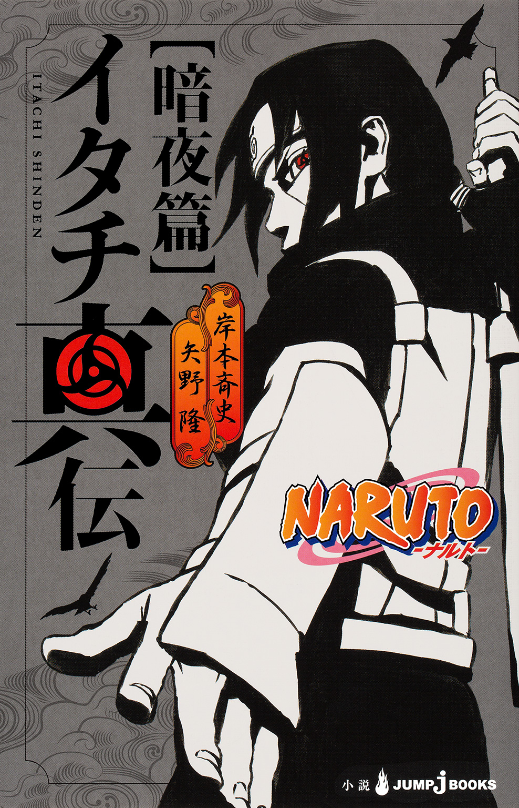
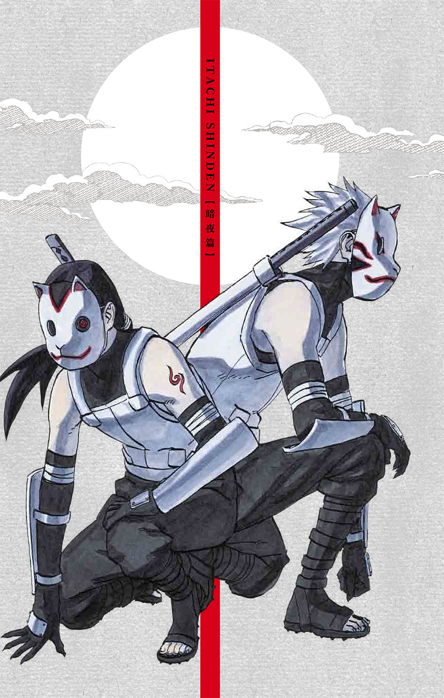
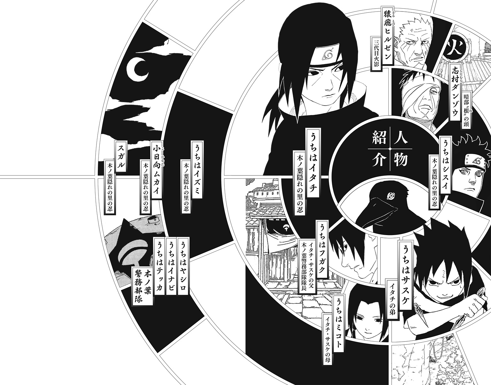
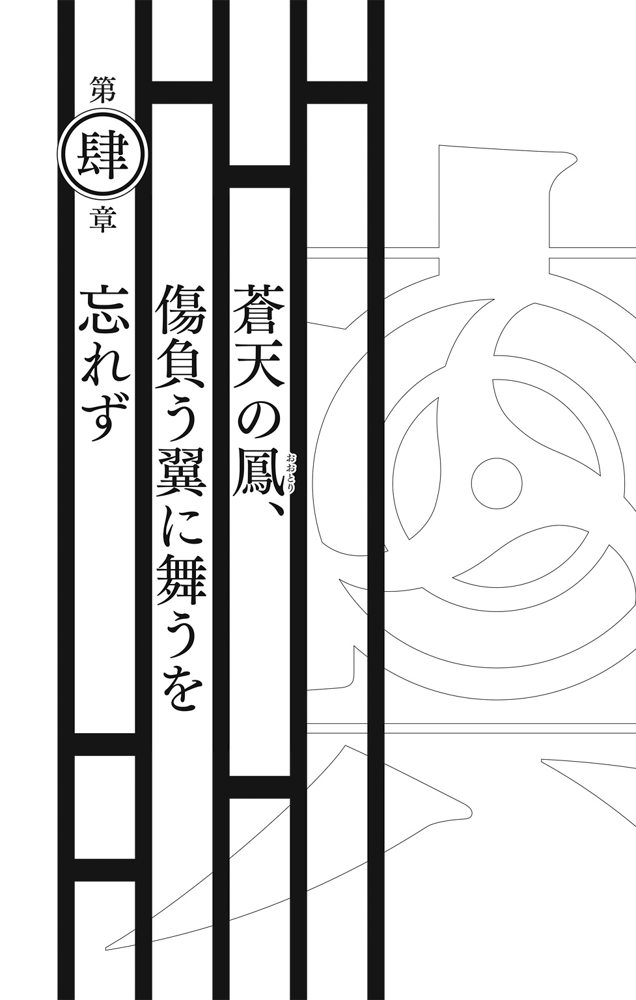
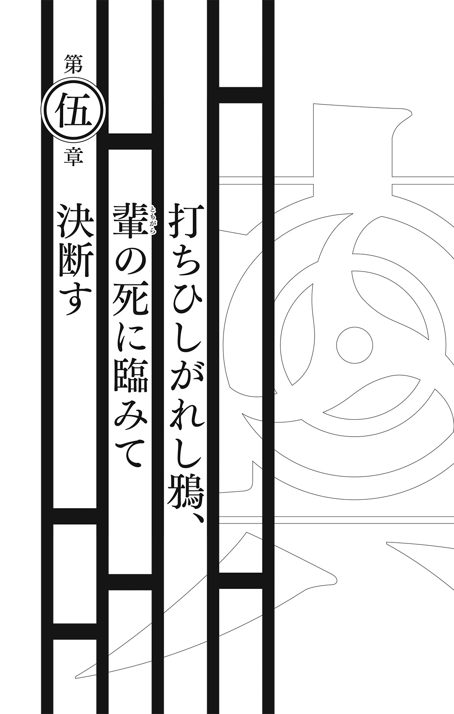
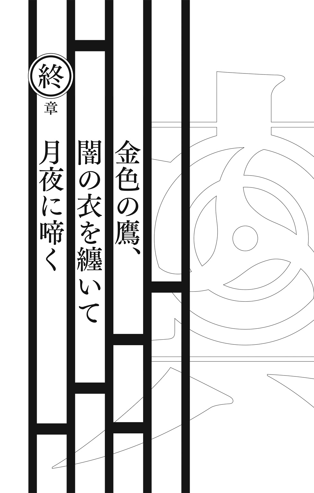
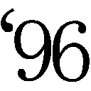
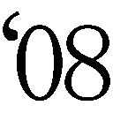

| NARUTO―ナルト― イタチ真伝 暗夜篇 | |
| 岸本斉史 & 矢野隆 | |

この本は縦書きでレイアウトされています。
また、ご覧になる機種により、表示の差が認められることがあります。


この作品はフィクションです。
実在の人物・団体・事件などにはいっさい関係ありません。

あ ら す じ
この世から一切の争いを無くす――幼少にしてそう決断したイタチは、忍者学校を首席で卒業、下忍を経て、中忍へと早期昇格、うちは一族初の火影を目指し、栄光の道をひた走る。一方、九尾事件を発端とするうちは一族と里との相剋が激しさを増す中、互いの繋ぎ役となるべく、イタチは暗部編入を迫られる。編入の条件は、スパイにして、白眼と柔拳の使い手・小日向ムカイの暗殺......。イタチの過酷な戦いが、絶望が、始まる......。
――お前がこれからどうなろうと
おれはお前をずっと愛している

一
明日、小日向ムカイがひと月ぶりの休暇を取る。志村ダンゾウの口からその事実を知らされたうちはイタチは決行の意志を固めた。
すぐに手配が進められ、イタチそして同行するうちはシスイの任務日程が変更される。
ダンゾウの差配によるものだった。
イタチは明日、同じ里に生きる忍を殺す......。
裏切り者とはいえ、同胞であることには変わりない。里の仲間だ。そんな男を殺すことに、躊躇いがないと言えば噓になる。しかしこれは、イタチの忍人生でこれまで経験してきたどの任務よりも重く重要なものだった。
断ることはできない。
ムカイは霧隠れの里と裏で通じ、木ノ葉隠れの里の重要な機密を漏らしつづけている裏切り者であるという事実を強烈に心に念じつづけ、なんとか罪悪感との折り合いをつけていた。
「準備ができたよっ！」
快活な声が、イタチの思惟を破った。
「言われた通り、全部で八つ仕掛けたよ」
そう言って笑った弟に、微笑を返す。
森のなか。
明日の任務決定を受け、イタチは休息を得ていた。サスケに懇願される形で、修業に付き合っている。林立する木々のなかに、二重丸が描かれた的がサスケによって隠されている。ものの見事にひとつとしてイタチからは見ることができない。
「さぁ、兄さん」
ワクワクするのを隠せないといった様子で、サスケが跳ねる声で急かす。
うなずきながらイタチは両手にクナイを握った。
指の股にひとつずつ挟むと、ちょうど八つになる。軽く握った拳から、八つの鉄の爪が飛びだしていた。
顔を伏せ、少しだけ精神を統一する。そして腹の奥に溜めたチャクラを、目の奥に注ぎこむ。
写輪眼......。
木々の息吹が一気に騒がしくなる。轟々と蠢く命の脈動のなかに、小さな円形の異物が見えた。
八つ。
小さな呼気をひとつ吐き、イタチは地を軽やかに蹴った。
宙で頭と足を反転させる。身体を逆さにしたほうが、重心が下にむかって伸びて体勢が安定するからだ。体勢が安定することで、クナイのコントロールの精度が増す。
目を閉じ、脳内にある八つの的をイメージする。ふたつほど、この場所から届かないものがあった。正面の巨大な岩の裏あたりに、無造作に転がされている的が一番厄介である。
まずは左手の四本を一気に投げた。
比較的安易な場所にある四つの的を的確に打ち抜く。
今度は右手の親指から中指にかけて握っている二本のクナイ。
これも無事に的を貫く。
残りはふたつ。
未だイタチの身体は宙空にある。跳びあがってからまだ一秒もかかっていない。
中指と薬指に挟んだ一本を左手に持ち替える。
左右にクナイが一本ずつ。
両腕を振って同時に投げる。
ふたつのクナイの軌道を、あえて重ねていた。虚空でぶつかり合った刃が鋭い金属音をあげて、互いに弾かれるようにしてあらぬほうへと飛んだ。
着地。
写輪眼が紅の光を放っている。
ゆっくりと立ちあがったイタチの視線の先に、弟の気配があった。危険を避けるように木の陰に隠れていたサスケが、ひょっこりと顔を出す。すべての的の中心を貫いたイタチの腕に、茫然としているようだった。口をあんぐりと開けたまま、自分の目の前にある岩の背後を見つめている。
そこには一番厄介な的がある。
もちろんそれも打ち抜いていた。最後の二本を激突させて軌道を変えたのは、この的のためである。
「すっげーよ兄さん！ 岩の裏の死角の的にもド真ん中だ!!」
サスケが木の裏から飛びだした。両手にクナイが握られている。兄の腕を見て心が逸り、いてもたってもいられなくなったという様子だった。
「よ――し......オレだって！」
「......サスケそろそろ帰ろう」
「！」
やる気になり躍動していたサスケが、急に動かなくなる。兄のほうへとむけた弟の顔に、不満が満ちていた。
「............」
不服そうに兄を睨んでいる。
「新しい手裏剣術、教えてくれるって言っただろ！」
約束はした。が、いま目の前で見せてやったことで十分に約束は果たしたつもりだ。
「明日はちょっと大事な任務があって、その準備がある」
主に心の準備だ。
弟が顔を逸らし、口を尖らせる。顰めた眉の下にある涼しい目が、いまにも泣きだしそうになるほど歪んでいた。
「......兄さんのうそつき」
手裏剣術を教えてもらえなかったことを怒っているのではない。兄と過ごす時間が中断されたことを怒っているのだ。
イタチもできるならば思う存分サスケと修業をしていたい。しかし明日の任務はそれを許すような生易しいものではなかった。
泣きたいのはイタチも一緒だ......。
顔を背けながらも、恨めしそうな目で兄をのぞき見ている弟に手招きをする。
「！」
曇っていた弟の顔が、喜びで一気に晴れた。嬉しそうな足音を森に響かせて、サスケが駆け寄ってくる。
「許せサスケ......また今度だ」
言いながら人差指を突きだすと、駆けてきたサスケの額に命中した。
「イテェ！」
突進を阻まれたサスケが目を閉じながら小さく叫んだ。
兄を見上げる口が、への字に結ばれていた。こういう表情をする時、サスケはいつもなにかを企んでいる。
「兄さん、見てて！」
両手を交差させてクナイを構えるサスケが不敵に笑った。
「トォ――――――！」
イタチが止める間もなく、サスケが的にむかって飛んでいった。
「コラ！ 無茶したら......」
叫ぶイタチの目の前で、サスケが足首を捻って頭から地面に盛大に突っこんだ。
帰り道。
足を怪我したサスケをおぶい、木ノ葉隠れの里をうちはの集落にむかって歩いている。背中に弟の温もりを感じながら、穏やかな時間が過ぎてゆく。
背にあるサスケの気配が、わずかな細波を立てた。イタチは立ち止まり、肩越しに弟を見た。
「どうした？」
「ここでしょ......父さんが働いてる所」
「木ノ葉警務部隊の本部だ」
円を基調としたコンクリート製の巨大な建物を見上げながら、イタチは弟の問いに淡々と答えた。
そんな兄の言葉に、弟は大人びた声で続ける。
「前から気になってたんだけど、なんで警務部隊のマークにうちは一族の家紋が入ってるの？」
「なんだ......気づいてたのか......」
「当たり前だろ！」
背伸びするように答えるサスケの声に、自然と口元がほころぶ。
「うん......。そうだな、簡単に言うと、この警務部隊を組織し設立したのが、うちは一族の先代たちだったらしい。だからこの組織のシンボルマークに自分たちの家紋を付けたのさ。昔からうちは一族はこの里の治安をずっと預かり守ってきた。うちはの家紋は、その誇り高き一族の証でもあるんだよ」
なにかを知ろうとする弟の欲求を満たそうと、イタチは極力難しい言葉を避けながら語る。
そんな兄の言葉を、弟は黙って聞いている。
「いまやうちは一族も小さくなってしまったけど、いまでもほぼ全員がここの第一分隊に所属し、里の治安維持に貢献してる」
シスイのような例外もある。シスイの場合は、優秀さを高く評価した里の忍たちによる要請があったと聞いている。警務部隊に入ってしまうと、外部の忍たちと交わることが極端に減り、うちは一族の枠に完全に組みこまれてしまう。それを恐れた里の忍たちの懇願によってシスイは現場の任務についているのだった。しかしそんなことはサスケに説明することでもないだろうと、イタチは思考のなかで切り捨てた。
「忍の起こす犯罪を取り締まれるのは、さらに優秀な忍だけだからな」
そして......。
忍が生みだす争いを収めることができるのは、さらに優秀な忍だけなのだ。
「兄さんもここに入るの？」
弟の無邪気な問いがイタチの心を刺す。
入らない......。
本当の答えが喉の奥まで出かかった。
「さぁ......どうかなぁ......」
里に不満を持つ一族のために暗部に入るなど、口が裂けても弟には言えない。イタチは言葉を濁すしかなかった。
「そうしなよ！」
大人の暗い事情などなにも知らない弟は、屈託のない声で叫んだ。そのキラキラとした純粋さがイタチの胸を締めつける。
「大きくなったら......オレも警務部隊に入るからさ!!」
兄弟で警務部隊に所属し、任務に励む。
夢のような日々だ。
しかしそんな日は絶対に来ない......。
イタチは暗部に行く。
もし警務部隊に入れる環境であったとしても、それを甘んじて受けるつもりはなかった。
この世の争いをなくすという夢がある。夢の実現のためには、警務部隊という器はあまりにも小さかった。
「明日の入学式には父さんも来てくれる。オレの夢の第一歩だ」
弟の夢は、兄とともに警務部隊で忍として働くこと......。
嬉しかった。
が......。
その夢は叶わない。
「......そうだな」
イタチには曖昧な答えしかできなかった。
＊
うちはの集落と里をへだてる門へと至った時、不意に塀のそばに気配が立った。
「遅かったな......なにをしてた？ いまから話がある」
腕組みをした父がイタチを見ていた。
「早く帰るぞ」
「はい」
答えたイタチにうなずくと、父が目の前を歩きはじめる。真っ直ぐ家にむかう迷いない足取りを追うようにして、イタチは弟をおぶったまま重い足を動かした。
いつからこんなに父と相対することが億劫になったのか？
答えは判っている。しかしイタチはその答えを認めたくはなかった。
父の居室。
並んで座るイタチとサスケの前に、腕を組む父の姿がある。
「明日だそうだな」
唐突に父が切りだした。
イタチは黙したまま胸の鼓動が激しくなるのを感じている。父の言葉の意味は解っていた。明日のムカイ暗殺の件を指しているのだ。それが鼓動を速くさせている。
いったい父はどこまで知っているのか？
そして任務のことを誰に聞いたのか？
後者の問いに対する漠然とした答えはある。聞くとしたらダンゾウに近しい者以外に有り得ない。
どうしてダンゾウは父に任務の情報を漏らしたのか？
疑念が疑念を呼び、イタチの胸を搔き乱す。
「フフ......さすがオレの子だ......中忍に昇格してからたった半年でここまで来た」
イタチは黙したまま父を見ている。
サスケが心配そうな眼差しを兄へとむけていた。
「明日の特別任務だが......オレもついて行くことにした」
胸がこの日一番激しく鳴った。が、それよりも隣に座る弟の心の揺れのほうが、何倍も激しかった。
父は一族のことで頭が一杯になって、明日が弟にとってどれだけ重要な日であるかを忘れている。
父への怒りが湧く。
「この任務が成功すればイタチ......お前の暗部への入隊がほぼ内定する」
沈黙を続ける息子を見つめる父の瞳が紅く染まる。
「分かってるな......」
ムカイ暗殺に同行を許されたのは一人だけ。すでにシスイが同行することを、ダンゾウにも伝えていた。その事実を知らないということは、父は任務の詳細までは知らないということだ。恐らく任務決行の日程だけを、何者かから知らされたのだろう。
里を憎みながらも、里からもたらされた情報に翻弄される。そんな父のことが、たまらなく哀れに思えた。
決死の覚悟を要する任務。
ともにする者はシスイ以外に有り得なかった。
父の介入は絶対に許さない。
「そんなに心配しなくても大丈夫ですよ。それより......」
サスケを見た。いますぐ大声で泣きたいだろうに、聡明な弟はみずからの感情を押し殺しながら笑っている。
〝大丈夫だよ、兄さん......〟
弟の心の声が聞こえるようだった。
イタチは微笑みを浮かべ、目に言葉を込める。
〝言ってみろ......明日はお前にとって大事な日だろ？〟
力を込めた視線で、小さな背中を押す。
「父さん......明日はオレの......」
「明日の任務はうちは一族にとっても大事な任務となる！」
弟の勇気は、一族のことしか頭にない父の強硬な言葉で打ち砕かれた。そしてサスケは、涙を堪えるのに必死になりながら、凍りついた表情で顔を伏せた。
父への怒りが限界を超える。
そこまで一族が大事なのか？
弟のことなどどうでもいいのか？
その目に映っているのは一族の未来だけ。決死の任務にむかおうとする息子のことなど、なんとも思っていない。ましてや弟など眼中にも入っていない。そんな狭い了見で、どうして木ノ葉隠れの里に勝てるというのか。
すべてが嫌になった。
「オレ、やっぱり明日の任務やめるよ」
「!? なにを血迷ったことを言ってる!? 明日がどれほど大事な日か、お前にも分かっているはずだ！ いったいなんだと言うんだ!?」
「明日はサスケの忍者学校の入学式についてくよ」
父がわずかに息を吞んだ。この時はじめて父は、我が子の明日の予定を思いだした。それがまた、たまらなく腹立たしく......。
悲しかった。
「忍者学校の入学式には、身内が参列するのが通例。通達もあったでしょ......父上」
任務を放棄するという言葉は本気だ。心の底からの言葉に噓はない。
イタチの本気を、父は理解したようだった。わずかな沈黙が場に流れた後、父は呆れたように小さな溜息をひとつ吐いた。
「......もう分かった......忍者学校へはオレが行く」
そう言って立ちあがった父は、母の待つ食卓へとむかって歩きだした。イタチとサスケも部屋を出て後を追う。
庭で鹿威しが乾いた音を発てる。
ああいう風に言ってみせれば、父は必ずサスケの入学式に出るということは、イタチには判っていた。息子の暗部入隊は一族の悲願達成へと近づく第一歩なのだ。サスケの入学式で棒に振る訳にはいかない。
どうしても父を任務に同行させる訳にはいかなかったからこそ、本気でサスケの入学式に出るつもりだった。
すべてに嫌気がさしたことも、忍者学校に行く気だったことも噓ではない。が、やはりシスイとともに任務を達成することを諦めていた訳ではなかった。
暗部入りは一族の悲願達成の足がかりではない。
すべての争いをなくすため、この世で最も秀でた忍になるというイタチの夢を達成するための、ささやかな一歩なのだ。
譲る気はなかった。
そのために弟を利用した......。
そんな自分に失望する。
父の入学式参加が決まったものの兄と父の険悪な空気を作ったことに責任を感じている様子のサスケは、静かにイタチの後ろをついてくる。肩越しに弟を見ながら、イタチは後ろめたい気持ちを隠して口を開いた。
「左足......ちゃんと冷やしとけよ」
そう言って笑った自分の笑顔は、引き攣っていないか？
気になった。
「うん......」
弟が複雑な表情で答える。
そんなサスケにかける言葉が、イタチには見つからなかった。
二
「コイツのために生きてると言っても過言ではねぇな」
息を吞むイタチの目の前で、小日向ムカイはそう言ってタバコの煙を空に吐いた。タバコを持たぬほうの手には、酒の入った銀色の瓶が握られている。
睨み合う三人の周囲には、十人を超す霧隠れの忍が転がっていた。
すでに気を失っている。
すべてイタチとシスイの二人だけで倒した。
「おとなしく投降しろ小日向ムカイ。火影様は自首した者に対しては寛容なお方だ。殺すようなことはしないだろう」
イタチの隣に立つシスイが言った。その瞳には、すでに写輪眼の三つ巴が浮かんでいる。それを見ないようにうつむきながら、ムカイは皮肉めいた笑みを浮かべた。
「瞬身のシスイといえばちょっとは名の知れた忍だ。それでもやっぱり、陽の当たる場所しか歩いていないと、その程度の感覚しか持てないのか。それとも......」
急に言葉を止めて、ムカイが銀色の瓶を傾けた。
「まだまだガキだってことか？」
右眼だけを大きく見開いて、ムカイがシスイをせせら笑う。その見下すような態度が、シスイの眉間に皺を刻む。
「オレがやったことは知ってんだろ。だったら、自首ぐらいで許されるかどうかくらい、判るだろ」
親指を弾いて灰を落とす。
「いまをときめくうちはの天才二人が刺客とは、光栄の至りだ」
懐から取りだした携帯灰皿にタバコを投げ入れた。銀色の瓶に蓋をして、ベストのポケットにしまう。
「このままじゃ危ねぇな」
呟くムカイのチャクラが急激に量を増した。
影分身を戻したのである。ムカイのチャクラが増したのと同時に、イタチは木ノ葉病院を監視していた自分自身の影分身を解術した。
「さっきまで話してたオヤジが影分身だったと知って、いま頃息子は怒ってんだろうな」
ムカイが頭を搔きながら、眼前の二人を睨んだ。
「こりゃさっさと帰って言い訳しねぇとな」
腰を深く落とし、両の掌を胸の高さに掲げる柔拳独特の構えを見せる。
イタチは胸の奥にあった想いを吐きだした。
「アンタほどの忍が、どうしてスパイに？」
「オッサンになると色々とあるんだ。そしてその色々ってのは、歳を取ってみなきゃ解らねぇもんだ。だからいまのお前たちに話したところで、半分も理解できやしねぇよ」
「アナタが死ねば、病気の息子はどうなる？」
「そういう色々のために、オレはこんなところじゃ死ねねぇんだよ。たとえお前たちを殺したとしてもな」
ムカイの左眼の周囲に無数の筋が走る。
「白眼だ！」
イタチが叫んだ時には、すでにシスイは後方に飛んで間合いを取っていた。
「手加減はできねぇから、許してくれよ」
立ち止まったままのイタチの耳元でムカイの声がした。
一気に間合いが詰まる。
凄まじい速度で右と左の掌がイタチの喉と鳩尾を同時に襲う。
鳩尾へとむかった手刀を腹に突き刺すと、身体の内部で人差指と中指を曲げた。
「ふっ！」
気迫のこもった呼気を吐いたムカイの手刀が、イタチの腸を引き抜く。
瞬間......。
腹を引き裂かれて立ち尽くすイタチが、夥しい数の烏に変じ舞いあがった。みずからに襲いかかる嘴を避けるでもなく、ムカイは流麗な身のこなしで何事もなかったように凌いだ。
その背後にシスイが忍び寄る。
「火遁・豪火球の術」
素早く印を結んだシスイの口から、ムカイを吞みこむほどの火の球が吐きだされた。
右手の掌を顔の前に差しだしたままの体勢で、ムカイは火球と正対した。
直撃。
いや。
火の球がムカイの前で真っ二つに割れた。
なにか術を施したようには見えなかった。だからといって特別な気を身体にまとっているという訳でもない。ムカイの目の前で火の球自身が、みずから割れたようにイタチには見えた。
「敵のチャクラを絶つ柔拳を操るということは、その流れを熟知するということ。術はチャクラの塊。流れを読めれば、割ることはそう難しくはねぇ」
楽しそうに講釈を述べるムカイがシスイにむかって駆けた。
シスイが顔を曇らせる。シスイ自身も人並み以上の体術の技を持っているといっても、相手は柔拳の使い手。体術というレベルの代物ではない。顔が曇るのも仕方がなかった。
ここまでのすべての展開を、イタチは遠くから俯瞰している。
木ノ葉隠れの里を離れ三時間ほど北に上った火の国の領内。小高い山に囲まれた小さな盆地で三人は戦っている。草木一本生えない岩山は、人ひとりが隠れることのできる場所など、いくらでもあった。イタチは手頃な岩陰に潜んで、二人の戦いを見守っている。
ムカイと相対していたのは影分身のみ。
イタチは最初からこの場所を離れていない。
相手は柔拳の使い手。
接近戦で仕留めるのはあまりにも難しい。
勝負は遠距離からの一撃で決まる。
写輪眼は瞳術だ。自分の眼にチャクラを込めて相手を術に嵌める。つまり自分の視線が届く距離にあれば、敵を嵌めることができるということだ。
視線の交錯はなにも意識下のみに起こることではない。何気ない景色だと思い、敵が視線を巡らせる。その視軸と術者の視軸が完全に一致さえすれば、相手が意識せずとも視線が交錯した状況を作りだすことができる。
イタチはその瞬間を待っていた。そしてシスイはそのために、あえて危険な接近戦に臨みながらムカイの体勢をイタチの視軸に合わせようと奮闘している。
写輪眼の瞳術さえ発動してしまえば、後はどうにかなるはずだった。ムカイの心に小さな綻びさえ作ってしまえば、それを糸口にして徐々に瞳術を浸食させてゆけばよい。
問題なのは最初の一撃なのだ。
経験豊富なうえにチャクラの流れを視覚として感じることができる血継限界〝白眼〟の使い手であるムカイは、とうぜん写輪眼が如何なるものかということを心得ている。それを崩すための作戦だった。
ムカイの左の突きをギリギリのところで躱したシスイが、大きく身体を仰け反らせた。好機とばかりに、ムカイが大きく間合いを詰める。
シスイがひるがえるようにして後方に飛んだ。その瞬間、ムカイの顔がイタチの潜む岩陰のほうへとむいた。しかしまだ両者の視軸は交錯していない。
着地したシスイへ目をむけたムカイが、不意に顔を逸らした。
写輪眼を発動させたのだ。
とうぜん、シスイの写輪眼は陽動である。ムカイが顔を逸らした場所こそ、イタチが潜む岩陰の方角だった。
意識を敵に対して研ぎ澄ましたイタチの視線と、無意識に風景を捉えるムカイの視線が、交錯する......。
はずだった。
紙一重というところで、ムカイが急に地面を蹴って飛んだ。
凄まじい跳躍。
着地するとまた別の岩を蹴って跳躍する。
こちらの場所が知られたのだ。
先の一瞬、ムカイは白眼の能力でイタチの存在に気づいた。恐らくその時、写輪眼を発動させていることも判ったのだろう。
みずからの直感を確認するためか、それともイタチを戦いの場に引きずりこむためか。とにかくムカイはイタチの潜む岩まで一直線に跳ぶ。その背後に立つシスイが笑ったのを、イタチは見逃さない。
シスイが消えた。
次に現れたのはムカイの眼前。
「チッ！」
舌打ちをしたムカイが、ゴツゴツと切り立った岩場に叩き落とされた。その顔面に、シスイの蹴りが炸裂する。
頭蓋が割れた。そう思ったイタチの眼に映ったのは、砕けた丸太。
「影分身か！」
「そうだ......」
小さく叫んだイタチの背後で、ムカイの声が聞こえた。
柔拳の体勢。
「八卦二掌」
腹を続けざまに打つ左右の掌底。
「八卦四掌」
息をする暇もなく、今度は四発。
「八卦八掌」
反撃の糸口を模索するイタチの思考を嘲笑うかのように、ムカイの連撃が容赦なく襲いかかる。
「うおぉぉぉぉぉぉっ！」
悲痛な声がムカイの右側面から聞こえた。
白眼の死角だ。
朦朧とするイタチの視界の端で、飛び蹴りを放つシスイの姿が揺れていた。
「シスイ......」
呟くだけの暇があったのは、ムカイが防御の体勢を取ったからである。
いや。
防御という言葉では生易しい。飛び蹴りを顔を傾けるだけで避けたムカイは、突きだした左手でシスイの首をつかみ、そのまま高々と吊りあげている。
逞しい青年の身体を、ムカイは腕一本で支えていた。
首を絞められたシスイが、必死にもがいている。しかし喉にめりこむ五本の指はなかなか剝がれてはくれない。
「弱点を克服するために行うのが〝修練〟というものだ。片方だけに発現した白眼の死角を体術でカバーすることは、オレの修練の第一歩だった。あんまりオッサンを甘く見るんじゃねぇぞ、小僧ども」
「小日向ムカイ......」
イタチは目の前の強大な敵の名を、無意識のうちに呼んでいた。その足は自分でも解らないうちに前に踏みだしている。
「なんだ？ 殺してほしいのか？」
たしかにそう取られてもおかしくはない状況だった。柔拳をしたたかに撃ちこまれ、身体中のチャクラの流れを途絶させられたいま、イタチにどんな逆襲の手が残っているというのか。なんの策もなく前に進むことは、蛮行と判断されても文句は言えない行為だ。
しかし足は前進を止めてくれない。命じた覚えもないのに、ムカイにむかって愚直に歩を進める。
「ならば望み通り楽にしてやろう」
「ぐうぅっ！」
ムカイがシスイの首をつかむ手に力を込めた。このまま喉仏を潰すつもりなのだ。
「やめろっ！」
叫んだイタチの眼に写輪眼が煌めいた。
「そんなあからさまな幻術がオレに通じる訳がねぇだろ」
言ったムカイがイタチから顔を逸らした。
その目の前には......。
親友の顔があった。
「万華鏡写輪眼......」
シスイはそう囁いた。
紅に変化した友の瞳はこれまでイタチが見たどの写輪眼とも違った形をしていた。
瞳の中心に小さな黒点を描き、その外円ともいえる丸に、巴の状態で勾玉状の斑点が浮かぶのが写輪眼である。勾玉の数によって力が変わることはあるが、この形自体は一族共通であった。
しかしシスイのそれは違う。
三つ巴の勾玉が巨大化して繫がり、瞳の中心にあった小さな黒点が消え、紅の空洞を形成している。通常の写輪眼の赤と黒の比率が八対二程度ならば、いまのシスイの瞳のそれは五対五と拮抗の様相を呈していた。
恐らくシスイの視線とムカイの視線が交錯したのは、何千分の一秒にも満たない。
通常の写輪眼では捉えきれるかどうかというギリギリの一瞬だ。
その一瞬をシスイは逃さない。
間違いなくムカイは幻術に嵌ったはずだった......。
「ムカイッ！」
拘束を解かれたシスイが茫然と叫んだ。その目の前には、腹から血飛沫をあげながら倒れるムカイの姿があった。
イタチは立ち尽くしながらそれを眺めている。
みずから腹を斬った。
シスイが写輪眼を発動した瞬間、わずかに身体を硬直させたムカイは、懐からクナイを取りだすといきなり自分の腹を一文字に切り裂いたのだ。
「しっかりしろムカイ！」
しゃがみこんでムカイの頭を抱えながらシスイが叫ぶ。
「他里のスパイだ......。脳に干渉を受けた場合、みずから命を絶つように術を施されてる。もう助からねぇよ」
咳きこんだムカイの口から血が迸る。
「あ、あの時間で瞳術に嵌めるやつなんてはじめて見たぜ......。ありゃあ、いったいなんなんだ？」
「.........」
シスイは答えない。
「うちはの秘術って訳か......」
口籠るシスイを気遣い、イタチはムカイに声をかけた。
「なにか言っておきたいことはあるか？」
「こ、こんなことになっちまったが......。オ、オレがやったことは、オレ一人の了見で決めたことだ......。嫁やガキは関係ねぇ......」
「裏切りは自分一人の罪ということか」
「虫のいい話だがな......」
震える手が懐でなにかを探している。イタチはムカイの指を押し退けるようにして目的のものを取りだした。
箱からタバコを一本摘み、ムカイの口に差しだす。
「ひ、火を......」
今度はシスイがポケットからライターを取りだし、タバコの先に火を点けた。
タバコをくわえて深く息を吸いこみ、肺の底まで流しこむと、ムカイは味わうようにして煙を吐きだした。
「忍の死に様なんざこんなもんさ......。先にあっちで待ってるぜ......」
タバコを指に挟んだままの掌がガクリと落ち、そのままムカイは動かなくなった。
「終わったな」
疲れで声を震わせながらシスイが言った。
イタチは無言でうなずき答えに代えた。
「さっきの写輪眼のことだが......」
ムカイの顔を見つめたままシスイが呟く。
「里の連中には黙っていてくれないか？」
「あぁ」
「万華鏡写輪眼......」
言ったシスイの瞳がふたたび、あの変質した写輪眼の紋様を映しだした。
「時が来たら、お前にだけはすべてを話す」
友がその身に秘めた未知なる力に、イタチは抗しきれない魅力を感じていた。
三
「ろ班か......」
書類に目を落としながら呟いたダンゾウを、イタチは直立不動のまま見つめていた。
〝根〟に与えられた屋敷のダンゾウの部屋である。黒檀の机を前にして座る彼は、左の肘を肘掛けにもたせかけ、右手に書類を持ちながらイタチには一切目をむけない。
「隊長は、はたけカカシだな」
「はい」
イタチは簡潔に答えた。
ダンゾウの横に立っている男のことが、さっきからずっと気になっている。
白虎の面を着けた根の者だ。なにがどうという明確な理由がある訳ではない。ただなんとなく、男のことが気になった。白色の面に空けられた丸い穴のむこうにある瞳が、前からずっと、ねめつけるようにイタチを眺めている。その陰険な視線が、なぜだか心をざわつかせるのだ。
「あの男は優秀だ」
ダンゾウが断言するように言った。
はたけカカシ......。
まだイタチが忍になって間もない頃、彼に救われたことがある。
火の国の大名警護の任務で、正体不明の男に襲われ同じ班のテンマが殺された。まだ写輪眼を開眼していなかったイタチは、圧倒的な力量の差に死すら覚悟した。
しかし男は、とつぜんカカシの名を呟いて姿を消したのである。いまでもあの時、なぜ男が姿を消したのかはっきりとした理由は解らない。ただ、たしかに男はカカシの名を呟いて消えた。それは彼の力を恐れてのことなのか、それともなにか別の理由があるからなのか。いまとなっては確認する術もない。
「あの男には闇がある。それは暗部にとって最も重要な要素だ」
闇......。
己は持っているのか？
イタチは自問する。
「安心しろ。お前にも十分、闇はある」
まるで心を見透かしたかのように、ダンゾウが言った。すでに何度となく接しているイタチは、さほど驚かない。相手の心境を洞察する能力に長けていれば、ある程度の推測で先回りして思考の答えを述べることは可能である。
ダンゾウはその技術を利用しているだけだ。
「転属祝いを用意した」
そう言ってダンゾウが、資料を机に放って立ちあがる。黒檀の椅子を同質の机の下にしまうと、虎面の隣に立ってイタチを見た。そして男の肩に手をかけると、珍しく陽気な笑みを浮かべた。
「この男を、ろ班に貸しだすことになった」
ダンゾウの根も暗部の一部であるが、三代目火影直轄の暗部とは指揮系統や統率面で、完全に切り離されていた。そのため、暗部内で両者が頻繁に情報を交換したり人員をやり取りするようなことはないと、イタチは聞いている。
「心配するな、ヒルゼンの許可はもちろん得ている」
またも心を見透かしたような台詞をダンゾウが吐いた。イタチはこの高慢な物言いが、何度聞いても好きになれない。
「初メマシテ。スガルト申シマス」
唐突に虎の面が喋った。喉になにか詰まってでもいるのか、声の端々にガサガサとした乾いた音が混じり、聞き取り辛い声である。
「スガルは幼い頃に喉に重病を抱えてな、それ以来、声が上手く出せなくなった」
「喋ルコトガ必要ナ任務ナドハ難シイノデスガ、ソレ以外ノコトデシタラ何デモヤリマス」
声に違和感はあるが、軽い口調ではあった。どうやら気さくな性格であるようだ。
「この男は、お前の手足として使ってくれていい」
「手足？」
「ハイ」
ダンゾウに問うたイタチに、スガルが答えた。
「私ハ〝根〟ノ者デス。ダンゾウ様ノ命令は絶対ナノデス。ダカラ、イタチサンノ手足ニナレト命令サレレバ、タトエ歳下デアッテモ、私ハアナタノタメニ命ヲ投ゲダス覚悟デス」
あっけらかんと皮肉を述べるスガル。イタチは微笑すら浮かべずにダンゾウを見つめる。
「オレは一人でも暗部でやっていける」
「あまり大事に捉えるな。あくまでスガルは根から、ろ班へと貸与されたという形。お前との因果関係など隊長のカカシすら知らないことだ。別にお前がスガルのことを意識しないのであればそれでいい。しかしスガルはつねにお前の身の安全を守る」
「身の安全？ オレが誰かに狙われてるとでも言うのですか」
「うちは初の暗部で、若干十一歳。僻みや妬みを受けるには十分な肩書だ」
「............」
たしかに、ろ班との顔合わせの際、会場となった演習場への道のりで、仲間たちからクナイの洗礼を受けた。直接当てる訳ではないが、虚空から際限なくクナイが降ってきたのだ。まるで演習場への道を妨害するような無言の圧力である。イタチは避けることも抗弁することもなく、淡々と歩いて抜けた。
仲間たちの行動に気づいたカカシが諫めたが、本当に反省した者など一人もいなかった。
「ワシはお前を買っている。仲間の嫉妬などで早死にしてもらいたくはないのだ」
「誰が襲ってこようと......」
「暗部の忍を舐めるな」
ダンゾウがイタチの言葉を断ちきる。
「うちはを快く思っていない者は里の中枢に近づけば近づくほど多くなる。任務中の死に見せかけてお前を殺そうという輩がおってもなにもおかしくはない。お前が死ねばうちは一族はどう思う？」
「まさか......」
「そのまさかの事態も有り得ると言っているのだ」
イタチの思考を肯定するように、ダンゾウは大きくうなずいた。
イタチが任務中に死ぬ。それを父たちは里の者たちの陰謀だと疑う。イタチの死は一族の立場に不満を持つ者たちにとって格好の起爆剤となるだろう。自分の死がクーデターの引き金になるかもしれないと思うと、イタチは背筋に怖気が走るのを感じた。
「お前はすでに、里にもうちは一族にも大きな責任のある立場になったのだ」
スガルから離れ、机を回ってイタチの前に立つと、ダンゾウは優しく肩に触れた。
「お前には、里と一族を繫ぐ架け橋になってもらわねばならぬのだから、長生きしてくれよイタチ」
父と同じようなことをダンゾウが言った。
木ノ葉隠れの里とうちは一族......。
それは並立した存在なのか？
木ノ葉隠れの里に住む者のなかにうちは一族もあるはずだ。ならばそもそも二つが相対するという関係性が不自然なのではないのか？ どうして木ノ葉はうちは一族を完全に支配しないのか。どうして一族の同胞たちは自治権まで認められているというのに、あれほど里に対して不満を持つのか。
両者を繫ぐ存在。
父に言わせればパイプ。
ダンゾウに言わせれば架け橋。
どちらも一緒だ。
「お前の命はワシが守る。安心して暗部としての務めを果たせ。うちはイタチ」
満足そうに語るダンゾウに、イタチは小さな辞儀ひとつを返し、すぐに部屋を後にする。
＊
「なんか久しぶりだね......」
うつむいたままイズミが言った。
一族の集落にある小さな公園にイタチはいる。暗部編入も無事に済み、ダンゾウへの報告を済ませた夕刻であった。
集落の入り口に立った時、ぐうぜん任務帰りのイズミと出会ったのである。どちらから誘うでもなく二人は自然と公園に足をむけた。イズミは一人ブランコに乗り、イタチはその背後にあるベンチに座っている。
「あの時はゴメンね」
「あの時？」
イタチが問い返すと、ブランコを揺らしつづけながらイズミが肩越しに視線をむけてきた。
「ほら、里のお茶屋さんで......」
思いだした。
怒って店を飛びだしたことを、イズミは謝っているのだ。
そういえば二人だけで話すのは、あの時以来だった。あれから色々なことがあり、正直イズミのことを考えるような暇はイタチにはなかった。だからいまのいままで、すっかり茶屋での出来事を忘れていたのである。
第一いまさら謝られても、イタチはあの時点でまったく怒っていなかったのだから、許す許さないの問題でさえない。
「オレのほうこそすまない」
「なんでイタチ君が謝るのよ」
「イズミがそこまで悩んでいるとは思っていなかった」
「ふふっ......」
前をむいてイズミがブランコを大きく漕ぎだした。
「なんだ？」
「イタチ君らしいなぁと思って」
機嫌がよくなったような明るい口調でイズミが言った。そのあまりに急激な気持ちの変化に、イタチのほうがついていけていない。
このままでは調子を乱されたままだと思い、イタチは話題を変えようとする。
「任務はどうだ？」
「イタチ君に比べれば、大したことないよ」
言ってイズミがブランコを蹴って宙に舞った。そのまま前方に一回転して綺麗に着地する。
細い両手を左右に広げたまま、イズミが振り返った。
「大名の奥方のペットの世話や、火の国の役所の引っ越しの手伝いだとか、なんだか便利に使われてるよ」
「そうか......」
イタチの口許が自然とほころんだ。イズミが危険な任務を経験していないと聞いて、安心したのである。
なぜ安心したのかという問いの答えは、わざと見ないようにした。
イタチは自分自身、まだまだ忍として半人前だと思っている。だから、イズミのことを真剣に考えるような余裕はなかった。
〝好きな人と同じ道を歩きたい......。そう思うことはいけないことなのかな〟
そう言って去ったイズミの気持ちは解っているつもりだ。
だが応えることはできない。
「ねぇイタチ君」
「なんだ？」
「もし......。もしもね。忍になってなかったら、イタチ君はなにになっていたと思う？」
「考えたこともない」
イタチは忍の親の元に生まれた。そしてみずからが忍になることに何の疑問も持たなかった。この世の争いをなくすという夢を叶えるために必要な力は、忍でしか持ち得ないとも思っている。
だから忍以外の道を考えられなかった。
「そうか......」
寂しそうにイズミはうつむいた。
「暗部に入ったんだってね」
「聞いたのか」
「集落で知らない人はいないよ」
暗部は秘匿性の強い部署である。所属している忍も、できるだけ自分の身分を明かさないということを里から求められていた。
すでに集落中にイタチの暗部就任が広まっている......。一族の結束の強さと言えば聞こえはいいが、ここまで情報が駄々漏れで本当に大丈夫なのだろうか？ クーデターなどという言葉を安易に口にして、里の連中に聞かれでもしたらどうするのか？
「ねぇイタチ君」
イズミの声がイタチを現実に呼び戻す。
「私、怖いよ」
「なにが？」
「イタチ君がどんどん遠くに行っちゃうような気がして......」
いきなり胸に衝撃を受けた。
イズミの頭が首の下にある。
「イ、イズミ......」
「ご、ごめんイタチ君。でも、もう少しこのままでいさせて」
「............」
イタチはどうすることもできず、イズミが落ち着くのを待った。
「わ、私たちまだ十一歳なんだよ......。それなのに、もうイタチ君は......。ねぇ、イタチ君はどこに行くの？」
「どこにも行かないさ」
多分......。
最後の言葉をイタチは吞みこんだ。
四
「少し拍子抜けしたんじゃないか？」
質素な扉の脇に立つイタチに、狐面の男が言った。扉を挟むように、イタチと反対の場所に立っている。
黙したままのイタチへ、男は涼やかな言葉を重ねる。
「暗部だからといって、つねに危険な任務ばかりじゃない。火影の警護も立派な任務だ」
「解っています」
イタチは淡々と答えた。その顔は男同様、狐の面で覆われている。男の面が吊り目なのに対し、イタチの瞳がある場所に空けられた穴は丸い。
吊り目の面を着けた男の名は、はたけカカシ。暗部ろ班の隊長であり、イタチの直属の上司にあたる。まだ二十歳前後という若さであるが、里のエリートである暗部に所属してすでに八年。有能であり、火影からの信頼も篤い。
この男のことをイタチは以前から知っている。
テンマが死んだあの時......。
助けに来たのがこのカカシだった。もしあの時、カカシがもっと早く現れていたら、テンマは死ななかったかもしれない。
忍は現実と結果のみを重んじる。
テンマが死んだということは、覆しようのない事実だ。いまさらそんな〝もしも〟を考え恨み言を連ねるつもりは、イタチにはない。
「暗部の基本戦術は覚えたか？」
カカシが無難な質問を投げてきた。新しく入った若い部下の気持ちを慮るよい上司である。
〝仲間殺し〟
カカシを悪く言う者が、決まって口にする言葉だった。
イタチも暗部に入ってから、幾度か聞いた。
しかしそれはすべて、カカシよりも歳上で部下に甘んじている者たちの言葉である。やっかみと妬みによる中傷以外の何物でもない。
〝カカシ隊長は任務達成のためならば仲間も殺す......〟
そう悪しざまに罵る者たちの顔は、つねに醜悪であった。
イタチはカカシの行動を悪いとは思えない。
忍にとって任務は命よりも重いはず。任務遂行の障害となるなら、仲間であろうと殺さなければならないのが忍の世界だ。しかも彼が身を置く場所は、里のエリートたちが集う暗部である。暗部は暗殺などという後ろ暗い仕事も行う。里の忍のなかで最も任務達成にシビアでなければならない立場なのだ。
そんな暗部の人間たちが、カカシの仲間殺しを中傷の道具にしているのが滑稽でならなかった。
少なくとも日頃のカカシからは、仲間を軽んじるような発言は一切聞かれない。それどころか、仲間の絆を重んじるような趣旨の発言が目立つ。現にいまだって、暗部に入って日の浅いイタチのことを気遣い、懸命に会話の糸口を探ってくれている。
優しい隊長のほうを見ず、身体を直立させたままイタチは口を開いた。
「ひと通り頭には入っています」
「さすがだな」
忍の小隊運用に関する書物を読み漁ったイタチにとって、暗部特有の戦術体系は非常に興味深いものだった。
フォーマンセル、スリーマンセル、ツーマンセル。果ては単独での身の処し方まで。忍が任務で遭遇するであろうすべての状況において、つねに攻撃的ポジションから任務遂行の可能性を模索する実戦的な戦術が網羅されている。陽動、攪乱、防御の陣形や連携にいたるまで、なにもかもが敵の撃破、任務の達成に特化していた。
イタチは知的好奇心に駆られるようにして、暗部専門の分厚い戦術書を一夜で読破した。
「忍者学校きっての俊才と呼ばれただけのことはあるな」
「最年少で卒業した人がなにを言ってるんです」
「オレが卒業した時は、大戦の真っ最中でなにがなんでも忍が必要だった頃だから、いまとは状況が違う」
それを言えばイタチが卒業した頃と現在の忍者学校の制度も違っている。イタチが卒業した頃は、まだ大戦の名残りがあった。そのため実力さえ認められれば飛び級もあったし、卒業も早かった。しかし平和になった現在、忍は長い年月をかけて大事に育てていかなければならないという火影の意志もあり、昔のように短期間で卒業することはできなくなった。その結果、サスケはどれだけ才能があっても十一歳にならなければ忍になれない。
「頭に入っているだけです。実際に仲間と動きを合わせてみなければ、覚えたとは言えません」
「お前なら大丈夫だ」
まるで見てきたかのようにカカシが言った。その響きには過度の期待や、油断や慢心からの無責任さは一切感じられない。ごく自然な口調であった。だからこそ不思議な説得力がある。
「お前にとって暗部という場所が、誇らしいものになることを願っているよ」
「ありがとうございます」
信頼できる上司......。
カカシという男には、そう思わせるだけのなにかがあった。
＊
何度来てもこの場所は好きになれない......。
熱気が支配する社殿で、イタチは鼻から深く息を吸った。
周囲を埋め尽くしているのは、一族の同胞たち。
定例の会合である。
下忍になったイズミの姿もあった。若輩であるイタチは下座にいる。同年のイズミも数名へだてた同列に座っていた。あまりの熱気に気圧されているのか、顔を伏せたままじっと動かない。声をかけてやりたいが、熱気とは裏腹に静まり返った社殿には軽はずみな行動を許さない無言の圧力があった。
「では始めようか」
最前列に坐していた父が立ちあがって、みんなのほうに身体をむけた。誰もが息を吞み、父の言葉を待っている。その光景はまるで、どこかの宗教の教祖と信者のようであった。
一族の恨みを一身に背負う指導者......。
それがイタチの父、フガクの闇の顔であった。
「我が息子、イタチが暗部へ入隊することが正式に決まった。すでに暗部としての任務もこなしはじめている」
静かな歓声が社殿中に響き渡った。
「これで我が一族は里の中枢に繫がるパイプを持った。これからは里から受け取るばかりではなく、こちらからも探りを入れてゆく」
実行するのは父ではない。
「イタチ」
父が息子の名を呼んだ。イタチは物音も発てずに立ちあがると、その場で父の言葉を待った。
「暗部に入隊し、なにか気づいたことはあるか？」
あまりにも漠然とした問いが、イタチを戸惑わせる。一族に対し、里の者たちが偏見を持ち、快く思っていない。そういう答えを父は望んでいるのだろう。実際に暗部の仲間たちは、イタチの入隊を歓迎してはいないし、これ見よがしの嫌がらせをする者もいる。しかしそれが、うちは一族の人間だからといった理由だけで行われているとは一概に言えなかった。十一歳というイタチの若さも、彼らを苛立たせている一因なのだ。
「里の人々が、うちは一族を警戒し、快く思っていないのは事実です」
「そうだ！」
父の求める答えに寄せた言葉を吐いたイタチに、座のなかから同調の声があがった。
「しかし......」
軽率な野次を押さえつけるように、声に重さを付与しつつイタチは続けた。
「だからといって一族に迫害を加えるような積極的な嫌悪は感じません。彼らの感情はあくまで、誰もが持つやっかみや妬みのようなものだと思います」
腕を組んで聞いていた父の右の眉だけが、ぴくりと震えて吊りあがった。
「お前が言う、やっかみや妬みが寄り集まって大きな感情のうねりとなることもある」
父の言葉に同意するように、同胞たちがざわざわと騒ぎはじめる。群れる声を搔き分けるように、イタチは腹の底に力を込めて言葉を吐きだした。
「そうやって後ろむきな予測を積み重ねてゆけば、どんなものだって負の現象へと還元されてゆく！」
黙したまま息子を睨む父の前に立ちはだかるように、一人の男が立ちあがった。
父の腹心、うちはヤシロである。
「おいイタチ」
細い目に殺気を漲らせ、ヤシロが呼びかける。黙ったままイタチは父の腹心を見つめつづけた。
「ずいぶん里の肩を持つじゃないか。お前は里と一族、いったいどっちの味方なんだ？ 暗部に入隊して、我が身可愛さで判断力まで鈍ったんじゃないだろうな」
「言葉で物事を枠に嵌めないほうがいい......」
「なに？」
呟くイタチに、ヤシロが問い返す。
イタチの瞳が仄かに紅く閃く。
「敵......。味方......。言葉という道具で物事を区別すると、本心が見えなくなる。踏みこまなくてもいい場所に、踏みこまなければならなくなる」
「訳の解らない問答をしている暇はない。お前はどっちの味方なんだ？ うちはイタチッ！」
ヤシロの怒号が社殿を静まり返らせる。
「決まっているじゃないですか......」
父の腹心を睨みつけたまま、イタチは続けた。
「オレはうちは一族の人間です」
＊
「ちょっといいか？」
会合が終わった帰り道、父と離れて歩くイタチは、シスイに呼び止められた。立ち止まった息子を不審に思った父が振り返り、息子の親友に気づいた。
「どうしたシスイ？」
「少し息子さんと話がしたくて......」
シスイとイタチを交互に見遣ったフガクは「あまり遅くなるなよ」とだけ言うと、夜道を一人で歩きだした。
「シスイ......」
二人きりになるとイタチは友の名を呼んだ。
「お前の気持ちは痛いほど解る」
そう言って眉間に皺を寄せる親友は、心の底から悔しがっているようだった。
「ヤシロはクーデター推進派の筆頭だ。あの男にとって里の人間はすべて敵なんだ」
さっき浴びせられた暴言が、耳の奥でいまも鳴りやまない。脳裏に浮かぶヤシロの姿から目を背けるように、イタチは顔を伏せた。
「お前が暗部に入ったように、オレも動きだした」
「どういうことだ？」
「火影様に直接に談判し、一族の内情を単独で調べる権限を得た」
一族の内情を調べるとはいったいどういうことなのか。すぐには理解できない言葉にイタチが戸惑っていると、シスイはそれを悟ったように口を開いた。
「一族がこれ以上不穏な動きを活発化させないように、オレは通常任務から離れた。一族の不満が爆発する。それを未然に防ぐため、オレは自分の判断で行動を起こしてもよいという確約と、暗部所属という立場を得た。しかしそれは名目上のもので、あくまでオレは火影様直属という扱いだ。だからお前の父上たちもオレの暗部入りは知らないし、内部の人間も知る者は少ない」
「お前まさか火影様に......」
「安心しろ、クーデターのことまでは言っていない」
一族の陰謀が里に知れれば、いまのように互いが牽制し合うような状況ではいられなくなるのは目に見えていた。
「イタチ、お前は暗部という組織の内部から、オレは火影様直属の忍という立場から、これからも一族の暴発を止めるために戦っていくぞ」
「お前との約束はなにがあっても忘れはしない」
シスイが拳を差しだす。合わせるようにしてイタチも拳を突きだした。
「なんとしてもクーデターだけはやめさせなければならない」
強硬なシスイの声に、イタチは同意のうなずきを返した。
五
信じたくはない光景が目の前に広がっていた。
暗部に与えられたビルの地下にある窓のない部屋に、びっしりとモニタが設えられている。そこに映っていたのは、イタチにとって見慣れた風景の数々であった。
「九尾事件......。里の上層部はうちは一族の関与を疑った」
隣に立つカカシが語るのを、イタチはモニタを眺めたまま聞いた。
「一族の集落を里の端に隔離するだけでは飽き足らなかった上層部は、暗部によって集落の二十四時間完全監視を始めた」
「それがこの部屋ですか」
「そうだ」
モニタの手前にある無数のボタンとレバーによって、暗部の仲間たちが画面を操作している。面を着け表情がうかがえないにもかかわらず、みなの弛緩した顔つきが予測できた。それほど仲間たちは、気を抜ききっている。
無理もない。仲間たちにしてみれば、ただモニタを見つめているだけの単調な任務なのだ。それがうちは一族にとってどれだけ重大な事態であるかなど、気に留めてすらいない。
「オレたちは全部見られていたんですか」
「いちいち確認する必要はないだろうが、このことは......」
「解っていますよ。絶対に一族には報せません」
言えるはずがない。
集落が隅々まで二十四時間休みなく監視されているなどという事実を知れば、父たちの怒りはいっそう激しくなるだろう。ただでさえクーデターなどと騒いでる彼らに、都合のよい材料を提供するだけだ。
イタチは里の内情を調べるスパイとして、父によって暗部に派遣された。その役目を忠実に果たすのであれば、この事実はすぐにでも一族に報せるべきであろう。
語ることを放棄した時点で、イタチは一族のスパイであることをも放棄している。
「お前にはこれから一日、ここで監視をやってもらう」
「一族の仲間たちを監視しろということですか」
それまでカカシとイタチのやり取りを、モニタの前に座って黙って聞いていた猿面の男が、不意に立ちあがった。
「仲間だろうがなんだろうが、任務は任務だ。お前の一族が九尾を引きこんだ。だからこうして監視されている。現実を受け止めろ、新入り」
「コウ」
カカシがたしなめるように猿面の名を呼んだ。するとコウの隣に座っていたもう一人の同僚が、くるりと椅子を回転させてカカシに面をむけた。丸顔の猫の面である。
「コイツ、妹を九尾に殺されてんですよ。だからうちは一族に対していい印象を持ってないんスよ」
「任務に私情を挟むな」
カカシが言うと、コウはうつむきながら近寄ってきた。
「解ってますよ、スンマセンでした」
ぺこりと頭を下げてカカシの横を通り過ぎてゆく。
「それじゃあ頼んだぜ新入り」
不満そうに言ったコウの後を丸顔の猫面がついていく。
「お、来た来た」
二人が消えた扉のほうをカカシが見ながら言った。
「彼と一緒に頼む」
扉の前に立っていたのはダンゾウの元にいた忍、スガルだった。
カカシが去ってからすでに四時間あまり。
スガルはひと言も喋らない。元来、気軽に会話をするのは得意ではないイタチは、無言を苦に思わなかった。ただひたすら二人でモニタを見つめる時間だけが過ぎてゆく。
それを見つけたのは偶然だった。
任務とはいえ、同胞たちの生活を監視するような真似を冷静に行えるほど、イタチの血は凍ってはいない。監視カメラの画像を頻繁に切り替え、できるだけ一か所に留めないようにして、目の前の画面を変化させつづける。そうして一瞬の連続を見つづけることで、なんとか平常心を保っていた。ひと目見るだけで情景を記憶する訓練を積んでいるイタチには、この行為だけで十分職務を全うしているという自負がある。
そんな刹那の断片のひとつにわずかな違和感を抱き、イタチは手を止めた。
南賀ノ神社を鳥居から望む構図。石造りの鳥居から社殿にむかって石畳の通路が真っ直ぐ伸びている。
その鳥居と社殿のちょうど真ん中のあたりの空間が、わずかに歪んだようにイタチには見えたのだ。
ほんの一瞬の出来事である。
すでにモニタに映る景色は静寂を取り戻していた。おそらくスガルは気づいていない、わずかな画面の乱れである。もし他の誰かが見たとしても、カメラが風でぶれたとしか思わない程度の変化だ。
しかしイタチには、いまの景色の乱れに見覚えがあった。
石畳の中央付近の景色が、ある一点を中心に渦巻状に乱れていたのである。まるでその一点にむかって周囲の空間が吸いこまれていくような光景だ。
仮面の男......。
モニタのむこうで起こった現象は、火の国の大名警護の任務中、イタチたちを襲った男が逃走時に使った術とまったく同じものだった。
「あの男がなぜ......」
不用心に呟いてから、イタチはスガルの存在に気づいて後悔した。スガルは眼前のモニタを注視している。
みずからの未熟を悔いながら、イタチはふたたび思考の海に潜った。
テンマが死んだあの時、イタチは仮面の奥に光る男の瞳をはっきりと見ている。深紅の瞳の中心に黒点が浮かび、その同心円に三つの勾玉。たしかにあの男の右眼は写輪眼だった。ということは、ヤツはうちは一族の者ということになる。
あの事件から三年以上の歳月が経った。
いまでも時々、テンマの死の光景が脳裏に蘇ることがある。無様なほどに恐怖を満面に貼りつけたまま、なにが起こったのか解らないといった様子で絶命したテンマ。あの時、仮面の男と己の間に存在する圧倒的な力量の差に、イタチは愕然とした。自分の無力さに失望し、そして写輪眼を開眼した。
いうなれば仮面の男は、イタチを真のうちはの忍として覚醒させた男ということになる。
同僚の仇、それとも恩人。
奇妙な縁を仮面の男に感じていた。
この三年、イタチは幾度となく男の正体を夢想している。
推理の範疇でうちは一族ではと思っていたが、今日それが確信に変わった。
映像のぶれは仮面の男のせいだ。そして、あの男が現れたのは南賀ノ神社。そしてテンマが死んだあの日、仮面の奥に輝いた写輪眼。
すべてがうちは一族であることを示している。
ではいったい一族の誰なのか？
あれから三年、イタチは里に住む一族の男たちすべてと接している。一族のなかに、あの男のような空間を操る忍術を持つ者はいない。あの男と同質の声や気配を有している者もいなかった。
そしてなによりもイタチ自身が、男は里の人間ではないという直感を持っていた。
では誰か？
うちは一族は木ノ葉創設以来、里に住んでいる。写輪眼をうちは一族以外の者が有しているという話も聞かない。はたけカカシのように一部の例外はあるものの、それも木ノ葉内の話である。写輪眼や白眼のように貴重な血継限界が里の外に漏れれば、それこそ国の一大事だ。里の記録に残っていない訳がない。
いまのところ、写輪眼が他里に流出したという話はなかった。
そう考えると、おのずと選択肢は絞られてくる。
まず第一の選択肢は、先の大戦中に戦地で死んだと思われているうちは一族が生存していて、仮面の男となったという可能性だ。
戦時中、うちは一族の者が戦地で死んだ場合、写輪眼は必ず他の忍によって持ち帰られるという決まりになっていた。だから死体から奪われたという可能性はない。となれば、死んだと思っていた者が生存しており、写輪眼を有したまま集落に足を踏み入れていると考えるほうが適当だ。
そして第二の選択肢は、以前うちは一族から離脱した者が仮面の男だという可能性だ。
これは第一の選択肢よりも可能性としては低い。なぜなら木ノ葉創設以来、一族を離脱して里を出た忍は一人しかいないからだ。
うちはマダラ......。
千手一族の柱間とともに木ノ葉隠れの里を創設した男だ。彼は里を抜け、現在は〝終末の谷〟と呼ばれている地で柱間と戦い死んだという。
死んだ者が生きていることなど有り得ない。第二の選択肢はその時点で、捨てさるべきものだった。
しかしイタチはどうしてもこの第二の選択肢を忘れることができない。あの時、実際に肌で感じた仮面の男の圧倒的なチャクラと存在感は、いままでイタチが出会ってきたどの忍よりも強いものだった。
あれほどの忍が大戦中に死んだのならば、歴史に残っているはず。しかし大戦を記したどこにも、そんな有能なうちはの忍が死んだという記述はない。
ならば......。
マダラが生きていると考えたほうが、イタチは納得がいくのだった。
「......タチ」
遠くで誰かの声がした。
「イタチッ」
スガルの硬質な声がイタチを現実に呼び戻す。
「ソロソロ交代ノ時間ダゾ」
「あぁ......」
イタチは曖昧に答える。思考に耽溺しながらも、指先だけはボタンを押しつづけていた。視線をむけながらまったく見ていないモニタが、くるくると景色を替えている。
「大丈夫カ？」
「何のことだ？」
スガルの問いに、問いで返す。
「イヤ......。別ニ何デモ無イ」
それ以上、スガルは喋らなかった。
六
暗部に入って二月が経過しようとしていた。が、相変わらず単調な日々が続いている。火影の執務室の警護や、仲間との演習などが主な仕事内容であり、命を危険に晒すような任務はまだ巡ってこない。
〝暗殺や重要任務がそんなに頻繁にあるようじゃ、里は平穏とは言えないだろ。こうしてオレたちが暇してることが、平和だって証だ〟
そう言ってカカシは吞気に笑っている。
里は平和なのだ......。
それなのになぜ、とイタチは思う。
里は平和なはずなのに、どうして自分の心はこれほど乱れているのか。どうしてこんなに急かされた気持ちになるのか。
一族のせいだ。
里の平穏の陰で、うちはの同胞たちは乱を望んでいる。
それがイタチの心を乱す元凶だった。
なんとしてもクーデターだけは阻まなければならない。しかし、その具体的な方策が見つからなかった。シスイとともに動くとは言ってみても、二人が並んで両手を広げてみせても、一族の衝動は抑えきれるものではない。
打開策が見つからないことがイタチを焦らせてゆく。
「ギャハハハッ！」
引き裂くような大声が、任務帰りのイタチの耳を貫いた。
思わず足を止めたイタチの視界の先に、ちょっとした公園があった。すでに夕刻というには遅い刻限である。日はとっくに西に傾き、あたりは薄闇に包まれはじめていた。
さっきの笑い声を発したであろう少年が、ブランコに立っている。彼が見つめるほうには、走りさっていく三つの人影があった。
恐らく彼の友人であろう。
「お前らじゃ、このうずまきナルト様にはかなわねぇんだってばよ！」
ブランコの少年が叫んだ。
人影は彼のほうを振りむくこともなくなにやら語らい合いながら去っていく。仲がよさそうな三つの人影を見つめながら、自分のことをナルトと名乗った少年は、寂しそうにブランコに腰を下ろした。
さっきの言葉は、どう見ても強がりだ。
少年が名乗った時から、イタチには解っていた。
うずまきナルトといえば里のなかで知らぬ者はいない。
里の人々を恐怖に陥れた九尾事件に、目の前の少年は関わっている。その身に九尾を宿した子供。彼が道を行けば誰もが声を潜める。彼の身中に九尾が宿っていることを知らない人物は唯一人だけだった。
ナルト自身である。
里の災厄を知らぬ間にその身に封じられ、人々に恐れられながら生きる。
自分がなぜ、人々から虐げられるのか、ナルトにはそれが理解できない。すでに彼の両親はこの世にはいない。彼に無償の愛を注ぐ人物はいないのだ。
イタチはなんとなく公園に足をむけていた。か弱く揺れるブランコのほうへと、静かに歩を進める。
うつむくナルトの隣に座った。
「ぬおっ！」
いきなり現れたイタチに気づき、ナルトが驚いてブランコから転げ落ちそうになった。手足を必要以上にバタバタさせて、なんとかブランコに留まると、疑うような視線をイタチに投げてくる。
「驚かせんなってばよ」
「すまない」
「ってか、アンタ誰？」
目を丸くさせてナルトが見つめてくる。イタチはブランコを揺らしながら、正面に視線をむけていた。
「オレが誰かなんかどうでもいいだろ」
「知らない人と話しちゃダメだって、母ちゃんが......」
「いないだろ」
イタチが言うと、ナルトは照れ笑いのような笑みを浮かべて右手を頭の後ろにやった。
「やっぱり知ってる？」
「うずまきナルトといえば、有名な悪戯小僧だ」
「オレってばそんなに有名人？」
「ある意味ではな」
「ヘヘヘ......」
イタチの皮肉を理解せず、ナルトが嬉しそうに笑っている。
「友達が逃げていったぞ」
「オレのいたずらが解らねぇやつらなんか、友達じゃねぇってばよ」
ナルトの声がやけに明るい。寂しさを悟られまいと、必死に明るく振る舞っているようだった。
誰もがナルトの正体を知っている。
里にとって九尾事件は、いまでも深い傷跡を残していた。九尾を操ったと疑われているうちは一族も、未だにこの事件の影響から抜けだせないでいる。イタチ自身も、この一件によって身に覚えのない中傷を幾度も受けた。その元凶を身体に宿す少年とまともに接するような者は、この里には恐らく一人もいない。
いわばナルトは、九尾事件最大の被害者なのだ。
どんな経緯でナルトの身に九尾を封印したのかイタチは知らない。だが、幼い赤子に災厄の塊を封じるなどまともな神経ではないと思う。そんなことをすれば、その子がどんな迫害を受けるか考えなかったのだろうか。
九尾事件の詳細は里の極秘事項である。真相は闇に隠され、ただナルトだけが残った。
ナルトは里の闇の一部だ。
この里はナルトのような存在を犠牲にしながら成り立っている。
上層部の人間たちはナルトに災厄を封じこめ、うちは一族を迫害することで人々の不満を他所にむけ、巧妙に里を動かしつづけている。
意図的に闇を生みだすことで、みずからの闇を隠すように......。
そして現在、イタチもそんな里の闇の一部であった。
暗部こそ、里の真の闇なのだから。
「兄ちゃん！」
「ん？」
ナルトが隣で目を丸くしていた。
「いきなり黙りこんで、大丈夫かよ？」
「大丈夫だ」
「ならよかった」
心配そうにナルトが上目遣いでうかがっている。
「そろそろ家に帰る時間だろ」
「家に戻ったって誰もいねーから......」
口をへの字に曲げてナルトが強がってみせる。
「じゃあ、オレは帰る」
「えぇっ！」
立ちあがったイタチにナルトが大袈裟に驚いてみせる。
「頑張れよ」
気休めにもならない言葉を吐いたとイタチは思う。しかしナルトは嬉しかったらしく、ヘヘッと笑い声をあげながら指で鼻を擦った。そして勢いよくブランコから飛び降りると、すっくと立って人差指をイタチにむける。
「オレの名は、うずまきナルト！ いつか火影になる男だってばよっ！」
「そうか、火影か......」
イタチの胸に火が灯る。
里の闇をその身に背負いながらも、この少年はみずからの運命を諦めていない。里を恨まず、人を憎まず、真っ直ぐな瞳で自分の夢を信じている。
「なれるといいな」
「必ずなってやるってばよ。そん時まで覚えておいてくれよな兄ちゃん」
微笑を答えに代えて、イタチはナルトに背をむけ歩きだす。
空には満天の星が輝いていた。
＊
ダンゾウに呼ばれた。
仏頂面で椅子に座る〝根〟の主の隣には、ろ班に所属しているはずのスガルの姿がある。
「どうだ暗部は？」
「まだ解りません」
「素直な感想だな。暗部でなければできない経験を、これから何度もすることになるだろう。それまで腕を磨いておけ」
まるで自分が上司であるかのようにダンゾウが語る。が、イタチは火影直属の暗部であり、根とは関係がない。職務上の関係という面では、ダンゾウとイタチは何の関わりもないに等しかった。
「今日、お前を呼んだのは他でもない」
黙してダンゾウの言葉をうながす。
「最近、うちは一族の集落が部外者に厳しいと聞く」
たしかにここ数か月で、集落は排他的な雰囲気を持つようになったのは事実だ。それは父がクーデターという言葉を口にしたことによって、集落自体が意志を持ったかのようであった。
「お前も定例の会合には出ているのだろう？」
ダンゾウが単刀直入に聞いてきた。
うちは一族は暗部によって二十四時間監視されている。ダンゾウが会合のことを把握しているのはごく自然なことだった。
「はい」
隠し立てしても意味がないと腹を括ったイタチは、正直に答えた。満足そうにダンゾウが大きくうなずく。
「率直に言おう。会合の内容をワシに報せてもらいたい」
有無を言わさぬ圧力を秘めた声がイタチを打つ。
「このままではうちは一族は破滅する。それを止めるためには、お前の力が必要なのだ」
「オレに一族を裏切れというのですか？」
「裏切るのではない。救うのだ」
ダンゾウは机に両肘をつけ、組んだ掌の上にみずからの顎をのせた。深く暗い洞穴のような左眼が、イタチを射る。
「裏切りとは、裏切られた者に対して不利益を与える行為。会合の内容を報せるという行いは、一族の暴発を未然に防ぎ、結果として一族の利益となる。故に裏切りとは言わぬ」
巧妙なレトリックだ。
理屈をこねまわして目眩ましをしたつもりだろうが、イタチは騙されなかった。一族にとってどんな結果を招こうとも、会合の内容をダンゾウに伝えれば、それは裏切り以外の何物でもない。
ダンゾウは見誤っている。
イタチは〝裏切り〟という言葉にこだわってなどいない。
「解りました」
「誰よりも争いを嫌うお前ならば、そう言ってくれると思っていた」
感情を表に出さない声で根の主は答えた。
悔しいがダンゾウの言う通りだ。
クーデターを未然に防ぐための具体的な方策をイタチは未だ見いだせていない。そんな時にもたらされたダンゾウの申し出は、抗いきれない魅力を放っていた。
シスイによって三代目火影の協力を得ることができるだろう。そしてイタチの決断は、ダンゾウの力を利用するきっかけとなるかもしれない。
里の中枢と繫がることで、きっと一族の暴発を防げるはずだ。
「一族の尊厳を奪うような真似はしたくない。ワシにもたらす情報の取捨選択はお前に任せる」
「ありがとうございます」
「頼んだぞイタチ。お前の判断に一族の運命は委ねられている」
ダンゾウの声が両肩にズシリとのしかかった。その重さに耐えきれぬほど、イタチの覚悟は甘くはない。
みずからの重責を自覚するように腹の底まで深く息を吸った。
なんとなく血の臭いがした......。

一
「やっぱりこういうことになるか......」
息を潜めるイタチの隣でカカシが呟いた。その時はもう、顔の下半分を黒いマスクで覆った隊長の姿はない。
後を追うようにして崖を跳んだ。
目指す窪地には、仲間の死体が転がっている。
殺した敵は小国、霜の国の忍。
同盟を結ぼうとしていた矢先の出来事だった。
十日後に控えた同盟締結のために、最終的な条件等を明記した書状を交換するという任務の最中、とつぜん霜の国の忍たちが牙を剝いたのである。
敵は初めから同盟を望んでなどいなかったのだ。
木ノ葉の忍四人に対して相手は十人あまり。
多勢に無勢。
書状を受け取る任を得ていた木ノ葉の忍たちは瞬く間に殺されてしまった。
交渉決裂を確認次第、敵の殲滅を実行すること。
それがイタチたちが受けた任務内容だった。
つまり形勢がはっきりするまでは、動くなということである。そのため初動が遅れた。結果、味方が全滅した。
霜の国の忍が十人という大人数で現れた時点で、決裂の気配は十分にあったのだ。あの時点で暗部が飛びだしていれば、仲間は死ななかったかもしれない。しかしもしイタチがカカシの立場であったとしても、四人が全滅するまでは動けなかっただろう。
前を行くカカシが敵のなかに着地する。その右手はすでに敵を一人貫いていた。迸る青色の雷が、隊長の腕を包んでいる。
千鳥......。
カカシが最も得意とする技である。
隊長が右腕を引き抜く頃には、イタチも敵の只中に着地していた。
暗部の仲間はあと二人。
一人はスガル。そしてもう一人は、テンゾウという名の若い忍だ。歳はカカシの少し下である。しかし暗部としてのキャリアはかなり長い。
「木ノ葉の暗部かっ！」
敵が叫んだ次の瞬間、男の首に太い木の幹が絡みつき蛇のように絞めあげる。あまりの力強さに男は抗することもできず、長い舌を唇から垂らして絶命した。
テンゾウの術である。
初代火影、柱間しか使えなかったという木遁忍術を、テンゾウは使うことができた。
「最初から木ノ葉は我らと同盟を結ぶ気がなかったのだな」
別の敵がカカシに言った。
「先に仕掛けたのはそっちだろ」
反論を待たず、千鳥が敵の腹を抉る。
イタチは悲鳴にも似た叫び声を、背中に聞いた。
肩越しに見た敵は、大刀を大上段に構えながらむかってきている。
身体ごと振り返った。
大刀が脳天に迫る。
素早く右腕をあげた。
柄を握る敵の右手首を捉える。
「くっ！」
「諦めろ」
手首をつかんだまま告げる。大刀を振り下ろすことすらままならず、敵は冷や汗を浮かべながらイタチを睨む。
写輪眼。
敵の身体が一度激しく震え、完全に力を失った。
糸の切れた人形のように、地面にしなだれ落ちようとする敵の首がイタチの目の前で宙を舞う。
敵の背後に忍刀が煌めいている。
スガルだ。
「火影様カラノ任務ハ、敵の殲滅デスヨ」
イタチにしか聞こえない声でスガルが囁く。
写輪眼の幻術に嵌めて気絶させようとした魂胆を読まれていた。
敵を殲滅する必要などない。使者が戻ろうが戻るまいが、今回の出来事はじきに霜の国に知れるのだ。報復だというのなら、四人を殺した者たちだけでよい。他の者を生かして帰して木ノ葉の実力を語らせるほうが、霜の国に対する牽制の効果は高いだろう。
「解っている」
すでに新たな敵にむかっていこうとしているスガルの背中に告げると、イタチも次の標的に狙いを定めた。
敵は残り四人。
すでに戦意を喪失している。
腰を抜かして命乞いをする男の首を、スガルの忍刀が飛ばした。その奥でテンゾウの木遁忍術で生みだされた鋭い枝が、逃げようと走りだしたくノ一の背中を貫く。
「これで霜の国と木ノ葉は敵同士！」
「お前たちの命が、それを防いでくれるだろう」
優しく囁くカカシの腕が、敵の鳩尾を貫いた。
「イタチッ」
テンゾウの声。
イタチの眼が、決死の形相でむかってくる敵を捉えた。クナイを両手で握りしめ、歯を喰いしばりながらむかってくる敵は、まだ十歳にも満たない。
霜の国は小さい。大きな戦争がなくなったとはいえ、まだまだ忍の数も少なく国力も未熟な国では、こんな子供でも十分な戦力となるのだろう。
「たぁっ！」
気合の叫びは、もはや泣き声である。
イタチは少年を胸に受け入れた。腹に鋭い痛みが走る。少年のクナイが刺さっていた。細い両腕が、イタチの腹に触れてもなおガクガクと震えている。恐怖が限界を超え、少年の瞳から涙となってあふれだしていた。
「イタチ！」
カカシが叫ぶ。
「大丈夫です」
穏やかに答えるイタチを、カカシたちが遠巻きに眺めている。
ふるふると小刻みに揺れる少年の顔が、ゆっくりと持ちあがった。涙に濡れる瞳が、イタチを捉える。
「あ、あぁうぁ......」
恐れが声となって漏れている。
「お前はもう一人前の忍なんだ。しっかりしろ」
敵に優しく語りかける。少年は戸惑いと怯えで、訳が解らなくなっている。首を左右に振って、現実から目を背けようと必死だった。
「お前は逃げずにオレにむかってきた。だからオレも、お前を一人前の忍として礼を尽くそう......」
少年に見えないように、後ろ手でクナイを握る。泣きつづける敵の細い首筋に、下から突きあげるようにして刃を走らせた。
そっと自分の腹からクナイを引き抜き後ずさる。
少年の首から血飛沫があがった。
返り血は受けない。
それもまた忍としての嗜みである。
幼い身体が、敵も味方もない骸の山に転がった。
「これも戦場だ......」
誰にも聞こえない声で囁く。
イタチは心に問う。
果たして自分は夢に近づいているのだろうか？
緩やかに流れる時に埋もれ、どんどんと身体が重くなってゆくようだった。誰よりも優秀な忍になりたいと一心に願っていた幼い頃はすでに遠く、全身にまとわりついた柵はイタチを〝ただの忍〟という枠に嵌めようとする。
このまま里も一族も暗部も捨てて、自由になりたい......。
それが許されぬことだということは解っている。
懊悩するイタチを、輝きを失った少年の瞳がいつまでも見つめていた。
＊
「決起の際の予定参加人数、侵攻経路、攻撃目標と暗殺対象のリストアップ。そして一番重要な決起の日を次回の会合で定めたいと思っている。それまでにみなの意見をまとめておいてくれ。アイデアがあるならば、いつでも言ってきてもらって構わない。ただ、里の人間の目だけは、くれぐれも気をつけるように」
父の言葉が終わると、同胞たちは一瞬気を緩めた。会合の終了を予期しての弛緩である。が、みなの気持ちはヤシロの張り詰めた声で打ち破られた。
「イタチはいるか？」
自分を呼ぶ声に、イタチは内心嫌気を覚えた。
「イタチッ」
返事をしないイタチに、苛立つような声が追い打ちをかける。
「ここにいます」
重い腰をあげた。ヤシロはイタチの態度を叱責することもなく、ただ冷酷な視線を投げつける。
「先日の霜の国との交渉決裂の席に、お前もいたんだろ」
「............」
「答えろ」
「暗部の任務は部外者に語るべきものではありません」
「本気で言っているのか？」
ヤシロの眉間に深い皺が寄る。イタチは答えず、ただじっと目の前の細い瞳を見つめていた。
「お前が暗部に入ったのは何のためだ？」
「............」
「里の中枢に近い場所で様々な情報を得て、オレたちに報せるためだろ」
「ヤシロ」
黙る息子に助け船を出すように、父が己の腹心の名を呼んだ。ヤシロは父に答えようとせず、イタチを睨みつづける。
「お前が暗部に入って、オレたちになにをもたらした？ オレたちはまだ一度も、お前の口から里の秘密を聞かされていない」
「知らないから話さないだけです」
「本当にそれだけか」
「どういう意味です？」
イタチの目に反感の意志が揺らめく。それを不敵な笑みを浮かべて受け止めるヤシロの隣で、長髪の男が立ちあがった。
うちはイナビ。
彼もまた父の腹心である。
「お前はオレたちを裏切ってるんじゃ......」
「いい加減にしろっ！」
父が叫んだ。
あまりにも珍しい父の剣幕に、ヤシロとイナビが押し黙る。
「一族にとっていまがどういう時か、お前たちも解っているはずだ。仲間同士でいがみ合っていて、大事が為せるはずがない」
「............」
ヤシロが不服そうに座る。つられるようにイナビも後に続いた。
「お前も座れイタチ」
父が睨む。
「イタチ......」
立ちつづける息子に、父が細い声で囁く。まるで哀願するような声だった。
「すみません」
胸の痛みが自然と言葉になってこぼれでた。
父はみなをまとめあげるために必死だ。
どうしてそこまで卑屈になって、事を丸く収めようとするのか。それほど一族という枠組みが大事なのか。イタチには、父が若者たちの熱量に翻弄されているように見えた。
理解できない......。
「とにかく次の会合が、我らの道を決めるものになるだろう。重要な会合だ。欠席は許さぬから、そのつもりでいてくれ」
不穏な雰囲気のまま会合は終わり、イタチは誰とも目を合わせることなく一人帰路についた。
シスイとイズミの姿すら目に入らなかった。
二
煙管の吸い口に唇をつけるヒルゼンを、ダンゾウは見下ろしている。火影の執務室。二人以外に誰もいない。
「暗部に入って半年だな......」
煙を吐きながらヒルゼンが言った。
「何のことだ？」
「とぼけるな。お前が目をかけている男のことだ」
「ふんっ」
時折ヒルゼンはこういう遠回しな言い方をする。
「忠実に任務をこなしておる」
「そうか」
「ヤツのことを話しに来たのではないのか？」
見透かされている。自分の心を覗かれるのを誰よりも嫌うダンゾウにとって、それは耐えがたいことだった。
「うちは一族に直属の部下を持ったようだなヒルゼン」
切り返しの一手を打つ。ヒルゼンは痛いところを突かれたという風に、煙管に口をつけた。
ダンゾウは構わずに続ける。
「うちはシスイを通常任務から切り離し、みずからの判断と裁量で動ける権限を与えたそうではないか。しかも名義上とはいえ、うちはの者をまたも暗部に入れるとは」
「自由に動けるようにしてほしいとシスイが望んだのじゃ。ワシはそのための道筋を整えただけだ」
「火影ともあろう者が、一介の忍の我儘を聞き入れたのか」
「うちは一族を憂うヤツの想いを酌んでやったまでのこと」
「そうやって一人一人の情状を酌量していては、里は立ちゆかぬぞ」
「そんなことはお前に言われなくとも解っておる！」
苛立ちを露わにしてヒルゼンが叫んだ。
「遠回しな言い方はやめて、はっきりと言ったらどうだ？ 今日はいったいなにをしに来たのじゃダンゾウ」
そろそろ虐めるのはやめてやろう......。ダンゾウは心でほくそ笑み、かねてより考えていた件を口にした。
「お前がうちは一族にみずからの手駒を持ったように、ワシにも一人用意してもらいたい」
〝手駒〟と口にした瞬間、ヒルゼンはあからさまに嫌な顔をした。そして最後まで聞き終えると、口角をわずかに吊りあげてダンゾウを見た。
「イタチを〝根〟に渡せと言うのか？」
「そんなことは考えてもみなかったぞ」
「とぼけるな」
「とぼけてなどおらぬ」
断言するダンゾウの真意を読み計るべく、ヒルゼンが目を細めた。目尻に走る無数の皺が深くなる。
「なにを考えておる」
「イタチを分隊長に昇格させてみぬか？」
「ヤツはまだ十一歳じゃぞ」
「暗部の分隊長は十三歳以上......。たしかにそんな決まり事があったな」
薄ら笑いを浮かべながら言うダンゾウに、ヒルゼンが不愉快な表情になる。
「暗部は里の中枢を担う部隊。それを率いる分隊長は、十分な判断力を有しなければならん。それゆえ資格は十三歳からとなっておる」
「十分な判断力......。そんなものはすでにイタチには備わっておる」
「そういう問題ではない」
「年齢など実力の前では無力だ」
ダンゾウの強硬な姿勢に、ヒルゼンが押し黙る。
「規約がそんなに大事かヒルゼン。うちは一族の不満はすでに抜き差しならぬ状況だ。そんな現状を打破するためには、根の意志を有効に利用できる立場で、そのうえでお前とも繫がっている者が必要なのだ。ただの暗部の忍であれば、分隊長の指揮からは逃れ得ぬ。イタチを分隊長に昇格させるということは、やつを身軽にするということだ」
「ヤツを〝根〟に属させず、そのうえでワシとお前の中間に位置させるというのか」
「そういうことだ。うちは一族においてイタチとシスイは、実力では並ぶ者はいない。その二人をこちらに引き入れてしまえば、一族の暴発を防ぐことも難しくはなかろう。お前がシスイに特権を与えたように、イタチにもある程度の権限が必要なのだ」
「しかし十一歳で分隊長とはあまりにも若すぎる」
ヒルゼンは迷っている。
もうひと押し......。
「十二歳ならば、どうだ？」
三代目火影は答えない。
「規約についてはイタチの公的年齢を一歳引きあげるということで、十分に処理できると思うが？」
「もう少しだけ考えさせてくれ」
「解った」
ダンゾウは確信している。
ヒルゼンは必ず承服するだろう。
＊
「学校はどうだ？」
ベンチに腰かける弟に問いかけ、イタチは冷たいジュースで喉を潤した。
「こうして兄さんと修業するほうが、よっぽどためになる」
水滴がにじむ缶を両手で握りしめながら、兄を見上げてサスケが笑った。
〝シスイと修業をしているほうが、よっぽど有益だ......〟
忍者学校に入ったばかりの頃、イタチも同じようなことを言っていた。いまさらながらに兄弟というものは似るものだと実感する。
任務が早く終わり、サスケが家に帰ってきている時は修業に付き合ってやることにしていた。普段、あまり一緒にいてやることができないから、積極的に機会を作る。そしていまでは、サスケと過ごすこのひと時が、イタチにとってなによりの癒しとなっている。弟と一緒に汗を流すと、日常の重苦しさから逃れることができた。
いつからそうなったのか？
最近はシスイと顔を合わせると、一族の行く末について語り合うばかり。一緒に修業したのはもう何年も昔のことだ。イズミと話していても、彼女の心の動きに気が行ってしまい、無心でともにいることができない。気を遣いすぎているということは解っているのだが、どうしようもなかった。
結局、弟の修業に付き合っている時だけが、なにも考えずにありのままの自分でいられた。
「学校はつまらないか？」
「そんなことはないけど......」
缶の口を見つめてサスケが口籠る。
なんとなく弟の考えていることが解る。
「技量や考え方が違いすぎて、友達と上手くやれてないんじゃないか？」
イタチ自身がそうだったからだ。何事も人よりできたせいで、同年の仲間たちがえらく子供に見えた。考え方や物事に対する向き合い方があまりに幼すぎて、同等の価値観で語り合うこともできない。おそらくサスケもそうなのではないかと、漠然と思った。自分同様、人付き合いに不器用な一面が、弟にもあるような気がしたのである。
「別に上手くやろうと思ってないさ。だってアイツら、忍術も勉強もぜんぜんダメだし......」
「ナルトはどうなんだ」
「えっ？」
意外な名前が兄の口から飛びだしたことにサスケが目を丸くした。イタチを見上げる視線が驚きを露わにしている。
イタチ自身も驚いていた。どうしてナルトの名を口にしたのか、自分でも解らない。ただ、なんとなく弟と同年のあの金髪の子供のことが、頭を過ったのだ。
「アイツは、なにやらせても全然ダメだ。それになにかにつけて、オレに突っかかってくるし、面倒臭いヤツさ」
「お前に突っかかってくるのかナルトは？」
「別にオレはヤツのことなんかなんとも思ってないのに、いちいち文句を言ってくるんだ」
弟の学校での立ち位置が、在学中のイタチと変わらないものならば、他の生徒たちはサスケのことを遠巻きにしているのだと思う。サスケの実力に一目置く代わりに、誰も心から友人になろうとはしない。
しかしナルトはサスケに突っかかってくるという。
火影になると豪語した姿が脳裏に蘇る。九尾をその身に宿し、誰からも相手にされない哀れな子供。そのくせ大きな夢を信じて疑っていない。
容姿も物言いもなにもかも、弟のサスケとは正反対に思えた。
が......。
二人が並んでいる姿を夢想すると、妙に様になっている。
「突っかかってくるというのは、お前のことが気になってるということだ。仲良くしてやれ」
「あんなヤツと仲良くなんかできないよ」
「いつか、できるようになればいいな」
言って弟の頭に掌をのせた。
「絶対に無理だっ！」
サスケは目をぐっと閉じ、鼻筋に皺を寄せ、歯を喰いしばる。その滑稽な表情に、イタチは思わず笑ってしまった。
弟も表情を緩めて笑いだす。
温もりに満ちた夕暮れは、穏やかに過ぎてゆく。
三
腕を組み坐したまま瞑目するフガクは、障子が開く音を耳にして瞼を開いた。
自室である。
上座に設えられた床の間を右手に見ながら、自分は部屋の右方の壁に背をむけるようにして胡坐をかいていた。廊下に面した障子を開いて顔を見せたのは、我が子である。
「何の用ですか父上」
優秀すぎる息子は、この頃やけに冷たくなった口調を取り繕いもせず、そう言って部屋に入ってこようともしない。
「入れ」
フガクがうながすと、やっと不承不承という感じで敷居をまたいだ。後ろ手で障子を閉め、息子は父の前に正座した。
「サスケと公園に行っていたようだな」
「はい」
二人が汗まみれになって帰ってきたのを確認し、風呂あがりを呼びだした。弟はいま、食卓で母親と語らい合っている。
「明日の任務の用意があります。用件は手短にお願いします」
そう言って顔を強張らせる息子は、明らかに父親を警戒している。
無理もない。
このところ、会話という会話もしていないし、二人が互いの声を聞く機会といえば会合の時しかなかった。衆人環視の状況で、親の顔など見せられない。そうやって他人行儀な接し方ばかりをしていれば、距離が離れていくのは当たり前だった。
「そう堅苦しい物言いをするな」
言ってフガクは笑みを見せた。
精一杯の笑顔である。
普段、フガクはめったに笑わない。警務部隊の隊長として、一族の若者たちをまとめる者として、みだりに感情を面に出してはならないと思っている。
いや......。
考えてみれば幼い頃から、あまり笑わなかった。
そう言えば、息子の笑顔を見たのはいつのことだったか？
記憶になかった。
自分と息子は似ている......。
奇妙な喜びが胸に湧く。
親として子供が似ているという純粋な喜びと、いまフガクが感じた喜びには差異があった。
忍者学校きっての天才と呼ばれ、単独での中忍試験合格、うちは一族初の暗部就任。
数々の伝説を築いてきた忍と自分が似ているということに、喜びを覚えたのである。それは息子をどこかで憧れの対象として見ているという、父親としてあまりにも歪な感情だった。そしてその感情を、フガク自身はっきりと自覚している。だから時として、フガクは息子をうとましく思う。
父としてではなく同じ男として、自分が負けているという事実をどうしても認められなかった。だからつい、イタチにはぞんざいな態度を取ってしまうのだ。親としてあまりにも愚かしい行いだと思う。しかし、どうしてもフガクの忍としてのプライドが、イタチの立身出世を素直に喜べずにいる。
そしてそんな息子が、自分の手から離れようとしていた......。
「暗部の仕事はどうだ？」
笑顔を崩さずに問う父を、イタチは警戒するような目で見つめている。
「忍者学校を卒業してから日々積み重ねてきたことを実践していれば、どうということはありません」
あまりにも模範的な回答である。淡々と答える息子は、父親に対するというより、一族の若者を束ねる者と接しているという頭があるようだった。
「ここにはヤシロやイナビたちはいない」
努めて柔らかい口調で語る。
続けた。
「オレはお前の父親で、お前はオレの息子。この部屋にあるのはそれだけだ」
聡い子である。それだけ言うと、父の想いを機敏に理解したようだった。だからといって、五、六歳の頃のような素直な感情だけの態度に変じるようなことはない。警戒を若干解いた。その程度の心の緩みだ。それでも最前よりはずいぶんと、イタチの目つきが穏やかになった。
「別に暗部じゃなかった頃と、なにも変わりませんよ」
「キツイ仕事もやるんじゃないのか？」
「たしかにあります......」
そこで息子は口籠った。
そして一瞬だけ目を伏せると、ふたたび父を真っ直ぐに見つめる。
「暗部に所属した以上、甘えは許されません」
「さすがオレの子だ」
口癖......。
息子を褒める時はつねにこの言葉を吐いてきた。が、いつ頃からか、この言葉を使うと自分が背伸びしたような気になるのだ。才能のある我が子を自分の範疇に抑えつけようとして〝オレの子〟という言葉で縛ろうとしている。
そんな気がするのだ。
すでに口癖になっている。息子を褒めてやりたいと思うと、思考よりも言葉のほうが先に出てしまう。だから〝さすがオレの子だ〟と口にした後に、小さくて鋭い棘が胸を突き刺す。そして今日もフガクは、胸の痛みを覚えた。
鳩尾あたりにあるむず痒さを振り払うように言葉を吐く。
「会合でのことは気にするな」
「え？」
父の言葉に、息子が意外そうな目をした。恐らく会合でのヤシロたちとのやり取りを叱責されるのだと予想していたのだろう。それが裏切られた結果として、イタチは驚いたのだ。
「一族の者すべてが同じ考えを持っている訳ではない。オレたちの考えを強要するつもりもない。オレはお前には、大きな流れに流される石ころのような存在よりも、流れに逆らってでも自分を貫く巌のごとき男であってほしいと思っている」
「父上......」
「自分の考えを曲げることはない。ヤシロたちの言い分に納得ができないのならば、正々堂々と考えを主張すればいい」
「しかし、あの会合はそれを許さない雰囲気があります」
フガクの口から自然と溜息が漏れた。
「たしかにお前の言う通りだ。若い者たちは熱気にほだされ、自分が見えなくなっている。そして同調しない者を排除してでも、崇高な想いと信じたものへ突き進んでいこうとしている」
「父上は......」
イタチが口籠った。
「なんだ？ はっきり言え」
「はい」
息子は意を決したように、話しだした。
「父上は彼らと違った意見を持っているのですか？」
「違わん」
断言した。
「オレも彼らと気持ちは同じだ。ただ異なる考えを排除しきってしまえるほどに、若くはないというだけだ」
息子の落胆が手に取るようにはっきりと解った。
「そうですか......」
すでに石は転がりだしている。いまさら、どうすることもできない。いや、するつもりもなかった。
決起こそが一族に残された可能性なのだ。
だが......。
息子を力ずくで従わせたくはなかった。
「お前は自分の考えに純粋でいればいい。迷って迷って迷い抜いて答えを見つけるのだ。そして答えを見つけたら決して迷うな。答えを見つけ、それを貫くという覚悟。それが〝決断〟だ」
「決断......」
「そうだ。この世で、自分の人生にみずから決断を下しながら生きている者は少ない。誰もが他人に決断を任せ、責任から目を逸らしながら生きている。お前はそんな生き方だけはするな。自分の人生は、みずから決断して進んでゆけ」
フガクは目の奥に熱いものを感じていた。それを息子に悟られまいと、必死に胸の昂ぶりを抑えようとしている。
「解りました」
小さな呼気をひとつ吐いて、イタチが熱い眼差しを父にむけた。
「自分の人生の決断を誰かに委ねるようなことはしません」
「それでこそオレの子だ」
フガクは久しぶりに素直にこの言葉を口にできた。
胸の痛みはない。
＊
ヒルゼンの眉根が小さく震えたのを、ダンゾウは見逃さなかった。
火影屋敷の正会議室。
木ノ葉隠れの里の行政に関する予算方針が決められる席である。ヒルゼンとダンゾウに加え、御意見番のコハルとホムラの姿があった。この会議で基本方針が決定され、それを踏まえてヒルゼンが里の行政機関の責任者たちと正式な予算を採択してゆく。
「この警務部隊に対する予算じゃが......」
手にした資料から目を外して、ヒルゼンが他の三人を見た。彼が手にしているのは、ダンゾウたちからの提案書である。
「大幅な予算縮小という案が出ておるが、これはどういう意味じゃコハル？」
名前を呼ばれたうたたねコハルが、細い目をわずかに見開いてヒルゼンを見た。
「戦争終結からすでに七年。里の治安もだいぶん落ち着いてきた。そのうえ、重要かつ凶悪な犯罪の捜査については、暗部が動くことが慣例になってきておる。警務部隊の役目は限定されてきておるのが現状じゃ。これまでのような予算は必要ないのではないか？」
「だからといって、いきなり四割もの減額というのはあまりにも急ではないか。これでは警務部隊の人員にも多少の影響が出る」
苦虫を嚙み潰したようなヒルゼンの顔をうかがいながら、水戸門ホムラが口を開いた。
「九尾襲来からの復興もあらかた終わり、新たな施設の建設や幅の広い道路の敷設が急務となっている。早期卒業制度を廃止した忍者学校もそろそろ拡張せねばならない。縮小傾向にある組織に金を割く余裕はないはず」
「それは解っておる。解っておるが、警務部隊ばかりを目の敵にするようなやり方をしておっては、ますます......」
「ヤツらの不満を駆り立てる。か？」
ダンゾウは言葉を吐いた。十分に機をうかがっての行動である。まくしたてるように続けた。
「それでは聞くが、この里に警務部隊ほど顕著に職務縮小の傾向が見られる部署が他にあるか？ 里の平穏と暗部の職務拡大。縮小の原因もはっきりしている。警務部隊は治安維持以上の役目は果たせぬ。そしてそれすらも、里への不満という負の感情によって忠実に遂行されているかどうか怪しい現状。現予算を確保してやるのは、ただの甘やかしだと思うが？」
「甘やかしではない。保護じゃ」
「保護？ 働くのになんら支障のない者たちをなぜ保護してやる必要がある？」
「お前のように一族に偏見を持つ者によって、彼らが活躍する場が限られておるからじゃ！」
ヒルゼンが机を叩いて立ちあがった。ホムラとコハルは冷静にそれを眺めている。
ダンゾウは口許に浮かぶ微笑を抑えることなく、旧知の間柄である三代目にむかって言葉を吐いた。
「偏見があるから保護してやるか......。それこそ彼らを隔離し、差別する行いなのではないか？」
「なんじゃと......」
「警務部隊という働き口があり、十分すぎる予算が里から保障されているからこそ、うちは一族の者たちは外部の人間と接触を拒み、内輪の人間だけでコソコソやっている。お前が保護という名目で警務部隊という枠組みのなかに隔離しているから、彼らはそうやってみずからの身中に不満という悪しき芽を育てることができるのではないか？」
「警務部隊の設立と運営は、死んだ二代目様の遺志じゃ」
「その考えが古いとは思わぬのか？ 大戦も終わり九尾襲来の傷痕も癒えはじめたいまこそ、変革が必要だと思うが、みなの意見はどうか？」
「異議なし」
コハルが同意の声をあげた。ホムラも同調するように無言でうなずく。すでに二人への根回しは済ませている。警務部隊の予算縮小について、三人の意見は一致していた。
ヒルゼンだけが蚊帳の外なのだ。
「うちは一族の不満が暴発したらどうする」
「それを未然に防ぐためにシスイを使っているのだろう？」
決定的な一手をダンゾウは打った。
痛いところを突かれ、ヒルゼンが口籠る。
「一族を憂う若き忍を通常任務から外し、名目上の立場を与え、ある程度の独断を許すという権限まで与えたのは、そのためではないのか？」
「三割じゃ......」
ヒルゼンがかすれた声で言った。
苦渋の選択。
予定通りの行動である。ダンゾウも四割の削減が実現可能だとは思っていない。妥当な線は三割だと予想していた。
「三割以上予算を削減したら、警務部隊の反発は避けられん」
「火影の決断に敬意を表する」
ダンゾウのわざとらしい言葉に、ヒルゼンがあからさまに嫌な顔をした。
四
シスイからいつもの崖に呼ばれた。
すでに真夜中である。里も集落も眠りのなかだ。それでも、集落を見張る暗部の目は覚めている。
一族監視の任務中に、すべての監視カメラの画角は記憶していた。カメラとカメラの画角に生じるわずかな隙を衝きながら、集落を自在に動けるルートをすでに編みだしている。
暗部の監視と死角のルートはシスイにだけは教えていた。
シスイは唯一信頼できる忍である。他の者に漏らすようなことは決してしない。シスイも死角のルートを通って崖へとむかったはずだ。
二人の面会を知る者は誰もいない。
集落を抜け、監視カメラの目から逃れると、イタチは駆けた。下弦の月が中天近くに輝いている。降ってきそうなほどキラキラと瞬く星々の下、闇を選ぶようにしてひたすら駆けた。
急に森が割れ、目的の崖が現れる。
荒々しい岩の突端に人影があった。背を見せるようにして立つそれは、崖の下に見える大河の流れを見つめている。イタチは一気に駆け寄り、その背後で足を止めた。
「待たせた」
「オレもいま来たところだ」
そう言って振りむいたシスイの顔は、明らかに憔悴していた。眼の下にうっすらと隈が浮かび、頰もわずかにこけている。
昔より幾分尖った顎は、大人への成長というよりは、過労の痕のように見えた。
「ずいぶん疲れているようだな」
「色々とあったからな......」
目を伏せたシスイの顔には、隠しようのない影がこびりついていた。そんな親友を労るように、イタチは穏やかな声を吐く。
「ともに動くと言っておきながら、お前ばかりに任せてしまいすまない」
「お前は任務を疎かにするようなことはできないだろう。同じ暗部の人間だが、オレは火影様から自由に動くことを許されている。オレが働くのは当たり前だ。お前が気にすることではない」
友はそう言ってくれているが、イタチは自分の不甲斐なさを痛感していた。一族のクーデターを未然に防ぐという共通の志を持ちながら、いったい自分はなにをした？ シスイは三代目火影から一族の陰謀を探るために単独で行動する権限を得て、日夜一族の動きを探っている。日々の任務に忙殺されて一族のことを後回しにしている自分とは違う。
それでもシスイはイタチのことを同志として扱ってくれていた。だからこそ、いまもこうして監視の目を逃れて集落の外で会っている。
「本題に入る前に、お前に伝えておきたいことがある」
そう切りだしたシスイの視線が、病的なまでに鋭い。
「お前は一族から疑われている」
「そんなことは言われなくても解っている」
「お前を監視するように一族の忍が命令を受けている」
「なに......」
一族がイタチを監視している。しかもその役目を受けているのは、同じ一族の忍だとシスイは言う。
一族の誰が、同胞に命令を下せる立場にあるのか......。
父だ。
「まさかそんなことが......」
「本当だイタチ。証人はオレ自身だから間違いない」
「どういう意味だ」
「お前の監視を任されたのは、このオレだってことだ」
シスイの言葉が胸を貫いた。
父がシスイに自分の監視を命じたのか？
「オレがお前と親しいことを利用し、監視を命じてきたのは警務部隊の上層部の三人だ」
イタチの心の声に答えるように、シスイが言った。
上層部の三人......。
「ヤシロ、イナビ、テッカ。やつらはお前を疑っていた。実際にお前とヤシロは会合の席上で激しい言い合いをしているからな」
父ではないと、シスイは暗に言っているのだ。
しかしあの三人に命じることができる立場に父はいる。ヤシロたちがシスイに命じたとしても、その命令の出所がどこかまでは判らない。この前の父の優しい言葉に感じた愛情とは正反対の黒い疑念が、イタチの胸に湧く。
いったいどっちが本当の父なのか？
「こんなことは言う必要はないだろうが、お前のことは適当に誤魔化して報告しているから安心しろ」
シスイを疑ってなどいない。
「しかしお前が一族の急進派に睨まれているのは間違いない」
「覚悟のうえだ」
「その気丈さが、お前のよさであり欠点だな」
言ってシスイが微笑んだ。
「オレは、お前のそういうところが気に入っている」
空を見上げる親友の目が、暗夜に浮かぶ月を見た。
「お前はどんなことがあっても、決して自分の考えを曲げようとはしない強さを持っている。自分の志を遂げるためならば、どんな巨大な力を前にしても臆することなく立ちむかえる。だからこそオレはお前を信用している。そして......」
欠けた月から目を背け、うつむいたかと思うとシスイはイタチを正面から見つめた。
「オレの決意を打ち明けることができる」
「どうしたんだシスイ？」
「明日が何の日かは解ってるな？」
イタチは黙ってうなずいた。
一族の会合である。
前回、父は今度の会合こそがクーデター決行の日程を決める重要なものだと言った。つまり明日の会合で一族の総意が確認され、決起の意志が固められるということだ。
「明日の会合が通常通りに行われれば、後はもう止めることはできない」
「なにをするつもりだ？」
「オレは明日、南賀ノ神社にむかおうとするお前の父を襲撃しようと思っている」
鼓動が速くなるのをイタチは止めることができない。
「安心しろ、フガク様を殺すようなことはしない。ただ幻術に嵌めるだけだ」
「ムカイの時に使ったあの写輪眼か？」
「そうだ」
シスイの目が暗闇のなかで紅に光る。そして瞳に浮かぶ三つの勾玉紋様が巨大化してひとつになった。
「万華鏡写輪眼だ」
あれからイタチもこの眼について調べた。
うちはの古い文献には、万華鏡写輪眼という存在のみが語られており、その力は通常の写輪眼を遥かに凌駕するという記述に留められている。実際に開眼した者は数える程度であり、一族の者にとっても未知の領域の多い瞳術だとも記されていた。
「この眼なら〝兇眼〟と恐れられたフガク様であろうと防ぐことはできない」
「幻術に嵌めるといっても、実際にはなにをするというんだ？」
「オレがこの眼に目覚めた時、同時にある術を体得した。〝別天神〟という名の術をな」
「別天神......」
イタチはみずからが呟いた言葉の響きに、なんともいえぬ妖気を感じた。
「幻術に嵌った相手がまったく自覚しない状態で、意のままに操れるというものだ」
瞳術というものは基本的にそういうものだとイタチは理解している。
対象者の自覚の有無は、施術する忍の意図によって決まるものだ。対象者に術に嵌っているという自覚をうながして疑心暗鬼に陥らせ、こちらの術中に嵌めてゆくか、それとも無自覚のままじわじわと術に嵌めてゆき、相手が気づいた時にはどうしようもなくなっているかのいずれかである。
別天神という術はこの対象者が無自覚なケースに当てはまるものだ。
瞳術として特に珍しいということはない。
「この術の利点は、万華鏡写輪眼の力によって増幅された術の効果と発動時間にある」
シスイはそう付け加えた。解説をうながすように、イタチは無言のまま友の異形の写輪眼を見つめつづける。
「通常の写輪眼の瞳術は、対象者に対してある程度の視線の交錯とチャクラを流すという直接的な行為が必要だ。だが万華鏡写輪眼は、その過程を排除することが可能だ。こちらが相手の眼を見るだけで、視線が交錯していなくてもチャクラを流しこむことができる。しかもその量は写輪眼の時よりも何倍も多い。そのため対象者は一瞬のうちに瞳術に墜ち、なにが起こったのかも解らない」
「敵はお前の姿を認めた時点ですでに術に墜ちているということか」
「そういうことだ」
「それを父に使用するのか？」
シスイは力強くうなずいた。
「別天神に嵌りさえすれば、フガク様の口からクーデターの中止をみなに告げることができる。しかもフガク様自身、それが自分の考えだと心の底から思う状態にもできる」
「首謀者の心を書き換えるというのか？」
「それがお前の父親だという一点だけが、オレを躊躇わせるのだがな」
「そんなことは気にしなくていい」
イタチは言いきった。クーデターを止めるためならば、たとえ父の心に手を加えるような行為であろうと、イタチは喜んでやっただろう。それを実行することができるのがシスイだったというだけだ。
「明日の会合には来るなイタチ」
「なぜだ？」
「お前は急進派のやつらに疑われている。フガク様が態度を急変させたら、真っ先に疑われるのはお前だ。会合の場にお前が居合わせれば、やつらがなにをするか判らん」
「オレを襲うというのか？」
それはそれでよいと、イタチは思っている。大きな争いを避けるためには、時には小さな争いは避けられないのだと、忍になってからの数年で学んだ。すべての争いをこの世からなくすためには、貴重な犠牲は必要なのである。
「襲ってくるというのなら、退けるだけだ」
「ヤシロたちではお前にはかなわないだろう。が、その小競り合いのせいで、大事な会合が中止されることは避けなければならない」
「父を変貌させたまま、そのまま強硬に会合を急転させるつもりなんだな」
「あぁ」
シスイがイタチの肩をつかんだ。
「うまく運べば、クーデターへとむかう一族の熱は削がれる。フガク様を落とし、それを糸口にして徐々に一族に反戦の仲間を増やしてゆくんだ」
「オレにできることはないのか？」
「お前は会合が終わるまでここで待っていてくれ」
「だが」
「必ずうまくやる」
シスイが力強い笑みを見せた。
「会合の結果を報告しにオレはここに来る。それまで待っていてくれ。今度オレたちが会う時は、一族が和平への一歩を踏みだした時だ。お前の力が必要になるのはその後だ。一族の器を超えたお前という存在が、この後きっと重要になってくる。その時までお前はなにがあっても死んではならない身なんだ。だから明日は、オレに任せてくれ。頼む」
深々と頭を下げる親友。
「こんな大事な時に力になってやれなくてすまない」
言ってイタチも頭を下げた。
肩をつかむ親友の手の力が強くなる。
「イタチ......。明日からオレたちの戦いが始まるんだ」
「とっくに覚悟はできている」
五
「何だと？ 明日がどんな日か、お前も知っているだろう!!」
父の大声が夜中の家に響き渡った。
イタチが最初に抱いた想いは、父に対する恐れでも激昂への憂慮でもない。
いまの大声で弟が起きたのではないのか？ という他愛もないことだった。
弟は明日も学校である。一族を覆っている不穏な影など知りもせず、日々みずからの精進のために生きている。そんな弟が明日の英気を養うための貴重な眠りを、無粋な怒鳴り声で妨げたくはなかった。
父の居室。
イタチの前には両親が座っている。腕を組んで息子を睨む父の隣に座る母も、細い眉を吊りあげて口をへの字に曲げていた。その姿を見て、イタチはこの時になってはじめて母も父親と同じ想いなのだということを知ったのである。
一族の問題や会合の内容について、母と語ったことは一度もない。母も聞いてこないし、イタチのほうから話すこともなかった。それに母は、イタチの前では父ともそういった会話を一切しなかったため、これまでどういう心境で一族のことを眺めていたのかというのを知らなかったのである。
しかし一瞬にしてすべてを悟った。
怒りを露わにして父の隣に座る母は、やはりクーデターに同調する一族の人間なのである。
考えてみれば当たり前だ。
自分の夫が首謀者である企みに異を唱えるような妻はそうはいない。母の穏やかな気性から類推しても、父の志に背く真似のできるような人ではなかった。
解りきったことだったのだ。
しかし解りきったことだとしても、こうして目の前で実際に見せつけられると、それなりに衝撃は大きい。
イタチは母のほうを極力見ないように、父と正対した。
背後の障子のむこうに気配が揺れた。
サスケだ......。
やはりさっきの父の大声で起きてしまったか。
イタチの心に怒りの焰が宿る。
父は弟に対しての配慮が足りない。
入学式前日、サスケのことを完全に忘れきってイタチの任務についていこうとしたこともしかり、今回の怒鳴り声もしかりだ。満点ばかりが並ぶ弟の通知表を見ても、大した言葉もかけてやらない。それをサスケが残念がっていたということを母から聞いた時、イタチは弟が哀れでならなかった。
最近、サスケは兄に対して複雑な感情を抱きはじめている。
父が兄のことばかりを見ていると勘違いして、仄かな嫉妬の心が芽生えているようだった。
誤解だと弟の前で叫びたかった。
父が見ているのは息子としてのイタチではない。クーデターというみずからの野心のために必要な、有能な道具としてのイタチなのだ。
自分と父との間柄は、弟が思うような関係では決してなかった。現にいま、イタチが怒鳴られているのは何のためか？ 息子として父に背いたからでも、人間として間違った行いをしたからでもない。みずからの野心にとって最も重要な会合に参加しないという一点において、父は怒っているのだ。
父の嫌悪を跳ね除けるように、イタチは意を決して口を開いた。
「......オレは明日、任務に就く」
「......何の任務だ!?」
愚かな問いがイタチを脱力させる。暗部の任務に守秘義務があることくらい、父も知っているはず。問われたからといって安易に答えられるような部類のものではない。
「......それは言えない......極秘任務だ」
答えながら苛立ちが募ってゆく。
愚かな質問を投げてくることもそうだが、目の前の会話に必死になりすぎて弟の気配に気づいてすらいない父と母の愚鈍さにも腹が立った。
極秘任務という一語を聞いた父は、腕を組んだまま瞑目する。つねに引き結ばれている唇を、より強く閉じて沈黙した。全身から緊張を迸らせるその姿を、母が心配そうにうかがっている。
二人の顔にうっすらと汗がにじんでいた。
耐えがたい沈黙が部屋に横溢する。この張り詰めた雰囲気に、サスケが耐えきれなくなって倒れてしまわないかと、イタチは背後の気配に神経を集中した。
「イタチ......」
父が息子の名を呼んだ。そして間を置かずに話しはじめる。
「お前は一族と里の中枢を繫ぐパイプ役でもあるのだ......」
父の瞳がわずかに紅に染まるが、写輪眼の紋様が浮かぶまでの変化ではない。
一族と里の中枢を繫ぐパイプ役......。
要はスパイだ。息子に汚れ役を押しつけておいて、いまさらそれを再確認しなければならないのかと、イタチは心のなかで父に問うた。
とうぜん答えが返ってくる訳もなく、ただ父の鋭い視線だけが傷ついてボロボロになったイタチの心に突き刺さる。
「それは......分かってるな？」
「ああ......」
それだけ答えるのが精一杯だった。
もし自分が父に望まれるままに、ヤシロら一族の若者たちが喜ぶような働きをしたならば、いったい里はどうなるのか？
暗部による一族の二十四時間監視。
ダンゾウからの一族の情報提供要求。
これだけでも父たちを激昂させるには十分すぎる材料だろう。
すでにクーデターの具体的な日時を決めようという段階まで進んでいる計画は加速し、若者たちの里への恨みは頂点に達する。
その後に訪れるものはなにか？
争い。
そして......。
うちは一族の敗北と、いままで以上の迫害だ。
木ノ葉隠れの里が決して清浄で潔白な里ではないことを、イタチはこれまでの忍人生において十分すぎるくらいに知った。うちは一族に対する差別だけではない。生まれたばかりの赤子に九尾を封印し、その事実を本人にだけ知らせず遠巻きにして隔絶している。暗部もそうだ。里の闇を背負う機関を火影みずからが組織し、後ろ暗い仕事を一手に引き受けさせている。
この里はそうやって見たくないものを、誰かに押しつけ見ないふりをしている。そんな里でクーデターの末に敗北した一族が、果たしてそれまでのように生きていけるのか。
否。
父たちの歩もうとしている道は破滅への道だ。
イタチの思考を父の声が突き破る。
「それをよく肝に銘じておけ」
〝それ〟とはなにを指すのか？ 思索の海を漂っていたイタチは一瞬、父の言葉を見失った。そして父の言葉が〝一族と里の中枢を繫ぐパイプ役〟という一語にかかっているのだと思いだす。
父は続ける。
「そして明日の会合には来い」
「............」
行く訳にはいかない。
シスイとの約束だ。
だからといって〝行かない〟とここで断言する気はなかった。すれば父はより激昂するはず。そうなれば話はもっと長くなる。
もう父の前に座っているのは限界だった。
すまないサスケ......。
心のなかで弟に謝る。
父から視線を逸らし、背後の気配へと目をむけた。
「......サスケ。トイレに行ったら早く寝ろよ」
この時、父と母ははじめて弟の存在に気づいたようだった。イタチの後ろで障子がゆっくりと開き、サスケが申し訳なさそうに顔を出す。
「う......うん」
父が立ちあがってサスケを見た。すでにその視界にイタチは捉えられていない。
「こんな夜中になにをウロウロしてる。さっさと寝ろ！」
叱責に近い声で父が弟に言葉を吐いた。
父の言葉ににじむ怒りは、夜中まで起きている弟に対する純粋なものではない。大事な話を中断された怒りが勝っている。
いや、それだけだ。
「............ハイ」
そんな父の心境を機敏に悟っているのか、サスケは寂しそうにそれだけ答えた。
うつむいていた弟の顔が持ちあがり、イタチのほうへとむく。
なにかを責めるような視線......。
いったい弟はなにを責めているのだろうか？
自分の存在をばらしたから？
それとも父をこんな心境にさせた原因が兄にあると思っているから？
ただ単純に父と母を独り占めにしている兄が妬ましいから？
多くの感情を孕んだサスケの視線には、真意を読み取ることのできない深さがあった。写輪眼を用いてでも、弟の心を悟りたいという衝動に駆られたが、実行に移しはしない。
イタチの胸中にあった想いはただひとつ。父との会話を中断させるために弟を利用したことへの贖罪の気持ちだけだった。
六
目の前に立っている青年を見て、ダンゾウはこの男には闇が足りないと思った。
比較対象は同じ一族の忍......イタチである。
「明日、南賀ノ神社で会合があるらしいな？」
「里の闇に生きるアンタなら、知っていても不思議ではない......。そう思いながらも、一族の秘密がここまで知られているという事実に愕然としている自分がいるのも事実だ」
「それがこの里の現実だ」
「やはり我らは泳がされていたということですか？」
「お前は実に聡明だな、うちはシスイ」
目の前に立つ忍の名をダンゾウは呼んだ。
根の屋敷の門前。
二人の他に人はいない。
「その聡明な忍にひとつ問いたいことがある」
「あまり時間がないので、手短に......」
「フガクを襲撃する機を失してはまずいからな」
シスイの眉間に皺が刻まれる。
「そこまで......」
「勘違いするな。ヒルゼンの口から聞いた訳ではない。ましてやイタチが漏らす訳もない。ワシの手の者が調べあげた結果だ」
聡明な若者の額を、汗が一筋流れ落ちた。
「お前の瞳術でフガクを操り、クーデター計画を中止に持ちこむというのは、あまりよい策とは言えんな」
ダンゾウは顎に手を当てながら、若き忍を見つめる。
「一族の大半はすでにクーデター決行へと傾いている。首謀者のフガクがいまさら反対にひるがえったところで焼石に水だ」
「やってみなくては......」
「二度の大戦を潜り抜けてきたワシが断言する。お前の策は必ず破綻する」
重厚な言葉がシスイの口を封じた。
「フガクを瞳術で操ることに成功し、今日の会合の席上で中止を提言してその場しのぎを行ったとしても、なにも変わらぬ。急進派たちはフガクの変心を、年老いて臆病になったとしか思わぬだろう。そしてすぐに新たな主を担ぎあげ、計画を実行に移す。よいかシスイ......」
左眼に力を込め、澄んだ瞳を射抜く。
「頭はいつでも挿げ替えることができるのだぞ」
「見てきたように語るな！」
若者の純粋な激昂など、ダンゾウにとってはただの駄々にしか思えない。
「その万華鏡写輪眼......。ワシのほうが有効に使うことができる」
「なっ」
シスイが後方に飛び退き間合いを計ろうとした。
が......。
みずからの足が自由に動かないことを、この時はじめてシスイは知ったようだった。
「虫というのは面白い生き物だ」
言いながら一歩踏みだす。
「人間が蚊に刺される時、痛みはおろか刺されたという感覚すらない。痒くなるのは飛びさった後......」
もう一歩シスイに近寄る。
「サソリや蜘蛛の毒は、時に巨大な獣すら死に至らしめる......」
「な、なにをした？」
答えずに歩を進める。
「もし、蚊のように刺し、その針の奥にサソリ並の毒を持つ虫がいたとすれば、人はたまったものではない」
不意にシスイの背後の景色が揺れ、一人の男が姿を現した。
白虎の面を着けている。
小刻みに震えるシスイの顔がゆっくりと回り、肩越しに男を見た。ダンゾウはそれを無視して、白虎の面に言葉を投げる。
「いまは何という名だったか？」
「〝スガル〟デゴザイマス」
「そうであったな......」
あと数歩でシスイの間合いに入る。
ダンゾウはよどみなく足を動かす。
「その男は油女一族。聡明なお前ならば、ここまで言えばもう説明する必要はないな」
「くっ......」
なんとか身体を動かそうとシスイが歯を喰いしばっている。その健気な姿があまりにも不憫で、ダンゾウの唇は自然と笑みの形に歪んだ。
「安心しろ、すぐに死ぬ毒ではない。お前の両眼を抜き取る間くらいは、生きていられる」
すでにシスイの間合い。手を伸ばせば顔に届く距離だ。
「死人から抜くよりも、生きたまま捥ぎ取るほうが鮮度がよく、順応も早いからな」
「ダンゾウ......。お前はなにを......」
「こうするのだ」
言うと同時に左腕を伸ばす。
人差指と中指、そして親指を立ててシスイの右眼に触れた。上の瞼を人差指と中指で押し、親指で下の瞼を押す。ヌルヌルと光り輝く瞳が徐々に露わになってゆく。そのまま躊躇することなく、眼窩にむけて一気に指を突き入れた。
掌に眼球の温かい感触がある。
遂に万華鏡写輪眼を手に入れた......。
歓喜がダンゾウの胸を躍らせる。
「あとひとつ」
呟いた瞬間だった。
シスイの残った左眼が仄かに光ったかと思うと、目の前から忽然と消えたのである。
「瞬身......」
呟いたのはスガルだった。
「早く追えっ！」
ダンゾウの咆哮と同時にスガルが跳んだ。前後するようにして周囲に待機させていた手下たちも気配を消した。
「ヤツを生かしておいてはならぬ......」
ダンゾウの宿願を達成するのは、あくまでイタチである。シスイは邪魔な存在でしかない。万華鏡写輪眼などという分不相応なものを持っていなければ、ダンゾウが直接手を下すこともなかった。
「殺せ......。必ず殺せ」
闇に消えた手下たちには、すでに声は届いていない。しかしそれでもダンゾウは、命じずにはいられなかった。
＊
成否にかかわらず、シスイはここに来る。
約束の崖に立ち、イタチは親友の到来を一人待っていた。日は西に傾きはじめ、夜はもうすぐそこまで迫っている。会合の開始まであとわずか。恐らくいま頃シスイは、万華鏡写輪眼の力で父の思考を支配しているはずだ。会合は短くても二時間あまり。まだまだ時間はあった。その間イタチは、これからのことについて考えておくつもりである。
里の平和のために一族のクーデターを阻むという共通の志を有していながら、いままでずっとシスイに具体的な動きは任せきりだった。三代目火影の許しを得て単独で一族の動きを調べ、今回の策を考える。すべてシスイの仕事だった。イタチは関わっていない。
父をクーデター反対の立場へと変えた後が勝負だとシスイは言った。血気に逸る一族の若者たちが、父の変心くらいで態度を変えるとは思えない。わずかな動揺と、決行時期の延引くらいの効果はあるだろうが、彼らは態勢を整え直し別の道を模索してでもクーデターをやるはずだ。
父を落とした後をどうするか？
それこそが、二人の志を達成するために最も必要な策なのだ。だから、今度こそシスイばかりに任せてはならない。イタチ自身が考える。それではじめてシスイと対等の関係になれると思っていた。
「っ！」
不意に背後に気配を感じ、振り返った。
「シスイ......」
親友のあまりに早い到来に、イタチは茫然と声を吐く。シスイの閉じられた右の瞼から頰へと血が流れて乾いていた。
「すまないイタチ」
覚束ない足取りの友は歩み寄ると、そのままイタチを追い越して崖の突端に立った。なにかよくないことが起こったのは、明らかである。それを語るために友は現れたのだ。イタチはただ黙して待った。
「失敗した」
「右眼はどうした？」
シスイは答えない。黙ったまま崖のむこうを見つめている。なかなか話を進めない友を前に、イタチは焦れる心を必死になだめていた。
「フガク様に接触することすらできなかった。いまごろ会合は始まっているだろう。今日の会合で恐らくクーデターの骨子が固まる。オレたちの策は失敗したんだ」
「まだ終わった訳ではない」
友の心が折れている......。
「誰にやられた？」
「ダンゾウだ」
胸が激しく鳴る。そして脳裏に、あの陰険な男の顔が蘇った。
「あの男の手下に虫を使う男がいるだろう？」
「もしかして白虎の面を着けていなかったか」
「そいつに毒を盛られた。オレはもう助からない」
スガルだ。あの男は油女一族。
虫を使う。
「イタチ」
シスイの声が驚くほどにか弱い。いままで接してきたどの時よりも、目の前に立っている親友は小さく見えた。これまでずっとイタチの前を走りつづけ、ともに一族のために戦ってきた兄同然の男の背中に、死の気配がべっとりとまとわりついている。
「もう......うちはのクーデターは止められそうにない。このまま木ノ葉が内戦を起こせば他国が必ず攻め入ってくる。......まず戦争になる」
クーデターは止められそうにない......。
シスイの口から聞きたくなかった言葉だった。
親友はすべてを諦めてしまったのか。死とはそれほど人間を弱く脆いものにさせてしまうのか。未だ生という因縁の範疇にあるイタチには、シスイの心は悟りようもなかった。
親友が肩越しにイタチを見る。
「別天神を使いクーデターを止めようとした矢先......ダンゾウに右眼を奪われた。やつはオレを信用していない......なりふりかまうことなく自分のやり方で里を守るつもりだ」
長年ダンゾウという男を見てきたイタチには解る。あの男は誰も信用していない。昔からの戦友である三代目でさえ、どう思っているか怪しい。
あの男が自分のやり方で里を守る......。
イタチは背筋にうすら寒いものを感じた。
「恐らく左眼も狙われる......」
シスイがみずからの掌を無事なほうの左眼へとやった。指先を瞼に潜らせ、力を込める。
「その前に、この眼はお前に渡す」
左眼に当てていた掌を握る。手が離れ露わになったシスイの左眼は、瞼が閉じられ鮮血が流れだしていた。
シスイの眼は万華鏡写輪眼である。
それを託すということは、その眼に宿る力を使用することを許されるということ。友の信頼の念が、イタチの胸を締めつける。
シスイ......。
名を呼ぼうとしたが言葉にならない。友の名を口にすれば、目から涙が溢れだしてしまいそうだった。人前で泣くことはできない。決死の覚悟で語りつづける友の前でなら、なおさらだった。
「......頼めるのは親友のお前だけだ。この里を......うちはの名を......守ってくれ」
差しだされた掌を見つめ、チャクラを練る。虚空から一羽の烏が舞い降り、シスイの手に止まった。開いた掌の上にあった眼が浮きあがり、烏の左眼に重なるとそのまま吸いこまれるようにして結合する。両眼を失い見えないながらも、自分の眼が友に託されたことを悟ったシスイは、安堵の笑みを浮かべた。それを見るでもなく、烏は一度首を小さく縦に振ると闇に染まった天へと舞いあがった。
「もうひとつお前に渡したいものがある」
シスイがふたたび背中をむけた。
「その前にひとつだけ、お前に知っておいてもらいたいことがある」
「なんだ？」
やっとのことで言葉を吐いた。
しかし本当に言いたい言葉は、出てきてはくれない。
〝死ぬな......。諦めるな......〟
すでに死を覚悟している友にとって、それは都合のよい言葉でしかない。吐くだけ無駄なのだ。だから言わない。それでもイタチは、心の底で叫びつづける。
死んでは駄目だ。
諦めたらすべてが終わり。
最後の最後まで戦うのが忍だ。
まだ終わっていない。
しかし、イタチの叫びは友には届かなかった。
「オレは親友をこの手で殺した」
親友？
誰のことだ？
いきなりの告白に、イタチの思考は完全に停止した。そんな友を置いてきぼりにするように、シスイは淡々と続ける。
「お前と出会う少し前のことだ」
背中をむけたシスイの表情は、イタチにはうかがえない。
「オレには忍者学校で知り合った親友と呼べる男がいた。そいつとオレは下忍になってからも同じ班の仲間としてともに戦った。あの時のオレにとって、やつは信頼し合える最高の友だった。しかし......」
そこでシスイが一度、言葉を切った。
「それは一年も続かなかった」
衝撃の告白はまだ続く。
「あの頃はまだ戦争が終わってすぐだった。任務もいまより厳しいものがずいぶんあった。オレたちの班は数班合同で行われた戦後処理任務の最中、他国で孤立してしまった。そして運悪く、多数の敵と遭遇し、死を待つ状況へと追い詰められたんだ」
まだイタチが忍になる以前の話である。
「幸いはぐれていた仲間たちが見つけてくれてオレは無事に救われたが、親友は逃げ遅れてしまった。オレが腕を伸ばしさえすれば、アイツは死ななくて済んだ」
シスイの言葉から類推するに、親友はあと少しというところで敵に殺されたのだろう。生死はわずかな運の差で決まり、二人のその後を分かつ。決してシスイのせいではない。しかしシスイは、友の死をみずからの罪として悔やんでいる。
「お前のせいではない」
「いや......」
イタチの言葉を断ちきるようにシスイが言った。
「オレはその親友のことを羨んでいた。オレより才能に恵まれ、いつも目の前を走っているアイツにオレは嫉妬していたんだ。だからあの時、出せるはずの腕をわざと出さなかった......。アイツはオレが殺したんだ」
シスイの心にそんな闇が眠っているなど、まったく気づきもしなかった。
いままで親友のなにを見てきたのか？
イタチは眩暈を覚えた。
「親友を殺した苦悩は何か月も続いた。そんな時だ。お前に会ったのは」
イタチはいまでもはっきりと覚えている。
忍者学校入学に備えて一人で修練を行っていた時、シスイはとつぜん現れた。友達になろうと申しでたのもシスイである。
「毎日ひたむきに修業に励むお前の姿を見て、思わず声をかけた。いつも前をむいて走るお前とともに時間を過ごし、オレは少しずつ立ち直っていった。お前には本当に感謝している」
オレのほうこそ......。
やはり言葉にならない。
「親友の死が、オレに新たな力を与えた。それが万華鏡写輪眼だ」
幾度目かの不意打ちに目が眩む。そんなイタチに構うことなく、シスイは続ける。
「うちはの眼は、激しい感情の動きによって力が呼び覚まされるのだろう。恐らくオレの眼は友を殺したという悔恨によって開眼したんだ」
「友を殺した悔恨......」
「そうだ」
嫌な予感がする。
「オレを殺せイタチ。そして万華鏡写輪眼を得るんだ。そうすればお前はまた一段、強くなる」
「そんなこと......」
「どのみちオレは助からない。ならばお前に力を託して死ぬほうがいい」
イタチは眼の奥に熱いものを感じた。それが涙なのか、それとも新たな力の発現を予感させる力の奔流なのか、混乱する頭では冷静に分析することはできない。
「さぁ、やれっ！ イタチッ！」
弟の背中を押すような兄の言葉......。
よろめくようにしてイタチは一歩前に踏みだした。
「そうだ」
イタチの頰を、血のように生暖かいものが濡らしていた。
涙......。
背をむけたままのシスイに悟られないように、嗚咽を耐えながらイタチは前に進みつづける。
「お前の〝器〟は一族なんかに収まりはしない。お前ならばきっと、一族の運命すらも超えられる。いや......」
「シスイ......」
「お前の器は、忍という価値観すらも吞みこむくらいに大きいと、オレは思っている」
「オレの器？」
自分の声が震えていることを、イタチは耳で聞いて理解する。はじめて聞く自分自身の弱々しい声だった。
「お前と出会えてよかった」
「............」
小刻みに揺れる両腕を親友の背中にむけて掲げる。
「後は頼んだぞ」
それが友の最期の言葉だった。
闇......。
月も星もない暗夜だった。
天を覆う黒雲は、いまにも泣きだしそうだ。
友を殺した......。
さっきまでシスイが立っていた場所に両手をつき、項垂れたまま動けずにいる。疲弊した身体は鉛のように重く、ボロボロに傷ついた心は思考の糸を紡ぐことを拒否しつづけていた。両目からは次から次へと涙が零れ落ち、乾いた感情ではそれを止めることすらできない。
なにもかもが完全に麻痺していた。
いや......。
闇と同化したイタチの身体の何処かで、なにかがくすぶっていた。一面氷に覆われた死の大地に、チリチリと小さな火花が燃えている。その微かな温もりを探すように、イタチはみずからの心に潜ってゆく。
あった。
火花はふたつ。
左右の眼の奥だ。
傷つき疲れ果てた心で火花を抱きしめた。
ドクン......。
火花はみるみるうちに巨大な焰となって全身を覆う。その核となっている左右の眼が、マグマの塊のように熱い。
「たしかに受け取ったぞシスイ」
涙を流しつづけるイタチの瞳に、深紅の光が煌々と輝いている。
「約束する。オレは必ず一族を止めてみせる」
冥府へ届けと願いながら、イタチは心の声を闇に乗せた。

一
非の打ちどころのない成績だった。体術、忍術、個人、チーム、戦術。五つある科目すべてが学年一位。早期卒業制度がまだ存在していれば、間違いなくその候補だっただろう。
縁側に座ったイタチは、弟の成績表を閉じて庭に目をやった。敷地を仕切る塀にはうちはの家紋が誇らしげに描かれている。それを見つめる弟の目は、どこか寂しげだった。
「この調子で兄さんのように立派にやりなさい、だって......」
サスケが父の言葉を力ない声で呟く。いつになく勢いのない口調には、父に対する負の感情がにじんでいた。
いや......。
兄に対する感情である。
サスケは純粋に自分を褒めてもらいたかったのだ。しかし父はそんな弟の気持ちを解することなく、兄を引き合いに出して意見を述べた。幼い弟にとって、兄のようにという言葉は、どれだけよい感情の発露であっても褒め言葉にはならない。自分を見てもらいたくて仕方のない年頃である。どれほど兄がうとましく思えているか。しかし兄がいないイタチには、サスケの本当の気持ちは解らない。
だから正直に聞いてみることにした。
「オレがうとましいか？」
四角く切られた塀の上に見える夕空を見上げながら、微笑を浮かべて問うた。胸中を覗かれ驚いたかのように、サスケは目を大きく見開く。答えが言葉にならないようだった。ただ黙ってうとましい兄に視線を投げてくる。
「別にいいさ......」
優しく語りかける。
「忍ってのは人に憎まれ生きてくのが、道理ってもんだからな」
イタチ自身、どれだけの人を殺したのか覚えていない。その無数の死人たちにも、家族や仲間がいるのだ。そんな人々にとって、イタチは恨んでも恨みきれない仇なのである。
小日向ムカイの病の子供はどうなっただろう？
ふとそんなことを思った。
「そ......そんなふうには...............」
弟はふたたび口籠った。兄をうとましく思う気持ちはあるが、そればかりではない。悪しき感情に勝る愛情があるのだと、サスケの正直で無垢な瞳が語っていた。
自分の力量が弟を苛んでいる......。
サスケだって十分才能がある。決して後ろむきになることはない。それでもイタチという存在の大きさに潰されそうになっている。
「......クク......優秀ってのも考えものさ」
精一杯の笑みで弟を見る。
「力を持てば孤立もするし傲慢にもなってくる。最初は望まれ求められていたとしてもだ」
うちは一族は、イタチの才能を求めた。が、思うように動かないイタチに苛立ちを覚え、ついにはシスイに監視を命じた。
自分が迎合できていたら、もっと友好的な関係が築けたのかもしれない。それを許さなかったのは自分自身の志だ。
この世から争いをなくす......。
誰もが望んでいながら、本気で夢見たことのない夢だ。イタチは己が夢の達成のために妥協は許さない。小さな妥協でも許してしまえば、決して叶えることができないほどの壮大な夢だからである。だから迎合なんかできない。
その結果、シスイを......。
言葉を途切れさせた兄を、弟が心配そうな眼で見つめている。一呼吸置いてからイタチはふたたび語りだした。
「ただ......お前とオレは唯一無二の兄弟だ。お前の越えるべき壁としてオレはお前とともに在りつづけるさ」
弟に対する決意の表明......。
力を込めた視線でサスケを見つめた。
「たとえ憎まれようともな......それが兄貴ってもんだ」
弟がなにかを言いかけたが、それは激しく開く扉の音で搔き消された。
「イタチはいるか！ 出てこい！ 話がある!!」
ヤシロの怒鳴り声が玄関に轟いた。
「大丈夫だ」
それだけを言って弟を縁側に残し、イタチは玄関へと足をむけた。
右にイナビ、左にヤシロ。二人の後ろに斜に構えたテッカが立っている。父の腹心たちだ。
「......なんです、みなさんお揃いで」
鬼気迫る眼光を浴びせてくるイナビたちに、イタチは平静な声で問う。
口を開いたのは長髪のイナビだった。
「昨日の会合に来なかったやつが二人いる......」
敵意漲る視線。
「お前は何故来なかった!?」
遠回しな言い方に腹が立つ。
会合に来なかった二人......。
それはイタチとシスイだ。
三人はすでにシスイの死を知っている。そのうえで、まずはイタチ自身の欠席の理由を聞いてきた。実に迂遠でもったいぶった物言いだった。
沈黙を続けるイタチを睨みつけ、イナビが続ける。
「暗部に入り色々な面倒事に駆りだされるのは分かる。お前の父上もそう言い、なにかと庇ってはいるが......」
ここでヤシロが言葉を継いだ。
「しかし我々としてはお前を特別扱いする気はない」
高慢な言葉で自己の立場をイタチの上に置く。一連の流れは、ただそれだけのために存在していた。
低能......。
イタチは溜息を押し殺す。そして、重い気持ちを言葉に乗せるようにして、なんとか声を吐きだした。
「......分かりました。以後、気をつけましょう。そろそろお引き取りを......」
これ以上話していると、怒りが沸点に達してしまう。
そうなってはイタチ自身、自分を止められる自信がない。
ヤシロがわずかに声を落としながら言葉を吐いた。
「......そうだな。だが、その前にもう少しだけ訊きたいことがあってな......」
やはり本題はここからなのだ。
「昨夜、南賀ノ川に身投げして自殺した、うちはシスイについてだ」
来た......。
イナビが続ける。
「会合に来なかったもう一人が、そのシスイだ。確か、お前はシスイを実の兄のように慕ってたな」
それを知ったうえで、シスイに監視を命じたのはどこの誰だ？
激しい感情が心の声を言葉に変換しそうになるのを、イタチは鉄の球を吞みこむようにして押し留めた。そして建前で包んだ当たり障りのない言葉を選ぶ。
「......そうですか......最近はまったく会ってなかったが......残念です......」
あの崖での二人だけの会合は、決して誰にも知られてはならない秘密。こんな浅薄な者たちに語って聞かせるつもりはない。
イタチの返答を受け、三人は黙った。
まるで敵同士であるかのような睨み合いが続く。
それを破ったのはイナビのいたって事務的な言葉だった。
「......で、我々警務部隊は全力で捜査に乗りだすことを決定した」
「......捜査......!?」
ヤシロがふたつに折られた紙切れを取りだし、イタチに差しだしながら口を開いた。
「これがシスイの書いた遺書だ。筆跡の鑑定は済んでる。間違いなく本人が書いたものだ」
「......他殺の線がないなら、何の捜査ですか......」
イタチの問いにイナビが答える。
「写輪眼を使える者なら筆跡のコピーなど容易いからな」
ヤシロが掲げる紙切れを、イタチは手に取った。広げる間にヤシロが会話を繫げる。
「ちっぽけな紙の切れ端に書いてある。遺書の内容は見ての通りだ」
シスイの遺書......。
それはあの夜、死にゆくシスイ本人に命じられてイタチが書き、密かに部屋に残しておいたものだ。よって十数時間ぶりの再会であった。その文面は、いまさら目を通さずとも暗記している。
任務に疲れた。
このままではうちはに
未来は無い。
そして、オレにも...。
これ以上〝道〟に
背くことは出来ない
シスイが示した〝道〟とはなにか？
それはこの文章を見た一族の者が、それぞれに思う道である。任務に疲れた。うちはに未来はない。道に背くことはできない。悲痛な言葉で綴られた文章で、少しでも一族の暴走を止めることができればというシスイの悲痛な叫びだった。
が......。
どうやら同胞たちにはまったく伝わらなかったようだった。
「うちは一の手だれ......瞬身のシスイと恐れられた男だ。一族のためならどんな任務でも先立ってやる男だった」
そう言ったのはヤシロだった。
どんな任務でも......。
それはイタチの監視のことなのか。
同胞を監視しろなどという卑劣な命令を下しておきながら、自分はその罪悪感さえ忘れている。そしてシスイを有能な男であると褒め称える一方で、暗に便利な駒だったという本音をにじませているのだ。
卑劣極まりない言動に、怒りの焰はいっそう激しく燃えあがる。そんなことなど気取ることもできずに、イナビがヤシロから言葉を引き継ぐ。
「そんな男がこんなモノを残して自殺するとは考えづらい」
なにもかも自分勝手......。
「見た目や思いこみだけで......人を判断しないほうがいいですよ」
自分自身のことも含めた皮肉である。が、三人が理解できるはずもない。イナビはイタチの言動を聞き流すようにして続けた。
「......とりあえずその遺書をお前に預ける。それを持ってお前から暗部にも捜査協力を要請しろ」
「了解しました......」
三人が背をむけた。
イタチは安堵した。あとひと言でも会話を続けていると、怒りを抑えきれなかっただろう。
敷居をまたぐ時、ヤシロが言葉を吐いた。
「手がかりが出てくるといいがな......」
それまで黙っていたテッカが背をむけたままイタチに告げる。
「それと警務部隊にも暗部には別ルートだってある。握り潰したりすればすぐ分かるぞ」
限界......。
シスイの遺書を握る手に力がこもる。
「..................もっと直接的に言ったらどうです」
門を潜ろうとしていた三人が立ち止まった。振り返った彼らの瞳が紅に輝いている。
殺気が四人の間に漲った。
望むところだ。
「オレを疑ってるってワケか？」
イタチの視界が真っ赤に染まった。
「ああ......そうだ。......クソガキ」
言ったイナビの歯が軋んだ。
ふたたびイタチに正対したヤシロも殺意を込めた言葉を吐く。
「いいかイタチ......一族を裏切るような真似をしてみろ......タダじゃ済まさねーぞ」
言葉よりも思考よりも早く身体が動いた。ヤシロの喉を蹴り飛ばし、ひるがえる腕でイナビの顔面を殴りつけ、もう一方の肘でテッカの鳩尾を突く。往来に三人が無様に転がり、その中央にイタチは屹立した。
「さっきも言ったハズだ。見た目や思いこみだけで......人を判断しないほうがいい」
的確に急所を打たれた三人は、うずくまったまま動けずにいる。
「オレの気が長いと勝手に判断し、タカをくくるからだ......」
小刻みに震えるイナビが、やっとのことで頭だけを起こしイタチを睨む。
「一族......一族......そういうあんたらは己の〝器〟の大きさを測り違え、オレの〝器〟の深さを知らぬから、今そこにはいつくばってる」
四つん這いになって必死に立ちあがろうとしながら、ヤシロが肩越しにイタチを見て言葉を吐く。
「......シスイは......最近のお前を監視していた......暗部に入って半年......最近のお前の言動のおかしさは目に余る。お前は一体なにを考えて......」
「組織に執着し、一族に執着し、名に執着する......それは己を制約し、己の〝器〟を決めつける忌むべきこと......そして未だ見ぬ......知らぬモノを恐れ憎しむ......愚かしきこと!!」
父フガクを矢面に立たせ、汚れ仕事はシスイに命じ、自分たちは陰に隠れてコソコソと蠢いている。
そんなヤツらに生きている資格などない。急進派の急先鋒である三人が死ねば、愚かな企みも少しは勢いをなくすだろう。
死ね......。
「止めろ！ イタチ!!」
意を決し飛びだそうとした背中を、激しい声が打った。手を止め振り返ったイタチの視界に、呆れ顔で立ち尽くす父の姿が映る。
「いい加減にしろ......どうしたというのだ一体......」
倒れたままの三人を見もせず、父は真っ直ぐイタチのほうへと歩む。
「イタチ......お前、最近少し変だぞ」
父に写輪眼を見られまいとイタチは顔を伏せながら声を吐いた。
「なにもおかしくなどない......」
おかしいのはアンタたちだ......。
心の声を別の言葉が押し潰す。
「自分の役割を果たしている......それだけだ」
「じゃあ、何故昨夜は来なかった？」
沈黙して答えを待つ父に呟く。
「......高みに近づくため」
「...............？ 何の話だ......」
シスイを殺し、万華鏡写輪眼を手に入れた。
そんなことを口にする訳にはいかない。こんな状況でも言葉を選んでいる自分に腹が立ち、怒りがクナイを手に取らせた。視線を投げることなく右方の塀へと刃を投げる。鮮やかに描かれたうちはの家紋のど真ん中に、冷たい切っ先が突き立つ。
父の額に汗が浮かぶ。視線を息子にむけた時、その身体からは不穏な闘気が流れだしていた。
顔を伏せ、イタチは告げる。
「オレの〝器〟は、この下らぬ一族に絶望している」
こんな者たちを救おうと必死に努力し、シスイは死んだのか。
本当にこの一族は救う価値があるのか。
イタチには解らない。
「一族などと......ちっぽけなモノに執着するから、本当に大切なモノを見失う......」
里の平和。
それは一族の悲憤などより大事なモノではないのか。
「本当の変化とは規制や制約......予感や想像の枠に収まりきっていてはできない」
すべての柵を捨てさえすれば、里の人間と協調して生きていくことも可能だ。一族を追い詰めているのは、狭い世界を守ろうとするプライドである。それが父たちには見えていない。
「傲慢なことを......!!」
父にはイタチの心の悲鳴が〝傲慢〟としか聞こえていないのだ。あまりにも視点が違いすぎることに愕然とする。
やはり彼らとは一生解り合えない。
ならば......。
不吉な未来がイタチの脳裏に淡い像を結んだ瞬間だった。
父がうずくまるヤシロの肩を抱きながら、イタチを睨む。
「もういい！ それ以上、下らぬ戯言を言うなら牢につなぐ」
戯言......。
遠い日の記憶が蘇る。
あれは忍者学校の授業初日のことだ。夢を聞かれたイタチはみなの前で宣言した。
〝この世のすべての争いを消しさってしまえるほど、誰よりも優秀な忍になりたい〟
あの時、教室にいる誰もが戯言だと思った。しかしイタチはいまでもあの時の夢を真剣に追いつづけている。
この世の争いを消しさる......。
どれだけ笑われようと、戯言だと思われようとイタチだけは唯一人真剣に願っている。
息子の苦悩は父には伝わらない。三人を抱きかかえるようにして立ちあがらせると、イタチの前に立ちはだかった。
「さあどうするんだ」
イナビが鬼気迫る声を吐く。
「もう許容できません。隊長、拘束の命令を!!」
ここで囚われる訳にはいかない。
いまイタチの前にはクーデターの首謀者四人が集まっている。事ここに至れば、覚悟を決めるのみだ。
そんなイタチの覚悟を砕いたのは、弟の悲鳴にも似た叫びだった。
「兄さん！ もうやめてよ！」
弟が見ている......。
いまの言葉をサスケが聞いていた。
張り詰めた気持ちがプツリと切れる。
糸を断たれた人形のように、膝から石畳の往来に崩れ落ちた。静かに両手を地につけ、深々と頭を下げる。
弟の前で人を殺すことはできない......。
兄としての矜持だった。
そして。
弟を傷つけたくないという一心だった。
「......シスイを殺したのはオレじゃない......けれど数々の失言は......謝ります......申し訳ありません」
心からの謝罪ではなかった。そんなことは父も解っているだろう。しかし父は息子の苦悩を慮るように、穏やかな声で答える。
「......最近、暗部での任務に忙殺されて、少し疲れていたようだな......」
「......隊長!!」
父の弱腰を責めるようにイナビが叫ぶ。それに応えるように父は続けた。
「暗部は火影様の直属部隊......いくら我々警務部隊でも捕捉状がなければ逮捕できない。それに息子のことは......このオレが責任を持って監視する」
頼む......。と、父はかすれた声を吐きながら部下に頭を下げた。
「............分かりました」
不承不承といった口調でイナビが答えた。
「イタチ......入るぞ」
部下に背をむけた父が門を潜る。その背中をイタチは土下座のまま見つめた。
アンタになにが解る？
胸にくすぶる怒りの焰はまだ消えてはいない。
感情がチャクラの奔流となって瞳に流れこむ。
写輪眼が変貌するのをイタチは実感していた。
万華鏡......。
一瞬、弟と眼が合った。
＊
昨日の一件をフガクは一人考えていた。
屋根を叩く雨粒の音を聞きながら、自室で腕を組み瞑目している。
非番だ。
イタチは任務に出かけ、サスケは忍者学校。妻も買い物に出かけて留守である。家にはフガク唯一人。
今朝、廊下ですれ違った時、イタチは挨拶もしなかった。こちらに視線すら合わせようとはせず、淡々と通り過ぎてゆく息子に言葉をかけることができなかった自分を後悔している。
ヤシロたちへの対応と、家紋に傷をつけたクナイが、イタチの立場を明らかにしていた。
息子は里へ付く......。
クーデターを目論むフガクにとって、それはどうやっても避けなければならない事態だ。イタチほどの忍が敵に回るということは、クーデターの成否を左右する一大事である。しかし、息子の意志を捻じ曲げることが本当に正しいことなのか、フガクには答えが見いだせない。
そんな上司をヤシロたちはどう思うだろうか？ 息子一人思うようにできない上司など、誰も認めてはくれないだろう。
シスイ殺害の容疑は晴れた訳ではない。一族のなかでイタチは孤立を深めている。
「すみません......」
少女の声がフガクの思索を邪魔する。
来客......。
おもむろに立ちあがると、フガクは自室を出て玄関にむかった。
「君は......」
濡れた傘を畳み、いまにも泣きそうな眼で見上げる少女の名を、フガクは必死に思いだそうとしていた。たしか忍者学校でイタチと同級生だった娘だ。会合でも幾度か見ている。
「イズミです。うちはイズミ」
頼りない声で少女はそう名乗った。
思いだした。九尾の一件で亭主が死に、一族に戻ってきたうちはハヅキの娘だ。たしかハヅキはフガクの二つ下だったはず。
「あいにくイタチは任務に出かけている。いつごろ帰ってくるのか判らない」
自分でも不愛想だと思う、あまりにもぶっきらぼうな言葉だった。
恋人なのか？
任務だけしか考えていないあの息子に、恋人がいるとも思えない。しかし目の前に立つ娘は、昨日の一件を耳にでもしたのか悲痛な表情のままうつむいている。その姿は一途に息子のことを想っているようであった。
「そうですか......。じゃあまた来ます」
そう言ってイズミと名乗った少女は背をむけて扉へと歩きだした。
「あの......」
情けない呼び止め方だ。まるで十かそこらの子供のようである。
戸惑いながらイズミが振りむく。
呼び止めたはいいが、なにを言えばよいのか判らない。ただこのまま帰らせてはいけないと思った末の言葉だった。居心地の悪さを誤魔化すように、フガクは己の頰を指先でかきながら、素直な気持ちを声に乗せる。
「アイツはぶっきらぼうだが、優しいヤツだ」
「知っています」
思いのほか強い口調でイズミが答えた。真っ直ぐに見上げる瞳に気圧されるようにして言葉を繫ぐ。
「ヤツには味方が少ない。どうか見捨てないでほしい」
イズミが目を見開いた。
綺麗な娘だと思う。
「頼む......」
「大丈夫です」
そうはっきりと言いきったイズミは、一度深く辞儀をすると背をむけ振り返らずに敷居をまたいだ。
「失礼します」
扉を閉める前に涼やかな声を投げると、イズミは雨の降る町へと消えた。
一人残されたフガクは、息子を想う少女の強い心に触れ、頰を熱いものが濡らすのを止めることができなかった。
二
「イタチは十二歳になった。そろそろ頃合いだ」
火影の机に座るヒルゼンを見下ろし、ダンゾウは続ける。
「シスイも死に、うちはに対する手駒はイタチのみとなった。このまま火影直属の暗部として雑多な任務に忙殺される日々を送らせておく訳にはいくまい」
「分隊長昇格か......」
「以前言った通り、公的な年齢をひとつ引きあげることで、規約の問題は解決する」
溜息を吐きながらヒルゼンが机の上に手を伸ばした。置かれていた煙管を取り、雁首に火を点ける。
紫煙が宙に舞う。
目尻の皺を濃くさせながら、ヒルゼンがダンゾウを見つめて言った。
「シスイの死は悔いても悔やみきれん。あれほどの忍が自殺をするとは......」
ダンゾウは心のなかでほくそ笑んでいる。
スガルが撃ちこんだ毒は、対象者を殺すと血中に消えさってしまう。後は誰が調べても痕跡ひとつ残らない。暗殺を本分とする根の者に相応しい術である。警務部隊のような愚鈍な集団では、ダンゾウの暗躍を悟ることはできないだろう。
ただひとつ懸念があるとすれば、それはイタチだ。
あの男は気づいている可能性がある。シスイが死ぬ前に残したという遺書が気になる。遺書を自室に置き、それから川に身を投げるほどの時間があったとは思えない。イタチがシスイの筆跡を真似て書いたと考えれば、それが一番しっくりくる。しかしそれも、平和を望むというイタチの心を利用すれば、十分対処は可能だ。
ダンゾウは旧知の間柄の男にむかって声を投げる。
「シスイの死によっていったんは収まったうちはも、最近ふたたび活発に動きはじめている。このままでは、暴発は防げまい」
「お前の言い分は解った」
「では？」
「イタチの昇進を認める」
ダンゾウの口角が自然と吊りあがる。
「では手続きを進めよう」
「じゃがこれは、あくまで特例だぞ」
ダンゾウはうなずきで答える。
「うちは一族の不満が取り除かれた時はイタチを自由にする」
「ヤツらがおとなしくなれば、イタチに用はない。その後のことは、お前の好きにしろ」
果たしてそんな日が来るだろうか......。
ヒルゼンの甘い考えを、ダンゾウは心の奥で嘲笑っていた。
＊
「名目上は暗部の任務増加による部隊新設。それに伴う分隊長の新任。それにお前が選ばれたということになっている」
イタチの眼前で、背筋を伸ばして座るダンゾウが淡々と言った。根の屋敷の執務室。ダンゾウの背後にはいつものように白虎の面を着けたスガルが立っている。
「この新たな部隊のメンバーは根から出すようにと、ワシが申し出、ヒルゼンの了承を得た」
「ならば私は、根の所属となるのですか？」
「火影直属という訳でもなければ、根の所属という訳でもない。暗部のなかでも独立した特殊部隊とでも言っておこうか」
「意味がよく解りません」
毅然とした態度でイタチが言いきると、ダンゾウが微笑を浮かべる。
「はっきり言おう」
そこで一度言葉を切ったダンゾウは、包帯に覆われた右眼のあたりを撫でた。
「部隊新設というのは建前だ。新たな人員などおらん。お前を自由に動かすために仕組んだだけのことだ。まぁそれでも部下を二人ほどつけようとは思っておるがな」
「うちはのために......」
「その通りだ」
ダンゾウが立ちあがって机を回りこむ。イタチの面前までやってきて、光のない瞳で見下ろす。
「新たな人員を根の者から出すと言ったのも、火影直属の暗部に怪しまれぬための方便。うちはシスイがヒルゼンのために動いたように、これからはワシのために動いてくれ」
ダンゾウが親友の名を口にした。その淀みのない口調に、イタチは目の前の男の闇の深さを見る。
シスイを殺したのは目の前の二人である。死んだ本人から直接聞いたから間違いない。
「なぜシスイを殺した？」
問うたイタチの瞳に勾玉の紋様が浮かぶ。ダンゾウは写輪眼を平然と受け止め、微笑をたたえたまま動かない。
「やはりお前は知っていたか」
「シスイは里のために一族のクーデターを止めようとしていた。その矢先、お前たちの手にかかって死んだ」
「お前は本当にシスイの行動でクーデターが止まると思っていたのか？」
答えに窮して口籠ってしまった自分を、イタチは恥じた。
「ワシの考えるクーデター阻止の策略に、あの男の行動は邪魔だった。しかし瞬身のシスイと呼ばれた男だ。上司でもないワシが命令したとしても、聞く耳は持たなかっただろう」
「だから殺したというのか？」
「そうだ」
イタチの目に殺気が閃く。瞬時に右手にクナイを握ってダンゾウの喉元を突いた。
白虎の面が立ちはだかる。
スガルの掌を、イタチのクナイが貫いていた。
忠実な部下の肩越しに、ダンゾウはイタチに語りかける。
「お前はもう気づいているんじゃないのか？」
「黙れ......」
「どうすれば里の平穏は守られるのか？ そしてそれを実行する者は如何なる者なのか？」
「黙れと言ったのが聞こえなかったのか」
「ワシを殺したいのならば殺せばよい。だが、ワシを殺したところで一族の暴走は止まる訳ではない。むしろワシという障害がなくなり、一族はますます調子に乗るだろう。里の上層部にあるワシを殺した時点で、お前は犯罪者だ。この屋敷を出られたとしても、死ぬまで追手がかかる身となる。そんなお前に一族を救うことはできん。里の外から一族の惨状を見守るしかない。そんな愚かな道を選ぶというのなら、さっさと殺せ」
明らかな挑発。
ダンゾウは死ぬつもりなど毛ほどもない。この部屋にいるのはスガルだけだが、周囲には手下が十重二十重に取り囲んで息を潜めている。よしんばダンゾウを殺せたとしても、彼らを相手にしながら屋敷を脱出するというのは不可能に近い。
「こうしている間にも、ワシを殺す機は遠退いているのだぞ。問答などする暇はない。忍は決断したら即行動に移すものだ」
スガルがゆっくりとクナイを引き抜き、身体を回転させた。半身になったスガルのむこうに、ダンゾウが堂々と立っている。
「その沈黙が、お前の答えだと解するがよいな？」
解っている......。
ダンゾウを殺したところでなにも始まらない。それどころか状況は必ず悪化する。友の仇を討つという私怨よりも、イタチには優先させるべき大志があった。
クナイをベストにしまう。
「それでこそ、うちはイタチだ」
満足そうにダンゾウがうなずく。
「さて本題に戻ろうか」
「帰らせてもらう」
言ってダンゾウに背をむける。
「これ以上、聞くに堪えぬということか。やはりお前には見えているようだな」
扉にむかって歩きだす。
「一族以外の何者かがそれを行えば、必ず里に遺恨が残る。他の一族はうちはの結末に怯え、第二のうちはとなるだろう。だからこそ......」
聞き流しながらイタチは扉に手をかけた。
ダンゾウは語りつづける。
「一族の何者かが行わなければならない。一族の若者の乱心......。そう思わせることで里には平穏が訪れる」
震える手で扉を開き、肩越しにダンゾウを睨んだ。
「その役目を果たせるのは、お前しかいない」
断言するダンゾウを拒むように、イタチは部屋を後にした。
＊
根の屋敷を出て火影岩の麓にある林道を歩いていた。
羽音......。
虫だ。
「下らない真似をするな。さっさと姿を見せたらどうだ」
木洩れ日が射しこんでいる天にむかってイタチは告げた。頭上の枝が揺れ、人影が目の前に舞い降りる。
「ドウモ」
気軽な口調でスガルが言った。
「何の用だ？」
「少シ、アナタト話ヲシタイト思イマシテネ」
「ダンゾウの命令か？」
「私自身ノ判断デス」
言ってスガルが白虎の面に手をかけた。黙して様子をうかがうイタチの前で、静かに面を取る。
「やはりお前か」
「ハイ、私デシタ」
笑みを浮かべるその顔に見覚えがあった。火の国の大名警護の任務でテンマが死に、シンコが忍を辞めた際、二人の補充があった。一人はよく喋る女。そしてもう一人はまったく喋らない男......。
「あの時の名前を忘れてしまった」
「ヨウジ、デスヨ」
「そうだった」
目の前の男は下忍のヨウジだった。
「木ノ葉隠レノ里ノ全人口ヲ根ハタッタ十人デ、カバーシテイマス。ソレトハ別ニうちは一族ニ二人......」
「何のことだ？」
「監視デスヨ。火影直属ノ暗部トハ別ノ根ニヨル根ノ為ダケノ監視部隊デス」
あのダンゾウの組織である。それくらいのことはしていてとうぜんだ。
「里ノ人間ヲ監視スルノニ必要ナ人員ハ計十二人。タッタソレダケノ人員デ、我等ハ里ノ動キヲ知ルコトガデキル」
自分の組織が優秀だということを誇示するだけの発言だとは思えなかった。スガルの話は終わっていない。イタチは黙ってスガルの言葉を待った。
「モウ一人、監視任務ヲ命ジラレタ者ガイル」
突き立てられたスガルの人差指がゆっくりと虚空を回り、自分の顎を指した。
「私デスヨ」
「お前はいったいなにを監視している？」
「アナタデスヨ。アナタガ忍者学校ニ入ッテカラズット、私ハうちはイタチトイウ人間ダケヲ見ツヅケテキマシタ」
驚きはしない。卒業式の日にダンゾウに声をかけられた時から、奇妙な感覚はあった。自分が昔からこの男のことを知っているのではないかという既視感にも似た感覚だ。忍者学校入学時からダンゾウが監視を始めていたとすれば、その感覚にも納得がいく。
「里ヲ監視スルタメニ、ダンゾウ様ガ用イテイル人員ハ十二人。アナタダケニ私一人トイウノハ、ドレダケアナタガ目ヲカケラレテイルカトイウ証」
「あの男に目をかけられても、嬉しくはない」
「言イ間違エタヨウデス。アナタハスデニ、ダンゾウサマノ掌中ニアル。アノ方ノ闇カラハ決シテ逃ゲラレナイ」
「わざわざそんな下らないことを言いに、ここまで来たのか？」
「私ノ父親ハズイブンヒドイ男デシテネ」
いきなり話が飛んだが、あえてスガルの言葉を待つ。
「息子ガ優秀デアルコトニ嫉妬シ、憎ミ、痛メツケルコトデシカ自分ノ力ヲ誇示スルコトガデキナイ男デシタ。ナニカニツケテ暴行ヲ加エラレテイタ私ハ、物心ガツク頃ニハ痛ミヲ忘レルコトヲ覚エテイマシタ」
あっけらかんと語るスガルの硬質な声は、やけに不穏な響きを保っていた。
「五歳ノ誕生日デシタ。私ハ誤ッテ椅子カラ落チテシマイ、前ニ座ッテイタ父親ノ服ニ、ジュースヲ浴ビセカケテシマイマシタ。ソノ日、父ハ余程虫ノ居所ガ悪カッタノデショウ。オマエノ謝ル声ガ生意気ダト言ッテ、私ノ喉ヲ搔キ切リマシタ」
徐々に声が重く暗くなってゆく。
「ソノ時デス。私ガ初メテ人ヲ殺シタノハ」
「その声は後遺症なのか」
イイエと言って、スガルが右手をひらひらと振ってみせる。
「父ノ所為デ私ハ声ヲ完全ニ失ッテシマイマシタ。身体ニ飼ッテイル虫ノ羽音ヲ共振サセテ話セル様ニナッタノハ、ダンゾウ様ニ拾ワレタ後ノコトデス」
このがさついた声は虫の羽音を組み合わせたものだったのだ。
「人ハ闇ヲソノ身ニ宿シテイル。私ハ五歳デソレヲ知リマシタ。シカシ、私ノ抱エル闇ナゾ、ダンゾウ様ノ闇ニ比ベレバ、マダマダ浅イ。私ノ闇ハ私個人ノ闇デス。シカシ、アノ御方ノ闇ハ、コノ里ノ闇。今、アノ御方ヲ殺セバ、ソノ身ニ抱エル闇ガ一気ニ里ニ溢レ出ル。ソウナッタラ、コノ里ハ正気デハイラレナイ」
「だから殺すなとでも言いたのか？」
「今ノアナタニ、アノ御方ハ殺セマセンヨ」
「やってみなければ......」
「判リマス」
先手を打つようにスガルが言いきった。
「アナタニハ覚悟ガ足リナイ」
「............」
「一族ノ闇ヲ背負ウ為ノ覚悟デスヨ」
二人は睨み合ったまま微動だにしない。ただ乾いた会話だけが、両者をへだてる空間を行き来する。
「ナルト、トイウ子供ヲ知ッテイマスカ？」
「九尾の人柱力......」
「彼ハ、曲ガリナリニモ四代目火影ノ息子デス。ソノ身ニ九尾ヲ宿シテイルカラト言ッテ、里ノアラユル人間カラ邪険ニ扱ワレテイルノハ、オカシイトハ思イマセンカ？」
「ダンゾウか」
「ハイ」
薄造りの顔にのる細い眼を弓形に曲げ、スガルが笑った。
「人トイウ生キ物ハ、自分ヨリモ立場ノ低イ者ヤ、愚カナ者ニ同情シタリ、中傷シテミタリシナガラ、自己ノ精神ノ安定ヲ得ル卑怯ナ生キ物デス」
「人間すべてが......」
「解ッテマスヨ」
イタチの言葉を断ちきるように、スガルが簡潔な答えを吐いた。そして薄ら笑いを浮かべたまま、淡々と続ける。
「アナタノ様ナ強者ノ星ニ生マレツイタ人ハ別デスヨ。誰モガ、アナタミタイニ強イト思ワナイ方ガ良イ」
イタチは強者になりたい、強者でありたいと思ったことはあるが、強者であると思ったことは一度もない。
「ダンゾウ様ガシタノハ唯ヒトツ。〝アノ子供ハ、里ヲ恐怖ニ陥レタ九尾ヲソノ身ニ宿シテイル〟トイウ事実ヲ、里ニ広メタダケデス。後ハ里ノ人々ガ自分達デ判断シ、勝手ニナルトヲ差別シタ。恐ルベキ子供トイウ大義名分デ、責任ヲ他人ニ転嫁シテ、人々ハ、ナルトヲ冷遇シタノデス。ソウシテ哀レナ子供ヲ見下スコトデ、精神ノ均衡ヲ保ッテイルノデス。アナタノ一族モ、ナルト同様ノ役割ヲ果タシテイル。ソウデハアリマセンカ？」
「うちは一族に対する差別も、ダンゾウが糸を引いているというのか？」
「ソレハ、ダンゾウ様ガ生マレル前カラノ遺恨。全テヲ、ダンゾウ様ノ所為ニスルノハ良クアリマセンネ」
捉えどころのないスガルのペースに、イタチは乗せられている。流れを変えようにも、糸口がつかめない。
「ナルトノ人生ヲ犠牲ニシテ、里ノ不満ヲ解消サセルコト。うちは一族ヲ犠牲ニシテ、里ノ治安ヲ守ルコト。ソコニ生ジル多クノ人々ノ不幸ヲ、ダンゾウ様ハ一身ニ引キ受ケル御積リナノデス。全テノ責任ハ己ニアル。里ノ闇ヲ背負ウ覚悟ガ、アノ御方ニハアル。ソレダケノ覚悟ガ、アナタニハアリマスカ？ うちはイタチ」
犠牲によって生じる闇を背負う覚悟......。
いまのイタチにはなによりも重い言葉だった。
自分は果たして親友の死という犠牲によって生じた闇を、しっかりと背負っているのか？
「矢張リ、オマエニハ、ダンゾウ様ハ殺セナイ。ソシテ決シテ、アノ人カラハ逃レラレナイ」
スガルの言葉が、イタチを闇に引きずりこむ。
「覚エテオケ、オレハ何時デモ、オマエヲ見テイル」
スガルの身体が無数の虫に変じ、舞いあがった。紅に染まりはじめた木洩れ日のなかに、無数の黒点がにじんでゆく。
「シスイ......」
虫が消えさった天にむかって語りかける。
「オレはどうすればいいんだ？」
この時ほどイタチは神の存在を願ったことはなかった。
「答えてくれ、シスイ」
友の魂が語りかけてくることも、神が救いの手を差し伸べることもなかった。
三
暗く狭い室内、イタチの正面には猿面の男が座っていた。机に並べられた沢山の資料を捌きながら、男は淡々と作業をこなしている。紙一面にびっしりと文字が並ぶものや、図面らしきもの。顔写真が貼りつけられたものもある。
すべて、うちは一族に関して記された資料であった。
イタチは根の屋敷に与えられた自分の部屋にいる。
「あれから一年......。あっという間でしたね」
猿面の男が言った。まだ二十歳そこそこといった声である。その仮面の下にある顔を、イタチは幼少の頃から知っていた。うちは一族が里の隅に作られた集落に住まわされた時から、何度も目にした顔である。
うちはカゲン。
名を知ったのは一緒に仕事をするようになってからのことだ。
警務部隊の後方活動にあたる部署に所属する、これといって目立たない男。階級は下忍で、特に秀でた技を持っている訳でもない。会合の席でも自分から決して発言しようとはせず、つねに誰かの意見に従っている。
それもそのはず......。
目の前の男は根の者なのだ。
すでに本当のカゲンは死んでいる。
目の前の男は双子だ。背格好もチャクラの質も同等の弟がいる。その二人がともにカゲンの顔に作り替えていた。
スガルが言った一族の動向を調べる二人の根の者というのがこの双子である。
警務部隊の後方活動という部署にいれば、写輪眼を発動させる機会などない。そのうえカゲン自身が生前から目立たず、親類縁者がいなかったということもあり、人知れず入れ替わったとしても疑われることはなかった。
里の根はここまで深く、うちはの内部に入りこんでいたのだ。
猿面の男の本当の名はゴズ。弟のほうはメズと言う。
ゴズが〝あれから一年〟と言ったのは、シスイの死のことであった。
「シスイの死によって、急進派は計画修正を強いられ、決行のタイミングを逃してしまった。結果として彼の死がクーデターを遅らせたのだから、皮肉ですよね」
歳上のゴズが敬語を使うのは、イタチが上司だからである。ダンゾウによって暗部の分隊長となったイタチに与えられた部下が、ゴズとメズであった。他の暗部の部隊から離れ、彼らとともにうちは一族を徹底的にマークするのが役目である。
「シスイの瞬身の術で火影屋敷を急襲し、三代目を拉致する。これがやつらの計画の骨子でしたからね。シスイが死ねば動きが鈍るのは当たり前といえば当たり前......」
「下らないことを喋ってないで、さっさと仕事をしろ」
ヤシロによるクーデター計画の修正案に目を通しながら、イタチはゴズに言った。
彼の言った通り、父たちが企てているクーデター計画の最重要事項のひとつに、三代目の拉致がある。里の主である火影を警務部隊に拉致し、そこを本丸として里の忍たちと一戦交える。攻め寄せてくる忍たちに対抗しながら、時を稼ぎ一族の要求を里側に飲ませるというのが、クーデターの全体像であった。
その要求とは三つ。
うちは一族の中枢への参画。
集落の解体と自由居住。
そしてうちはフガクの五代目火影襲名......。
そんな無理な要求を里側が飲むとは思えないが、急進派の連中は本気でこの要求を突きつけるつもりだった。
「分隊長が読まれている修正案に書かれている通り、どうやらシスイに頼らずに火影を拉致する目途がついたようですね。そろそろまた動きだすんじゃないですか」
イタチの叱責を意に介さずに、ゴズが平然と言った。
手にした資料から目を逸らし、部下を睨みつける。
「これは失敬......」
滑稽な猿面を着けたゴズが、道化のように大袈裟に肩を竦めてみせた。
「分隊長っ」
ドアがけたたましい悲鳴をあげた。
「おいメズッ！ おまえ監視はどうした？」
ドアの前に立つ男に、ゴズが問う。男の顔には、ゴズと同じ猿面が着けられていた。違いは隈取の色だ。ゴズのは赤、メズのは青であった。
どちらか一方が集落でカゲンに成りすまし、一族の監視にあたることになっている。ゴズがここにいるということは、メズは集落にいなければならない。
「それどころじゃねぇ。やつら動きますぜ分隊長」
ゴズより幾分荒い口調のメズが、イタチへ猿面をむけて語る。
「今日、一族の会合が開かれるんですが、その席上で決行の日時と、決起の際の配属がフガクからみなに伝達されるようなんです」
「分隊長は知ってましたか？」
ゴズの問いに、イタチは首を左右に振って応える。
来るべき時が遂に来た......。
イタチの胸に去来したのはそんな想いだった。
シスイの死はクーデターを先延ばしにしただけだ。いつかは必ず一族はまた動きだす。それはイタチだけではなく、ここにいるゴズとメズ、そしてダンゾウたち里の上層部も同じ考えだった。
二人の部下を視界に収めながら、イタチは緩やかに唇を震わせる。
「今日、会合があることは知っていたが、内容までは知らなかった」
あれから父とはろくに話をしていない。ヤシロたちとの一件があってから、会合にも顔を出していなかった。ここで二人とともに調査している以上のことは、正直イタチも知らない。
「会合に出るのはオマエだろ？」
メズがゴズを見ながら言った。赤い隈取の猿面がコクンとうなずく。
イタチの口から不意に言葉が漏れた。
「そうか......。動くか」
これまでイタチは意図して避けてきたことがある。
一族と真正面からむかい合うこと。
これが最後の機会である。
＊
意を決し扉を開いた。
みなの視線が一気にイタチに集中する。
「なにをしに来た？」
部屋の奥に座る男が悪意のこもった声で問う。
ヤシロだ。
「話をしに来た」
ヤシロの隣に座っていたイナビが立ちあがってイタチと正対した。
「いまさらなんの話だ？ え、イタチ」
場は静まり返っている。黙って成り行きをうかがうなかに、イズミの顔を見つけた。いまにも泣きそうな表情で、イタチを見つめている。
「愚かな真似はよせ」
素直な想いを口にした。イタチを睨みつけるイナビの吊りあがった右の眉が、ピクンと大きく震える。
「愚かな真似とはなんのことだ？」
「クーデターだ」
みながざわめく。群衆のなかで一人冷淡な視線を投げてくるのは、カゲンに成りすましたゴズだった。
イナビに続いて、ヤシロも立ちあがる。
「会合にも出ないオマエが、いまさらなにを言っても無駄だ」
「里はあんたたちが考えているほど甘くはない」
ヤシロの額に青筋が浮かぶ。
「オレたちは、オマエみたいなガキじゃない。里が甘くないことは、十分すぎるくらいに知っている。だからいままで耐えた」
「戦えば必ず負ける」
「黙れ！」
それまで一番奥に座り腕を組んでいた父が、大声で叫んだ。その凄絶な激昂に、場が一瞬にして凍りついた。父は坐したまま、イタチに告げる。
「やりもせずに負けるなどと言う者には、忍の資格はない。ここから去れ」
父の言葉を拒むように、イタチはその場に留まりつづける。
「去れ！」
怒鳴り声にも動じない。
「本当に勝てると思っているのですか、父上？」
穏やかな口調で問うた。わずかな沈黙の後、父は言葉を選ぶようにして、ゆっくりと語りはじめる。
「お前はまだ幼い。だからこの世の本当の姿を知らん。どれだけ足搔いてみても、どうにもならない現実というものがこの世にはある。死ぬまで耐えつづけなければならない人生がいかに虚しいものかを、お前はまだ理解できん」
「現実が虚しいものなら、変えていけばいい」
親子の会話にヤシロが割って入る。
「だからオレたちが変えようしている!!」
「敗北の可能性すら検討しない愚かな計画を拠り所にしてか？」
「どこまでオレたちをコケにすれば気がすむんだ、イタチ！ 調子に乗るのもいい加減にしろ。どれだけ優秀か知らんが、これ以上の愚弄はオレが許さん」
「少し黙っていろヤシロ」
「隊長！」
「息子と話している最中だ」
兇眼フガクと恐れられた父が、殺気のこもった写輪眼でヤシロを睨む。血気に逸る部下は、小刻みに震えながら不服そうにその場に座した。
「イタチ......」
部下の沈黙を見計らい、父がふたたび語りはじめる。
「勝敗は二の次、我らが起ったという事実が重要なのだ。我らが起てば、里の者たちはうちはがこれまで受けてきた差別を知る。そして我らを恐れ、里は変わる」
「すでに恐れられている。その結果、一族を一か所に集め、里の端に追いやった」
「あの時は九尾襲来に対する漠然とした恐れ、今回は現実に痛みを伴う恐れだ。質が違う」
「そんなものは屁理屈だ」
「どうして解らぬ」
父の眉間に悲痛なまでに深い皺が刻まれる。
「オレはお前たち、そしてお前たちの子供のために起つのだ。うちはがうとまれつづける現状を、オレの代で変えるために」
お前たち......。
それはイタチとサスケのことだ。そしてその子となれば、フガクにとっては孫となる。
「オレたちのことを想ってくれているのなら、どうしてこんな愚かな真似を......」
声に詰まったイタチの耳に、群衆が呟く非情な言葉が飛びこんできた。
「裏切り者が偉そうに......」
「帰れ......」
「そうだ、帰れっ！」
方々で起こった怒りの声は、瞬く間に巨大な力のうねりとなった。そのすべてがイタチへとむけられた嫌悪である。
一族の総意と化した怒号の渦は、もはや父にもどうすることもできなかった。
イタチはもう言葉を発する気力も失せている。
ここまでか......。
ゆらりと父に背をむける。そしてみずからで開け放った扉にむかって、力なく歩きだした。
神社の境内を、鳥居にむかって歩く。
「待って！」
イズミの声がイタチの背中に注がれる。立ち止まりはしたものの、振りむくだけの気力はなかった。
駆け寄ってきたイズミは、正面に回りこんでイタチの肩をつかんだ。
「大丈夫......。大丈夫だから」
瞳を真っ赤に腫らしながら、イズミが必死に語りかけている。
「戻らないと、お前も裏切り者だと思われるぞ」
「誰にどう思われても構わない」
嗚咽混じりのイズミの声が、やけに痛々しく感じられた。
「もう一度、みんなと話して。ちゃんと話せば、みんなも解ってくれる」
「無駄だ」
「だってこのままじゃ......」
肩をつかむ震える手を引き剝がすようにして離すと、イタチはイズミを見もせずにふたたび歩きだした。
「すでに来るところまで来ている」
「イタチ君......」
イズミはもう追ってこなかった。
闇に包まれた往来を、一人家へと戻る。一族の主だった者たちはすべて会合に参加しているため、集落はひっそりと静まり返っていた。
彷徨う視界の端にある塀に人影がもたれかかっている。
猿面......。
青い隈取はメズのものだ。
彼の前まで来たところで、イタチは立ち止まった。視線は行く先にむけたままだ。
「事ここに極まれり......。ってヤツだな」
答えずに目の前だけを見つめつづける。
「〝教授〟と呼ばれる三代目をどうやって抑えつけるつもりなのかねぇ、あいつら。ククク......」
卑劣な笑みを聞き流す。
微動だにしないイタチを見かね、メズが咳払いをひとつすると真剣な口調になった。
「そろそろ調査結果を上層部に伝えなけりゃならないんじゃないですか？」
「解っている」
それだけ答えると、イタチはふたたび歩きだす。
満天に輝く星々のなか、月だけが見えなかった。
四
「もはや容認できぬぞえ！」
イタチの報告を聞いて最初に口を開いたのは、うたたねコハルだった。
火影屋敷の一室。上層部を構成する四人の忍たちが重要な報告を受ける時に使われる査問室であった。長机に四つの黒い椅子が設えられ、右から御意見番の水戸門ホムラ、三代目火影、うたたねコハル、そしてダンゾウの順に座っている。
分隊長になってから一年弱、その間にゴズとメズとともに調べあげた一族の現状、そして昨日の会合の席上での出来事の詳細を報告するために、イタチは上層部の緊急招集を求めた。
イタチが去った後も会合に残ったゴズによって、謀議の詳細は知らされている。
クーデター決行は十日後......。
ヤシロをリーダーとした火影襲撃班の強襲により開始される手筈となっていた。
「それを革命とのたまい政権を奪取するつもりなら、うちはは木ノ葉の逆賊として処断せざるを得ぬ」
「コハル待て！ 結論を急ぐな」
鼻息荒くまくしたてる老婆を、ヒルゼンがたしなめた。そんな彼を冷徹な視線で見つめるダンゾウが、静かに唇を震わせる。
「しかしヒルゼン......うちは一族はもう止まらぬ。ならば混乱をさけるためにも一刻も早く手を打つべきだ......なにも知らぬ子供も含めてな」
「イタチの前で言うことではない！」
そう声を荒らげたヒルゼンを、イタチはただ眺めていた。その頭の上で狐の面が虚空を見つめている。
イタチの前で言うことではないという言葉は、表面上は思いやっているように聞こえるが、その裏にはヒルゼンの頭のなかにもダンゾウと同じ考えが存在しているという証拠でもあった。そうやって醜いものを人前から隠しつづけるのが、この里の本質である。
ヒルゼンは続けた。
「それに、うちは相手に内戦となれば簡単にはいかぬぞ。なにか策があるハズじゃ」
この人はどこまで真剣に、うちはのことを想っているのだろうか？
ヒルゼンの言葉に不信感を抱く。内戦を憂慮しながら、これまで一度としてフガクたちと直接に対話をしてこなかった。シスイを通常任務から外し、暗躍を許したのもヒルゼンだ。表面上は心情をすくいあげるようなことを言っているが、やっていることは、イタチを分隊長として独立させ一族の監視を続けさせたダンゾウと同じであろう。
問答は続く。
言葉を吐かんとするダンゾウを老人たちが見つめる。
「事態は一刻を争う......やつらが事を起こす前にこちらから先手を打つのだ。お前とワシ、そして互いの暗部が組み、背後から奇襲をかければすぐに終わる」
「うちははかつての戦友......力ではなく言葉で話しかけたい」
なぜその意志をもっと早くに見せなかったのか。
もう遅い......。
心に呟くイタチの前で、ヒルゼンはダンゾウに語る。
「ワシが策を考える」
不意にヒルゼンの視線がイタチに注がれた。
「イタチ......少しでもいい......できる限り時間稼ぎをしてくれ」
そのできる限りの時間稼ぎを、命をかけて実行した男がいるではないか。
シスイが命と引き換えに生みだした一年という時間を、目の前の老人たちは具体的な策を講じることなく、ただただ浪費したではないか。
クーデターは十日後だ。
この老人たちのためにこれ以上の時間稼ぎをしてなにになるというのだろう......。
「解りました」
「頼んだぞイタチ」
本心とは裏腹の言葉を吐いたイタチの耳には、苦衷をにじませたヒルゼンのかすれ声が虚しく響いた。
＊
「三代目はああ言っているが、いざとなれば木ノ葉を守るため動く......やつはそういう男だ。そうなれば、あのヒルゼンとて火影として断固たる処置を取らざるをえん」
根の屋敷の前庭に立つダンゾウは、イタチを前にして静かに告げた。
イタチの報告を聞いてから、心の震えが止まらない。
クーデターは十日後。
遂にこの時がやってきた。
里の安寧を脅かす最大の障壁がやっと取り除ける。木ノ葉創設時から延々と続いてきた遺恨の歴史に、みずからが終止符を打てるという歓喜にダンゾウは打ち震えていた。
イタチは黙って聞いている。
聡明な男だ。
ヒルゼンの独善と偽善に満ちた態度に、査問室にいる時から気づいていた。すでにダンゾウの本心も悟られている。いや、親友のシスイが死に、里の同胞たちに疑いをかけられた時点から、イタチ自身の心に芽生えていた想いだ。それがダンゾウが長年描いてきた絵図と重なっただけのことである。
そう......。
いまこの場に立つ二人の想いは同じなのだ。
黙したままのイタチに穏やかに語りかける。
「戦争になろうがなるまいが、クーデターが起こった時点でどのみちうちはは全滅する運命にある」
うちは一族の立てた計画は、あまりにも稚拙なものだった。感情の昂ぶりに流されて、自分たちの力量を過信している。
この世を哀れんでみずから命を絶つセンチメンタリストが綴った詩を読んでいるような、そんな心持ちになった。
吐き気がする。
そんな情けない一族に生まれついてしまったイタチという天才のことが、少し哀れに思えた。が、人は運命から逃れることはできない。うちはに生まれた時点で、イタチの行く末は決まっていたのだ。
破滅という道......。
餌を撒く準備は整った。
「......なにも知らぬお前の弟も含めてな。だがクーデター前なら、弟だけは助かる道もある」
もしかしたらイタチは餌を用いずとも、やるかもしれない。そう思えるほどに、目の前の男の信念は強固である。この世の争いを廃絶するという途方もない夢を、大真面目に叶えようとしていた。そういうセンチメンタリズムは、うちは一族である。
争いを忌避するという確固たる信念があれば、弟の命という餌がなくても、イタチがダンゾウの申し出を受ける可能性はあった。が、用心には用心を重ねるのがダンゾウという男である。
うちは一族の全滅のために、弟一人の命という代償はあまりにも安い買い物であった。
弟を人質に取るような卑怯な真似を、いったいイタチはどう思っているのだろうか。表情の読み取れぬ凍りついた顔が、ダンゾウにむけられたまま微動だにしない。
ここが攻め時である。
イタチの心情をうかがう暇があるのなら、一気に攻めたてるのだ。
「事が起こってしまえば弟もすべてを知ることになろう......木ノ葉の忍により一族が抹殺されるのを目の前で見れば木ノ葉への復讐心が生まれる......」
イタチの思考を弟へと集中させる。そうして同胞抹殺という事実から目を逸らさせ、弟の命を救うという大義名分を与えるのだ。
「そうなってはもはや弟にも死んでもらうほかない」
「......それは脅しか？」
やはり一筋縄ではいかない男である。
「イヤ......選択してほしいのだ」
押す。
「うちは側に付きクーデターを起こして家族一族とともに全滅するか。我ら木ノ葉側に付きクーデター前に弟だけを残してうちは全滅に協力するか......」
イタチのこれまでの行動から、彼が一族側に付くとは考えられない。
ではなぜこの男は、これほどまでに葛藤しているのか。イタチほどの男でも、一族殺しという汚名が恐ろしいのか。
「里を守るためには混乱を生む前になんとしても事を収めなければならぬ。この任務を任せられる忍はうちはと木ノ葉の二重スパイである......イタチ、お前をおいて他にない」
イタチ自身も解っているはずだ。もし一族以外の者によってうちはが全滅させられることになれば、里内に存在する他の一族が上層部へと不信感を抱くことになる。里に不利益だと判断されれば、一族もろとも粛清されるのだと疑心を持ちはじめれば、収拾のつかない状況となるはず。だからこそうちはの全滅は、一族の人間によって遂行されるべきなのだ。ある一人の男の乱心の末の同族殺し。それこそがこの一件を丸く収める一手なのである。
「イタチ......お前にとっては辛い任務となろう......しかし、その代わりお前の弟だけは残してやることができる」
火影屋敷以来、イタチはまったくといっていいほど喋っていない。いまもダンゾウを見つめたまま、だんまりを決めこんでいる。
懊悩......。
この男には似つかわしくない言葉だと思いながらも、ダンゾウはイタチの沈黙に、悲愴なまでの感情のうねりを感じ取っていた。
「里を想う気持ちはお前も同じ......」
小さく息を吸い、ダンゾウは最後の言葉を舌にのせた。
「この任務......引き受けてくれるか？」
みずからを押し潰さんとする感情に耐えきれなくなったように、イタチが瞼を閉じてわずかに顎を引いた。そのまま背をむけ歩きだす。
去っていくイタチの姿が消えさるまで、ダンゾウは指一本動かすことなく見つめた。
みずからの情念を注ぎこむように......。
＊
シスイが飛んだ岩場に額を埋め、イタチは強く目を閉じている。闇に包まれた視界に、幻が浮かんでは消えてゆく。
屍......。
雨......。
父......。
そして自分......。
イタチは四歳だった。
忍界大戦と呼ばれる大きな戦が終わりを迎えようとするなか、父に連れられ戦場に赴いた。敵味方の区別すらつかない死体の山を、いまでもはっきりと覚えている。どの屍も、自分の死を望んでなんかいなかった。恐れや悲しみが張りついたまま凍りついた顔が、無念だと訴えかけてくる。
幼いイタチにはどうすることもできなかった。非業の死を遂げた無数の忍たちの只中に立ち、みずからの力のなさを恨んだ。
あの日から......。
想いはずっと変わらない。
争いは愚かな行為。
戦争は決して起こしてはならない。
どれだけ人の闇がイタチを汚そうとしても、この想いが光となって進むべき道を照らしつづけてくれた。
だからイタチはこれまで生きてこられた。
父たちの陰謀を知り、争いを望む同胞たちに心を打ちのめされても。
里と一族の板挟みとなり、親友が非業の死を遂げようとも。
この手で一族を終焉に導くことになろうとも......。
「くっ......」
喰いしばった歯の隙間から嗚咽が漏れた。
閉じた瞼を川筋としながら、涙は零れて乾いた岩肌を濡らしつづける。
誰にも見せたことのない涙。
この世で一番の忍になると心に誓って生きてきたイタチにとって、泣くということは敗北同然の行為であった。すべての争いをなくすということは、この世で最も優秀な忍になることと同義。途方もない夢へとむかう道程には、弱さなど必要ない。どこまでも強く、どこまでも前をむき、ひたすらに歩きつづけなければ、イタチの夢は叶うものではなかった。
それなのに涙が止まらない。
この世に生を得て十二年。
イタチには、泣いたという記憶があまりない。幼い頃から聞き分けがよかったから、泣いて親を困らせたことはなかった。テンマが殺され、写輪眼を開眼した時も泣きはしなかった。
泣いた記憶......。
四歳の戦場、そしてもうひとつ。
シスイを殺したあの日だ。
あの時もこの場所だった。
「シスイ......」
この場にシスイが生きていたら、果たしてなんと言うだろうかとイタチは考える。
一族抹殺......。
シスイは許すだろうか。
恐らく無理だろう。
あくまでシスイは一族を守ろうとしたはず。そうなればイタチとシスイは敵同士になった。あの日、親友のままで別れたことは幸せだったのかもしれない。
そう......。
すでにイタチの心は決まっている。
一年前に友が死んだ時、一族に失望し、邪悪な思念を胸に抱いた瞬間から、この時が来るのをどこかで予感していた。
一族の叛乱、里の混乱、そして内戦......。
疲弊した木ノ葉を狙う他里の侵攻。
争いは争いを呼び、新たな忍界大戦が勃発する。
憎しみの連鎖の中心にあるのは、うちは一族だ。
〝お前は自分の考えに純粋でいればいい。迷って迷って迷い抜いて答えを見つけるのだ。そして答えを見つけたら決して迷うな。答えを見つけ、それを貫くという覚悟。それが〝決断〟だ〟
こんな時に、父の言葉が脳裏を過る。
決断。
これから下す決断は、一族との決別そして......。
父との決別。
迷った。
ずっとずっと迷ってきた。
いつもシスイの背を見つめながら、自分の愚かさを悔やんだこともあった。
もっとより良い方法があったのかもしれない。
しかし......。
「これが最良の一手だ」
イタチは自分に言い聞かせるように呟いた。みずから吐いた言葉の冷たさに、胸が強く締めつけられる。
慟哭が闇夜を濡らす。
その日、イタチが家に戻ると家族はすでに眠りについていた。
五
根の屋敷、ダンゾウの居室。
「オレがやる」
イタチの言葉を聞いたのは、ダンゾウのみ。机の後ろにある椅子から立ちあがると、重い足取りで近づいてくる。
「お前なら必ずそう言ってくれると思っておった」
そう言って肩に触れたダンゾウの掌がやけに冷たい。
「弟のことは心配するな。お前が消えても里が責任を持って養育する」
一族を皆殺しにするのだ。それがたとえ任務だったとしても、決して公にはできない類のもの。表面上、イタチは乱心の末に一族を皆殺しにした犯罪者という立場になる。とうぜん、里に留まれるはずもない。
いまはダンゾウのような男の言葉でも、信じるしかなかった。
「決行はクーデターの予定日の前日。それでどうだ？」
ダンゾウの意図がイタチには正確に理解できていた。
今回の任務は奇襲である。なにも知らない一族を、一度に殲滅するというだまし討ちなのだ。クーデターを明日に控えた夜ともなれば、誰もが英気を養うために外出を控える。人々の動きを正確に捉えやすい。そのうえ、みなの思考は次の日のクーデターで一杯で、自分たちが奇襲を受けるなど頭にもないはず。
「解った」
「ヒルゼンには、お前が必死に里との調整をやっていると言っておこう」
すでに決断を下したのだ。いまさらダンゾウと問答を続けるつもりはなかった。弟のことについても、考えがある。すべては、この任務が終わってからのことだ。
里の平和のために一族殺しという大罪を一身に背負う。
これ以上の方法を見出すことができなかった自分に失望する。そしてそんな自分に将来を託して死んでいったシスイに、どうやって謝ればよいのかとずっと考えている。
挫折の末の決断......。
それが正直なところだった。
虚無......。
心のなかをいくら探しても、感情が浮かんでこない。なにを見ようとなにを聞こうと、心はつねに凪いでいる。
「うちはカゲンのことはどうする？」
ゴズとメズが成りすましている一族の人間だ。
「あぁ......」
いま思いだしたといった様子でダンゾウが口を開く。
「どちらか一人が死ぬことになっている。カゲンを見つけたら構わずに殺せ」
「いいのか？」
「任務のためならば死すら恐れぬのが根の忍。ゴズもメズも喜んで死ぬ。躊躇はするな。うちは一族にお前以外の失踪者がいれば、この計画は無駄になる。その時は、弟の命を保障することはできん」
ここでもダンゾウは脅しをかけてきた。よほどイタチの決断を疑っているらしい。信頼という言葉を知らない男の、哀れなほどの猜疑心だった。
「解った」
「それでいい」
ダンゾウに背をむけ歩きだす。扉に手をかけた時、背後から声がした。
「これ以降、任務決行までワシとお前は会わぬほうがいい。木ノ葉の忍としてのお前と会話を交わすのはこれが最後だ。いままで里のためによく働いてくれた。感謝する」
ダンゾウの柄にもない言葉を聞き流すようにして、イタチは扉を潜った。そして後ろ手で扉を閉じる。
「オレは死ぬまで木ノ葉の忍だ......」
昼でも薄暗い廊下で、イタチは一人呟いた。
＊
暗部の監視カメラの死角に潜み、眼下に見える南賀ノ神社の境内をイタチはじっと見つめている。鎮守の森の木々のひとつ。枝ぶりのいいものを選んで、生い茂る葉で身を隠している。
クーデター決行の日まであと三日に迫っていた。
それまでにどうしても解決しておかなければならないことがある。ダンゾウと別れてから、イタチはずっと南賀ノ神社を見張りつづけていた。
その成果がそろそろ出る。そんな予感があった。
本堂の扉が開き、周囲をうかがうようにして男が出てきた。
白髪である。
「ヤシロ......」
イタチは眼下をこそこそと鳥居のほうへと歩いてゆく男の名を呟いた。
彼が消えさるのを待たず、閉じられた扉の前に立つ。鍵を速やかに開け、監視カメラで捉えられぬほどの素早さでなかへと入る。
まだ消えるなよ......。
目的の男を念じながら心に囁く。
右奥七枚目の畳を素早く取りさると、地下へと通じる階段があった。
秘密の集会場である。
駆け降りた。
過日、同胞たちの憎しみの声を浴びながら閉じた扉を、ふたたび開く。
「ん？」
集会場の一番奥にあるうちは一族の歴史が刻まれた石碑。その前に目的の男が立っていた。
橙色の仮面の男......。
「うちはイタチ」
「久しぶりだな」
テンマを殺された時以来の再会である。
「あれから四年......。ずいぶんと成長したな」
仮面の男はそう言って両腕を広げた。
「あんたがやつらをそそのかしていたのか」
「人聞きの悪いことを言うな。オレはただあいつに一族の歴史というヤツを教えてやっていただけだ」
「なにを企んでいる、うちはマダラ」
「ほう......」
仮面の男がみずからの顎に手をやった。そのままの体勢で、イタチに告げる。
「ここではいつ誰が来るとも限らん。それに集落は里の連中に見張られている。ここから離れて、少しだけ話をしないか？」
「いいだろう」
返答を聞いた男の身体が、仮面の穴に吸いこまれ、イタチの背後に現れた。
「ついてこい」
言うと男は本堂に続く階段を昇り、外に出た。巧妙に隠されている監視カメラの位置を正確に知っているのか、男は死角を選ぶようにして一気に集落を抜け、そのまま里の見張りの目すらもあっさりとかい潜り境を越えた。
木ノ葉隠れの里を出て少し行くと、砂隠れの里へと続く街道が見えてくる。その街道の脇に小さな祠があり、それを守護するように広大な森が広がっていた。そのなかに身を隠し、男は走るのをやめた。
杉木立の上に浮かぶ月は、真円を迎える直前のわずかに歪な姿を晒している。
「なぜオレのことを知っていた？」
両手を腰に当て、仮面の男が問う。その言葉は暗に自分がマダラであると認めていた。
「アンタ......あの木ノ葉の警備をかい潜り、南賀ノ神社の秘石まで調べていた......アレの場所を知るのは、うちはの者だけ......」
最初に男の存在に気づいたのは、暗部の一族監視任務の時だった。あれからもイタチは幾度か集落内で空間の揺れを見た。それはテンマが死んだ時に見た光景と同質のものだった。
だからすぐに目の前の男が介在していると判った。
「それからアンタの行動を調べ......どんな人物でどんな思想を持つのか調べさせてもらっていた」
その結論が、目の前の男はうちはマダラだということだ。
彼は七十年も前に、初代火影である千手柱間との激闘の末に死んだということになっているが、その死を実際に確認した者はいない。四年前の火の国の大名襲撃事件といい、一族の集落を嗅ぎまわっている行為といい、うちはとの関連と里への執着を感じた。そして今夜、ヤシロとこの男が会っていたのを知って、イタチの想いは確信に変わった。
「......それなら話は早い......」
そう仮面の男が切りだした。
「ならオレがうちは一族の者で、木ノ葉とうちはに憎しみを持つことも知ってるってことだな」
うちはマダラは、うちは一族を差別しようとしていた千手一族に対抗しようと同志を募った。しかし一族の者たちは争いを求めるマダラをうとみ、長であった彼を裏切ったのである。失意にくれたマダラは、単身柱間と戦い、そして死んだということになっていた。
木ノ葉とうちはへの怨恨は並々ならぬものがあるはずだ。もしヤシロをクーデター急進派として育てあげていたとすれば、その行動は木ノ葉への復讐のためということになる。
しかし決して木ノ葉の里への復讐を許す訳にはいかない。
「......条件がある......」
大上段から切りだす。
「うちは一族への復讐は手引きする......代わりに里側には手を出すな。それと......うちはサスケにも」
里へとむけられていた矛先を、強引に一族へとむける。その強引さに、マダラが驚きを隠せぬといった様子で、小さな笑い声をひとつあげた。
「断ればどうなる？」
仮面に覆われた首を斜めに傾け、マダラが問うてくる。それを感情の消えた顔で受け止めると、イタチは用意していた言葉を吐く。
「この申し出を断れば、アンタもオレの敵となる」
「殺せるか？ オレを」
「できるかどうかではない。殺る」
すでに引き返せない道に踏みだしている。躊躇はなかった。
沈黙が二人を包む。
どちらにも殺気はない。剣吞な言葉を交わしてはいるが、互いに相手を認めている。
「勘違いしているようだが、あんな小僧は仲間でもなんでもない」
両の掌を天にむけながら、マダラが言った。〝あんな小僧〟とはヤシロのことを指している。
「オレは様々な可能性の石を投げている。たまたまそのひとつが上手く転がっただけだ。ここで掌を返すのも悪くはない。いや......」
仮面に空いた小さな暗闇が、イタチを捉えて放さない。
「あんな雑魚ばかりの一族より、お前を選ぶほうが面白そうだ」
雑魚ばかり......。
たしかにそうかもしれないとイタチは心で同調し、次の瞬間サスケの顔が脳裏を過り、胸に鋭い痛みを感じた。
「その話......。乗ってやろう」
差しだされた掌を、イタチは無視するように目を逸らした。
六
玄関......。
丁寧に靴を履く。
今日の任務はイタチの人生を大きく変える。
もうこの場所で靴を履くこともない。
穏やかな時間も今日で終わり。
それでもよい......。
罪を背負う覚悟はできている。
「兄さん......」
サスケの呼ぶ声が、立ちあがろうとしていたイタチを呼び止めた。それはまるで、この家と一族に留めるための無垢なる訴えのようである。踏みだせば二度と戻ってくることのできない平穏に、イタチはもう少しだけ留まろうと決めた。浮かせた腰をふたたび框に落ち着けて、弟のほうに振り返る。
「今日、手裏剣術の修業につき合ってよ......」
もう二度と叶えてやれない頼み。
正直なことを言えば、ずっとずっと付き合ってやりたかった。サスケが一人前の忍になり、ともに任務に出る日が来ればと願った。それももう叶わない。
返答に困りながらも、なんとか建前だけの噓を口にする。
「オレは忙しいんだ......父上にでも教わればいいだろう」
「だって手裏剣術なら兄さんのほうが上手だって......子供のオレでも分かるよ」
腕を後ろに組み、わずかに顔をうつむけながら弟が口を尖らせる。思えばこのところずっと、忙しさを盾にして弟を遠ざけてきた。もっとむき合えばよかったと思うが、後悔は先に立たない。
「......兄さんはそうやっていつもオレを厄介者扱いする」
違う......。
言ってやりたかった。が、それは決して語れぬ言葉。これから一生、弟に恨まれて生きていくのだから......。
無言のままイタチは、手招きをした。
何の疑いも抱かずに、サスケが歩いてくる。その勢いを制するように、人差指と中指を額に突き立てる。
「許せサスケ......。......また今度だ」
「イテッ」
口を尖らせ膨れる弟の額が、少しだけ赤くなっているのをイタチは見た。幼い頃はあれほど痛がっていたのにと、サスケの成長をしみじみと感じる。
このままここに留まっていると、二度と腰をあげられなくなる......。
決意とともにイタチは立ちあがり、重い足を踏みだした。そして弟を見ることなく、言葉だけを投げる。
「......今日はお前に構っている暇が無い」
「いつもいつも〝許せサスケ〟って額こづくばっかりで......それに〝今日は〟っていつも見てくれないくせに」
悪態を吐く弟を置きざりにして、玄関の扉を開いた。
許せサスケ......。
敷居をまたぐ瞬間、心の底から弟に謝った。
＊
シスイとの約束の崖......。
突端に座ったまま瞑想を続けてすでに六時間あまりが経過していた。どれだけ思念を追い遣ろうとしても、次から次へと現れてくる想いは消えさってはくれない。これまでの十二年の人生が、フラッシュバックのように脳裏に閃いては消え、消えては閃く。
ただひたすらに強くなりたいと願った幼少時の思い出。
忍となって仲間や同胞たちとの葛藤に苦しみながら戦った日々。
そしてイタチを闇へと引きずりこんだ柵の数々。
善悪や感情を超えたところで、記憶が混沌となり思考を濁流のように押し流してゆく。イタチはただひたすら、その記憶の奔流に身を任せるだけだった。
いまさら後悔しても遅い。だからといって澄み渡る気持ちでいる訳でもない。
いまからイタチが背負うことになる業は、そう易々と割りきれるような簡単なものではなかった。覚悟も迷いも躊躇も決心も、なにもかもを超越した場所にある。だからイタチ自身、今日が終わった後の自分がいったいどういう人間になっているのか、予測がつかない。ただ今日という日が確実に終わることと、その時はすでに一族の人間は弟だけを残してすべて死に絶えているということだけが、はっきりと判っていることだった。
まるで自分が死ぬ日がいずれ来ることを誰もが解っているように......。
「ふぅ......」
イタチは深く吸った息をゆっくりと吐いた。薄く開いた瞼の間、長い睫毛に覆われた視界に夕焼け色の光が射しこむ。
そろそろ時間だった。
準備はすでに整っている。
イタチが動けばマダラも動く。
今日は集落に一族以外の人間は一人もいない。ダンゾウと根の者たちにより、巧妙に仕掛けられた細工である。偶然を装っているから、ダンゾウの細工に誰も気づかない。
細工はひとつではなかった。
警務部隊の早期帰宅。
本部の設備新設のため、今日は夕刻から業者が入ることになっている。そのため隊員たちは早々に帰宅するようにという命令が里から出た。とうぜんダンゾウが仕掛けた虚偽の命令だ。死人に口なし。関係者がすべていなくなれば、虚偽の命令が出ていたということを語る者はいないのだ。クーデターの決行を明日に控えている彼らにとってみれば、早期帰宅は都合がよい。
最後の細工......。
それは弟の帰宅が遅くなることだ。今日、忍者学校の先生が、手裏剣術の修業に付き合うことになっていた。この先生は根の者が成りすました偽者である。まだ下忍にすらなっていないサスケには到底見破ることはできないほど巧妙な変装で、根の忍が騙す手筈になっていた。
あとはイタチが集落へとむかうだけというお膳立ては済んでいる。
「では行ってくる」
立ちあがり、イタチは虚空に告げる。
眼前にシスイの幻影を見ていた。
なにもかもが今日で終わる。
一族の命運も、イタチの平穏な人生も......。
＊
廊下のむこうから明るい話し声が聞こえてくるのを、イタチは息を潜めて聞いていた。蛍光灯の光に照らされた部屋は食卓である。
話し声は二人の女性のもの。
一人はよく知っている。
もう一人は彼女の母親のものだ。
イタチは足元に置かれているゴミ箱を蹴り飛ばし、わざと物音を発てた。
「なに？」
聞き知った声が母親に問う。
「解んない」
「私見てくるね」
声音に緊張の色をにじませ母親に告げた気配が、ゆっくりとイタチのほうへと近づいてくる。
気取られないように廊下を走って隣の部屋に潜む。そして気配が通り過ぎたのを見計らって、食卓へと滑りこみ、イタチに気づいた母親が悲鳴をあげるよりも先に、写輪眼で気絶させた。
音を発てずに寝かせると、気配が戻ってくるのを待つ。
「お母さん、ゴミ箱が転がって......」
そこまで言ってうちはイズミは言葉を止めた。
「イタチ君？」
倒れている母親に視線を送り、イズミはいったいなにが起こっているのか解らないといった様子で茫然としている。
「な、なんで......」
これ以上イズミの声を聞いていられなかった。
瞳にチャクラを集中させる。
万華鏡写輪眼。
「月読......」
イズミが棒立ちになった。
イタチは、みずからの幻術へ思念を集中させる。
時間と空間と質量の一切を支配することができる幻術〝月読〟。万華鏡写輪眼を開眼すると同時にイタチが得た力だった。
この幻術のなかで過ぎる時間は、現実世界の何百何千何万分の一である。
イタチは明確にイメージを描く。
木ノ葉隠れの里の平和、一族の平穏を。
一切の苦悩から解き放たれた自分の姿。
そして......。
隣で笑うイズミ。
自分を追うようにしてイズミが中忍になった。
その頃にはすでにイタチは上忍となっている。
拗ねるイズミに婚約指輪を渡す。
忍を引退するイズミ。
結婚。
出産。
育児。
子供の旅立ち。
イタチとともに老いてゆくイズミ。
出会ってから七十年。
二人の髪は真っ白だ。
イズミの病。
病床。
看病する。
余命......。
チャクラを膨大に消費する万華鏡写輪眼は、術者に相当の負担を与える。深い水底から這いでたように、イタチは肩で大きく息を吸った。その目の前で、イズミが微笑みながら膝から崩れ落ちる。
イタチは滑りこむようにして彼女の身体を支え、細い肩をしっかりとつかんだ。
「ありがとう」
微笑みかけるイズミの声は、まるで八十を超えた老婆のようだった。
「オレのほうこそ......」
肩をつかむ手に力がこもり、それ以上声にならない。
満面の笑みを浮かべたイズミが、そのまま穏やかに息を引き取った。
精神と肉体は不可分である。
心が朽ちれば肉体も潰える。
イズミは幸福に包まれて死んだのだ。
動かなくなったイズミを優しく床に寝かせると、イタチはふらつきながらなんとか立ちあがった。チャクラの激しい損耗が、身体を震えさせる。
最初はイズミだと心に決めていた......。
彼女を手にかけることで、最後の迷いを振りきる。
一族に対する未練ではない、情の繫がりという迷いだ。
「ありがとうイズミ......」
ふらりとイタチは振りむいた。そこには写輪眼で気絶させた母親が倒れている。
＊
イズミの家から往来に出た時、不意に背後の虚空が揺れた。
「もう始めているのか」
マダラは平坦な声で語りかけてくる。振り返って姿を見ることもなく、イタチは気配だけを感じていた。
目の前で空が薄暮に包まれようとしている。夜の到来を告げる宵の明星が、やけに眩しく見えた。
「女子供はできるだけオレが始末する」
マダラの気遣いがイタチを苛立たせる。
「集落の西はオレ、東はお前。最初に決めた手筈通りにやる」
「無理をするな」
「黙れ」
「お前はまだ幼い。あまり闇を背負いすぎると壊れるぞ」
もうとっくに壊れている......。
心に浮かんだ言葉を飲みこみ、振り返ってマダラを見た。仮面に包まれた顔では、表情など知る由もない。脛あたりまである黒いコートに身を包んだマダラの全身からは、殺気に似た禍々しいチャクラがにじみでていた。
「気遣いは必要ない」
「気遣いではない。着実に任務を遂行するための、とうぜんの段取りだ」
「オレをみくびるな」
「十分に評価しているからこそ、無駄な労力を費やしてほしくないだけだ。泣き叫び逃げ惑う女子供を相手にするのは、時空間忍術を使えるオレの役目だ。効率を最優先にした結果だと思うが？」
サスケが集落に帰ってくるまでにすべてを終わらせなければならない。こんなところで、マダラと睨み合っている時間はなかった。
「好きにしろ」
「すべてが終わった後で、また会おう」
言ってマダラは虚空へと消えた。
小さく息を吸う。
瞑目......。
新たな標的を求めて闇に舞った。
＊
なにが起こったのか理解するよりも早くイナビの妻は旅立った。刃を濡らす血を忍刀を振って払い落とすと、イタチは息を吞む標的へと目をむける。
「お、お前は自分がなにをやっているのか解っているのか？」
愚問をイナビが投げる。
答えずにイタチは、ゆっくりと間合いを詰めてゆく。一歩一歩近づくたびに、イナビが後退する。
「覚悟を決めたらどうだ？」
優しく告げるイタチに、イナビは首を左右に振って逆らう。
「いまさらなにを恐れる？ 来るべき結果が目の前に現れただけだ」
「う、裏切り者」
「そうやってなにもかも遠ざけてきたから、お前たちはいまこうしてオレに殺されようとしている」
力強く床を蹴った。
間合いを詰める。
イナビが印を結ぼうとした。
火遁。
遅い。
尖った唇から焰が噴きだす前に、イナビは己の首を失っていた。
＊
玄関の扉に手をかける。
静まり返った家のなかに、チャクラがひとつだけ揺れていた。
廊下の奥。
一番どん詰まりにある部屋のむこうに気配はあった。
襖に手をかける。
「誰だ？」
部屋のむこうから聞こえてくる声をそのままに、イタチは襖を開く。
「お前か」
端坐の姿勢で真っ直ぐ正面を見つめる顔が険しい。額に浮かぶ黒点は、間違いなくテッカのものだ。
「集落中でチャクラが揺れている。犯人はお前だったのかイタチ」
うちはでも有数の写輪眼使いであるテッカは、チャクラを感知する能力に長けている。里に起こっている変事を機敏に悟っていたとしてもおかしくはなかった。
「お前はここにいる。ならばいまも収まらないチャクラの揺れはなんだ？」
「そんなことを心配している場合じゃない」
「なるほど......」
「里の異変を感じながら、どうしてお前は動かなかった？」
「動くより先にお前が来た。それだけのことだ」
テッカが立ちあがろうとする。
忍刀を手に、イタチは一気に踏みこんだ。目の前の頭が持ちあがり、イタチを捉える。
写輪眼......。
テッカの瞳から発せられるチャクラの波動を、イタチは躊躇なく正面から受け止めた。
「なっ」
驚愕の色が標的の顔ににじむ。瞳術が効かないことを驚いているようだ。そして次の瞬間、イタチの瞳に浮かぶ紋様を認めて無念の表情に変じた。
「まっ、まさか万華鏡っ！」
叫んだ時にはテッカは、刀を腹に飲んでいた。
鎺元まで深く貫く。
刃を入れたままでは血は噴きださない。
鼻と鼻が触れ合うほどに二人の顔が近づく。
「相手の器を見誤るのは、あんたたちの悪い癖だ」
「イタチ......」
食いしばったテッカの歯の隙間から血が流れ落ちる。
飛びすさるのと同時に、一気に忍刀を引き抜く。
夥しい量の血が畳を濡らす。
返り血は一切浴びていない。
右手を突きあげ、虚空を搔きながら、テッカが膝から崩れ落ちる。
「ゆ、許さんぞイタチ」
それがテッカの最期の言葉となった。
骸に背をむけ、忍刀を鞘に納める。
「許してもらおうなどと思ってないさ」
＊
独身用のアパートの一室には、ベッドすらなかった。生活の匂いが一切感じられない狭い部屋のなかに、男が壁にもたれて座っている。
「さっさと殺ってくれよ分隊長さんよ」
ぞんざいな言葉遣いで、男がメズであると判った。
闇がメズを包む。その姿は誰がどう見ても、うちはカゲンでしかなかった。重い足を引きずるようにして、イタチはメズの前に立つ。
「オレを殺さなきゃ、分隊長さんがやってることがすべて水の泡になっちまう。気にするこたぁねぇ。さっさと始末してくれ」
「お前はそれでいいのか？」
「ダンゾウ様に拾われた時から覚悟はできてる」
カゲンの顔をしたメズが寂しげな笑みを浮かべた。
「弟ってのは、どんな時でも兄貴の役に立ちたいって思ってるもんなのさ」
笑みを浮かべるメズの胸を、イタチは震えひとつ見せることなく貫いた。
＊
イズミが眠りについてから、すでに一時間が経過していた。
数えきれぬほどの同胞を殺め、それでもイタチは奔りつづける。
心はとっくに凍てついている。
すべては里の平和のためと念じることも忘れていた。
ただひたすらに刃を振るいつづける。
標的の父と母、そして妻。
忍者学校に入ったばかりといった年頃の少年が動かなくなった時、背後で悲鳴が聞こえた。
聞き慣れた声だ。
バタバタと大袈裟なほどに大きな音を発てながら、廊下を逃げてゆく。
玄関を転げ落ち扉を開いた。
追う。
往来に出た。
男が無様に逃げている。
恐怖で喉が引き攣っているのか悲鳴すらあげない。
すでにこのあたりは男以外に誰もいなかった。どれだけ叫んだとしても気づかれることはない。
男が往来の脇にある石造りの門を潜った。その先は公園である。
四角い敷地に遊具が並んでいる。男は哀れなほど必死に、ブランコを搔き分けながら広場の中央まで来たところで頭から転んだ。刃の間合いの一歩手前でイタチは立ち止まり、起きあがろうとしている男を見下ろした。
「諦めろ」
冷淡なイタチの言葉に、男の白髪が揺れた。
ヤシロだ。
「オ、オレを殺したところで何の解決にもならんぞ。首謀者は別にいる。そいつのことはフガク様も知らない。オレは操られてたんだ」
「この期におよんでもまだ誰かの陰に隠れようとするのか」
「信じてくれ。オレはその人の意志を受け継ごうとしただけなんだ。その人こそ一族の......」
ヤシロの眼が見開き、イタチの背後を見たまま固まった。
「あ、あなたは......」
「久しぶりだな。と言っても二日ほど前に会ったばかりか」
マダラの姿を見たまま、ヤシロが震えている。
「なんで？」
子供じみた問いに、マダラが呆れたような笑い声をあげた。
「こんな下らんことでオレを呼ぶなイタチ」
緊急時の合流手段はあらかじめ決めている。イタチがマダラを思念に浮かべてチャクラを発すれば、時空間忍術を使って姿を現すということになっていた。
「生憎だが、オレはイタチを選んだ。それだけのことだ」
あっさりと言い放つマダラを、茫然と見上げるヤシロはもう言葉を発する気力さえ失っているようだった。
「まぁ無駄だとは思うが、せいぜい抵抗してみるがいい」
「ちょ、ちょっと待っ......」
「後は頼んだぞ。オレは仕事を続ける」
イタチに告げるとマダラはふたたび虚空に消えた。
「絶対だと信じていたものが崩れさる気持ち......。少しはお前にも解ったか？」
「くっ......」
この男たちのせいでシスイは一族に失望し、なにもかもを失い、そして死んだ。これがせめてもの慰めになればと、イタチはシスイのことを想う。
「さぁ、どうする？」
問うだけ無駄だと思いながらイタチはヤシロの答えを待つ。ここで己の非を認めるような男なら、ここまで悪足搔きはしない。
「お、お前の気持ちはよく解った。ク、クーデターは中止する。だ、だから頼むから......」
「命乞いか」
「頼むっ、イタチ。いや、イタチさん」
哀れ極まりない姿だった。自分の判断でクーデターを止めることができると思いあがっている。この男がマダラにそそのかされることがなければ、もしかしたら一族は違った運命を辿れたかもしれない。そう思うと自分でも不思議なくらいの殺意が胸に湧いてきた。
「立て」
非情な声を浴びせかけると、ヤシロは細い目を精一杯見開きながらイタチを見上げた。
「お前も忍ならば、正々堂々と戦ったらどうだ」
「............」
「忍の誇りすら忘れたか」
なんとか恐怖を御そうと、ヤシロが頭を左右に振りながら勢いこんで立ちあがる。
「あんまりオレを舐めるなよ」
「能書きはいいから、さっさとかかってきたらどうだ？」
淡々と語るイタチの目の前で、ヤシロの瞳が紅に輝いた。
防御すらせずに、イタチは写輪眼を正面から受け止めた。
ヤシロのチャクラが〝瞳術〟という名の蜘蛛の糸となって、イタチの体内を駆け巡る。
「火遁っ！」
腹一杯に息を吸いこんだヤシロが、叫びながら頰を膨らます。
息しか出ないことに焦っている。
「焰はどうした？」
「えっ......」
驚きを正直に声にするヤシロを、イタチは冷酷に見つめる。
「写輪眼で動きを鈍らせてから、豪火球を放つ。オレが飛んで避けることくらいは予測しているだろうから、その無防備なところをクナイかなにかで仕留める。そうして機先を制してから今度は接近戦で、もう一度写輪眼を使って一手先を行く。そんなところだろう？」
棒立ちになっているヤシロにむかって一歩踏みだす。
「世渡りのうまさと忍の力量はまったくの別物だ」
「あ、あ、あ......」
ヤシロは言葉を発することもできず、近づいてくるイタチをただ立ち尽くしたまま待っている。
「転んだ時にオレの瞳術にはまっていることすら、恐怖に頭が支配されて気づいていない」
ヤシロはこの言葉を聞いてはじめて、イタチの目が紅に染まっているのを知覚したことだろう。
「戦えと言ったのは、自分の無力さを痛感させるためだ」
「あぅ、あぁ......」
あんぐりとだらしなく口を開け、ヤシロが涎を垂らしている。
「あんたは根本からオレを見誤っている」
イタチの写輪眼が変じる。
万華鏡だ。
「月読」
今夜、二度目の万華鏡写輪眼は、ヤシロを無機質な闇へと誘った。
漆黒の大海のど真ん中に立つ十字架に、磔にされたヤシロが混乱するようにキョロキョロとあたりを見まわす。
闇の水面が点々と盛りあがり、次第にそれが人の形を成してゆく。
無数のイタチ。
その手には忍刀が握られている。
「ここはオレの支配する世界......」
呟いたイタチの手がヤシロにむかって伸びた。
「ぐぁぁぁっ！」
突きだされた刃がヤシロの腹を貫く。貫いたイタチはそのまま闇の海へと消えた。
「簡単に死なせはしない」
ヤシロの身体につぎつぎと刃が突き刺さる。
銀色の針鼠と化し、そのままぐったりと動かなくなる。イタチが海に戻ると同時に、ヤシロの全身から忍刀が消えた。安堵の表情を浮かべるヤシロの視界を、ふたたびイタチの群れが覆い尽くす。
「本当の苦痛はこれからだ」
引き攣るヤシロの顔は、もはや恐怖を通り越して笑みへと変じていた。
現実世界では数秒にも満たない時間、二人は無言でむき合っていた。その刹那の時間は、ヤシロにとっては何日にも思えたことであろう。
万華鏡写輪眼によって生みだされた幻術空間で、延々と全身に刃を受けつづけた。現世に解放された時、ヤシロの精神はすでに崩壊していた。
「しっ......。死っ......。ししし......」
小刻みに震えながら笑っているヤシロを見下ろしながら、イタチは背負った忍刀をゆっくりと抜き放つ。
すでにヤシロの耳には、誰の声も届かないだろう。
いまさらかけてやる言葉もない。
無慈悲な刃が閃き、月夜に哀れな男の首が舞った。
＊
集落の入り口付近にイタチは戻ってきていた。
すでにこの集落に住むうちは一族の生き残りはひと家族だけとなっている。
うちはフガクの家族のみ......。
そろそろサスケが帰ってくる頃である。急がなくてはと焦る気持ちはあるものの、イタチは家に戻る足を集落の入り口へとむけた。
電信柱の頂点にしゃがみこみ、眼下を見下ろす。ここからなら集落の大門がよく見えた。
背後には恐ろしいほどに巨大な満月。
人の気配の消えた町は、静寂に包まれている。
遠くで啼く烏の声が聞こえた。その物悲しい響きに、群れにはぐれて彷徨う濡れ羽色の翼を想う。
大門を誰かが潜っている。
鞄を肩からかけた少年。
最愛の弟だ。
もっともっと語っておけばよかったと、眼下を走る弟の姿を見ながらイタチは思う。
伝えたい言葉は山ほどあった。いったいそのうちのどれだけのことを弟に伝えられたというのか。ひとつかふたつ......。いや、なにひとつ本当のことは告げることができなかった。
心に渦巻く数えきれない言葉のなか、イタチが本当に弟に伝えておかなければならなかったものはたったひとつだけ。
「............」
イタチは声にならぬ想いを胸に秘め、家路を急ぐ弟を置きざりにして我が家へと跳んだ。
＊
奥の部屋に気配がふたつ。誘われるようにイタチは見慣れた廊下を靴も脱がずに歩く。扉を開くとすぐに、並んで座る両親の姿を見つけた。
音も発てずに背後に立つ。
「そうか......お前はむこうへ付いたか......」
振り返らず、感情を抑えた声で父が言う。その口調には、すべてを悟ったような達観した響きがあった。
「父さん......」
自然とそう呼んだ自分に、イタチは驚いた。
忍者学校を卒業した頃から、父のことを〝父上〟と呼んだ。一人前の忍となった自分にとってのケジメであった。そして自然とその呼び方が普通になり〝父さん〟と呼んでいたことすら忘れていた。
なぜいまになって昔の呼び方をしたのだろうか？
子供の頃......。
一族の柵も里の矛盾も孤独も挫折もなかったあの頃、まだ家族が純粋な気持ちでいられた頃が、イタチにとって人生で一番幸せな時期だったのかもしれない。そしていま、家族との訣別の時を前にして、昔日の自分を懐かしんでいる。
「母さん......」
「分かってるわ......イタチ......」
なにもかもを悟り、それでもなお包みこもうとするような優しい声だった。
「......イタチ」
父が息子の名を呼んだ。
「......最後に約束しろ......」
怨嗟は微塵も感じられない素直な声だった。
「サスケのことは頼んだぞ」
母も父も、すべてを悟っている......。
直感だった。
イズミとの別れからずっと殺してきた感情が、ふつふつと蘇ってくる。
どれだけイタチが悩み苦しんできたのか、そしてこの決断が決して生易しいものではなかったことも、父と母はすべて悟っている。そのうえで、みずからに訪れた運命を粛々と受け止めようとしているのだ。
父には息子と刃を交えようなどという気持ちは一切ない。そして母は、もし父がイタチに刃をむけるなら、命を賭してかばっただろう。
いまから己を殺そうとしている息子に対してもなお、二人の背中にはイタチを想う愛情が満ち溢れていた。
どうしてもっと早く気づかなかったのか......。
どうしてこんな結果になってしまったのか......。
後悔はしないと決めたはずなのに、覚悟はできているつもりだったのに、父と母の凄烈な姿がイタチの心を嫌というほど苦しめる。
「分かってる......」
答えると同時に涙が吹きだし頰を濡らす。
忍刀を握る手が震えた。
「恐れるな......それがお前の決めた道だろ......」
暗部に入ってすぐの頃、久しぶりに二人で話した時の父の言葉が蘇る。
〝お前は自分の考えに純粋でいればいい。迷って迷って迷い抜いて答えを見つけるのだ。そして答えを見つけたら決して迷うな。答えを見つけ、それを貫くという覚悟。それが〝決断〟だ〟
〝決断......〟
〝そうだ。この世で、自分の人生にみずから決断を下しながら生きている者は少ない。誰もが他人に決断を任せ、責任から目を逸らしながら生きている。お前はそんな生き方だけはするな。自分の人生は、みずから決断して進んでゆけ〟
これが迷い苦しみ決断した道......。
恐れてはならない。
それが父の教えなのだ。
「お前に比べれば我らの痛みは一瞬で終わる......」
死に臨み、それでも父はこれからの息子の人生に思いを馳せている。愛情とは如何なるものかを、その命をもって教えようとしているようだった。
「オレは焦りすぎたのかもしれん」
父は自戒の言葉を吐いた。
「もっとお前を信じてやればよかった。お前を信じ、一族を抑え、時を待てばよかったのかもしれん」
「父さん？」
涙で声が震えている。イタチが泣いていることに父も母も気づいているだろう。はじめて人前で見せる涙だった。
「お前ならば、うちは初の火影になれたかもしれん。一族の闇すらも払い除け、里の偏見を打ち砕き、自分の実力で運命を切り開いただろうに......」
父が言葉を切った。感情を抑えようとしているのが、震える背中で判る。
「オレはお前の未来を奪ってしまった」
答える言葉が見つからない。いや、いまなにかを口にすれば、感情が振りきれそうだった。
「だがなにもかも、もう遅い......」
父が鼻から大きく息を吸う。
「考え方は違ってもお前を誇りに思う......」
父の誇り......。
もっと陽の当たる場所で、その言葉を聞きたかった。
火影の傘を被って里の人々の前に立ち、その姿を微笑ましく見つめる父の口から聞くことができていたならば、どれほど幸せだっただろうか。
それももう叶わぬ夢......。
これ以上、時を費すことはできなかった。
弟が帰ってくる。
母の背に刃を突き立て、一気に貫く。
イタチの心を激痛が駆け抜ける。
引き抜くとそのまま父に切っ先をむけた。
「お前は本当に優しい子だ......」
うつむき、額を広い背中に当てるようにして、父へともたれかかる。
まるでおんぶをねだる子供のように。
思えばこうして父に甘えたことはなかった。
我儘を言って困らせたことも、甘えて泣いたこともない。
もっともっと......。
父と接していればよかった。
うつむいたイタチの目から涙がとめどなく零れ落ちる。
柄を握る掌を涙が容赦なく濡らしつづけた。
刃から伝わってくる微細な揺れが完全に止まった。
父の命が途絶えるのを感じ取ると、ゆっくりと刀を引き抜いていく。こんな時でも返り血を気にしている。骨の髄まで忍という業が染みついている自分が嫌になった。
震えが治まらない手でなんとか忍刀を鞘に納める。
最後の仕事が残っていた。
涙を拭い、イタチはその時を待つ。
七
廊下を駆けてくる足音が、扉のむこうで止まった。
「父さん！ 母さん！」
弟が叫ぶ。
「サスケ......来てはならん！」
死んだと思っていたはずの父が、扉のむこうに叫んだ。そして今度は本当に動かなくなった。
ゆるゆると扉が開いていく。
父と母の倒れ伏した姿を見つけたサスケが、部屋へと飛びこんでくる。
「父さん!! 母さん!!」
月影に隠れる顔を弟に見せつける。
「!!」
弟の顔は汗に濡れ、瞳は恐れで歪んでいる。
「兄さん！」
震える足を一歩踏みだすと、サスケが両腕を広げながら必死に言葉を紡ぐ。
「......兄さん!! 兄さん!! 父さんと母さんが!! なんで！ どうして!! いったい誰がこんなこ......」
サスケの背後にある扉にクナイが突き立った。
「くっ......」
弟の服が裂け、露わになった肩口に、細い傷が浮かんでいる。
「愚かなる弟よ.........」
最後の仕事。
後戻りは許されない。
万華鏡写輪眼......。
「ぎゃあぁああああッ!!」
父......。
血飛沫。
母......。
兄......。
引き裂かれるうちはの家紋。
血塗れの二人......。
すべては生きるために残してゆく憎しみ。
地を舐めるように這いつくばるサスケが、顔だけを兄にむける。
「......どうして......兄さんが...？」
「己の器を量る為だ」
「......器を量る......？ それだけ......それだけの......為に......皆を殺したって......いうのか......？」
「それが重要なのだ」
「なんだァ......それ......」
弟の身体に力が蘇る。
「ふざけんなァ 」
」
万華鏡写輪眼を受けた身体は思うようには動かず、走りだした勢いのまま前のめりに倒れた。その眼前に命の火が消えさった父の顔がある。
その瞬間、弟は立ちあがって部屋を飛びだした。そのまま家を出て、往来へと逃げる。
逃走は生への執着。
生きたいと願う証拠だ。
仕上げ......。
弟の前に立った。
「うそだ。こんなの兄さんじゃない。だって......」
「お前が望む様な兄を演じ続けてきたのは......お前の〝器〟を確かめる為だ......」
生きろ。
「お前はオレの器を確かめる為の相手になる。そういう可能性を秘めている」
生きろ。
「お前はオレをうとましく思い、憎んでいた。このオレを超えることを望み続けていた。だからこそ生かしてやる」
生きろ。
「......オレの為に」
生きろ。
「お前もオレと同じ万華鏡写輪眼を開眼しうる者だ。ただしそれには条件がある」
「............」
「最も親しい友を......殺すことだ」
「.........！」
「このオレの様にな......」
「!!」
生きろ。
「......あれ......兄さんが......。兄さんがシスイさんを殺したのかよォ!?」
「そのお陰でこの〝眼〟を手に入れた」
生きろ。
「南賀ノ神社本堂......その右奥から七枚目の畳の下に一族秘密の集会場がある」
「!?」
「そこにこのうちは一族の瞳術が本来何の為に存在するのか......その本当の秘密が記されている」
「？」
「お前が開眼すれば、オレを含め万華鏡写輪眼を扱う者は三人になる。そうなれば......クク。お前を生かしておく意味もある」
生きろ。
「今の......」
「!!」
生きろ。
「貴様など......殺す価値も無い」
生きろ。
「......愚かなる弟よ......」
生き抜け。
「このオレを殺したくば恨め！ 憎め！ そしてみにくく生きのびるがいい............逃げて......逃げて......生にしがみつくがいい」
頼む......。
「そしていつかオレと同じ〝眼〟を持って、オレの前に来い」
オレが残してゆく現実を、どうか生き抜いてくれ......。
弟が小さく震え、糸が切れるように倒れる。
右足を大きく踏みだしてこらえたサスケの、兄を見る目が紅の光を湛えている。
開眼。
これでサスケはまたひとつ、生きるための力を得た。
頃合いだ。
イタチは姿を消すように天空へと跳ぶ。
「待て!!」
宙を舞い追いすがる弟。
いつの間にか手にした三本のクナイをサスケが投げた。
その鋭さに、イタチは息を吞む。
二つを避けた。が、残りの一本が避けきれない。わずかに頭を傾け額当てで受けると、クナイの威力が勝り結び目を解いた。地面にクナイが突き立ち、その傍らにイタチの額当てが転がる。
肩で大きく息をする弟が背後に迫るなか、ゆっくりと額当てを拾う。すでに力が尽きかけているサスケは、その場から動けずにいる。
額当ての位置などに構っている余裕はイタチにはなかった。
頭の右側に木ノ葉のマークがむいているのもそのままに、乱暴に引き結ぶ。
早くこの場を離れたかった。
なぜならイタチは泣いていた。
無様な姿を晒しながらも必死に生にすがりつこうとする弟の姿が、凍りついていたはずの感情を揺り動かしつづける。最後の最後の力まで振り絞り、兄を止めようとするサスケが愛おしくてたまらなかった。このままともに逃げたいという衝動すらある。が、それは絶対に許されなかった。
サスケは里の忍として陽の当たる場所を歩かなければならない。
イタチのこれからの生は、闇とともにある。
二人の住む場所が交わることは二度とない。いや、イタチの最期。その一点でのみ、二人の人生は邂逅を許される。
凶悪な犯罪者である兄を殺し、一族の仇を取った英雄。
それこそがサスケに与えられる栄光である。そのためにイタチはもう一度、弟と相見えるのだ。
弟に殺される。
それがイタチの死の形だ。
そのために......。
泣いた姿など弟には見せられなかった。
額当てを頭に押しつけ、腹に力を込める。
しばしの別れだ。
刹那。
思考よりも先にイタチの身体が動いた。気づいた時には、視界に弟の姿があった。その時になってはじめて自分が振り返ったのだということを、イタチは知ったのである。最後に弟の姿をその眼に焼きつけておきたいという願望が、身体を突き動かしたのだ。
しかしそれもまた許されないこと。
不覚......。
なぜなら頰に流れる熱い涙をイタチは感じていたから。
すぐに弟から顔を逸らし、そのまま跳んだ。
サスケが倒れる気配を背に、涙を拭うこともなく月夜に舞う。
切り裂きたいくらいに綺麗な満月が、イタチにはたまらなく憎らしかった。
＊
遺体収容のために暗部が集落に召集されたのは、イタチが去ってから一時間も経たない頃のことだった。
骸が転がる往来を、ダンゾウは歩く。
さっきヒルゼンと別れたばかり。イタチの凶行を知ったヒルゼンは怒り、その矛先をダンゾウにむけた。そして顧問の解任と根の解体を約束して、去ったのである。
うちは壊滅という悲願が達成されたいま、顧問などという役職にすがりついている意味もなかったし、公的に解体されたとしても地下に潜ればヒルゼンの目に触れずに暗躍することなどいくらでも可能だった。
結局、ダンゾウは得たいものを得たのである。
「ダンゾウ様っ！」
手下の一人が姿を現した。
赤の隈取が描かれた猿の面を着けた男。
「どうしたゴズ」
ダンゾウは手下の名を呼んだ。
「............」
ゴズは黙ったまま。
フードの下に隠れた面に空いたふたつの空洞を見た瞬間、ダンゾウは息を吞んだ。
三つの勾玉が中央で混ざり合ったような紋様をした紅の瞳......。
「お前っ」
「オレはずっと見ている」
ゴズに変じたイタチが語りかける。
「お前がサスケに手を出せば、里の機密情報のすべてを敵国に流す」
「それが里にとってどんな結果を招くか、お前ならば解るだろうイタチ」
「オレはもう里を抜けた身だ」
「有能な手駒だと思っていたが......。どうやら見誤っておったようだな」
「サスケに手を出せば、お前は破滅する。それを肝に銘じておけ」
ゴズの姿をしたイタチが無数の烏となって霧散した。
「やつから目を離すなよ」
誰にともなく呟いたダンゾウの耳に、虫の羽音が聞こえた。
＊
「誰にも悟られずにここまで忍んでくるとはな......。やはりお前は有能な忍だ」
布団から身体を起こしながら、三代目火影、猿飛ヒルゼンは笑った。
「この場所ならば誰かに聞かれることもない。そう判断しての行動であろう？」
「はい」
布団の前に跪いたまま、イタチは答えた。
「すでにお前はＳクラスの犯罪者として手配書に名を連ねておる。里に侵入することさえ容易ではなかろうに、よもやワシの寝所に忍び入るとは。そこまでしてワシと語りたかった訳を教えてくれんか」
「サスケのことです」
「心配するな、あの子に罪はない。これからも里の子供としてワシらが面倒を見る」
火影の力強い言葉が、イタチの心を安堵させる。
「ありがとうございます。ですが......」
「ダンゾウのことか」
「はい」
写輪眼並に優れた三代目の洞察力に、イタチは感心した。その反面、苦々しい思いもある。
これほど人の心を機敏に読み取る能力がありながら、どうしてうちは一族と協調する道を歩めなかったのか。問い詰めてみたい気持ちもあるが、それはもう考えても仕方のないことだった。
イタチがＳランクの犯罪者であることには変わりない。
一族はサスケとイタチの兄弟を残し、全滅した。
それが現実だ。
「ダンゾウのことは心配するな。ヤツは正式に顧問を解任し、同時に根の解体も命じた」
「あの男が素直に命令に従うでしょうか」
「すでに顧問は辞しておる。根のほうも表面上は解体した。が、密かにどこかで養っておるという可能性は否めん。うちは一族を監視しておった者たちに、新たにヤツの監視を命じた」
うちは一族を監視する必要はもうない。
三代目の言葉がイタチの胸を抉った。
「心配するなイタチよ。サスケには指一本触れさせん」
「よろしくお願いいたします」
イタチは深々と頭を下げた。
「それでは......」
立ちあがって火影に背をむける。
「これからどうする？」
扉を見つめたままイタチは答えた。
「気になる組織があります」
「そこに入るのか」
「はい。内部から監視し、暴走をするようならば、なんとしても止めなければなりません」
「里を抜けても、お前はまだなにより平和を愛する忍なのだな」
「............」
いまでも自分は木ノ葉の忍であると、イタチは思っている。サスケが住む木ノ葉隠れの里こそが、自分の故郷なのだ。捨てさろうと思って、捨てされるものではない。
「その組織の名は？」
「〝暁〟......」
＊
「姿を現したらどうだ？」
人気のない森のなかで、イタチは誰にともなく呟く。その声が終わるか終らぬかといった頃に、虚空に小さな焰が熾った。それは一瞬激しく燃えると、すぐに小さくなって消えた。後には散り散りになったわずかな灰だけが残っている。宙を舞う灰のなかに、透明な羽の欠片があった。
「いるんだろ？ 油女一族の男」
「アナタノ前デハ〝スガル〟ッテ、名乗ッテタデショ」
それまでなにもなかったはずの森に夥しい数の羽虫が集い、虚空に巨大な闇を形作った。ブンブンと鳴る羽音が重なり合い、言葉となってイタチに降ってくる。
「オレの監視は諦めて、飼い主の元へ戻る気はないか？」
「ソンナコトガ許サレ無イコトハ、アナタモ解ッテイルデショウ？」
「そうか......」
虫が徐々に人の容を成してゆく。
白虎の面を着けた男が虚空に現れ、無数の羽音とともに宙に舞っている。
「いつまでもダンゾウの手駒でいるつもりはない」
「アナタノ望ミナド、アノ御方ニハドウデモ良イコトデス。自分ガドウスルベキカ、ソシテ、自分ガドウアルベキカ、ソレコソガアノ御方ニトッテ最モ重要ナコト」
「平行線という訳か」
「ソウイウコトニナリマスネ」
「だったら......」
イタチはスガルを見上げた。
「解決法はひとつだな」
写輪眼が煌めく。
「私ニソンナ物ハ通ジマセンヨ」
「お前にはな」
左右の瞳にチャクラを集中させ、万華鏡写輪眼まで高める。
スガルの体内にある数えきれないほどの瞳を意識した。
右眼の奥に鈍痛を感じる。
あの夜以来、酷使しつづけてきたせいだった。
「お前はオレをつねに見張っていると言った。しかしお前は一人だ。食べもすれば眠りもする。ではその時、誰がオレを見張っている？」
「ソンナ遠回シナ言イ方ヲシナクテモ......。ア......」
「どうやら気づいたようだな」
宙に舞うスガルの様子がおかしい。小刻みにギシギシと身体を揺らしながら、なにかに必死に抗っているようだった。
「オレを監視する虫の存在に、気づいてないと思っていたのか？」
「マサカ......。〝蠱虫〟ニ万華鏡写輪眼ヲ......」
「虫が見たものをチャクラを共有することで自分の経験と同化させる。影分身よりも効率的なやり方だ」
スガルの身中から羽音が消えた。と同時に、急に重力を得た身体が地上に吸い寄せられてゆく。身体が自由にならないスガルは、着地すらできず頭から地面に激突した。
「くっ......。くくく......」
スガルの傷ついた声帯が、生の呻きを発した。それを端然と見下ろしながら、イタチは冷酷に言い放つ。
「シスイの仇だ」
「マッ、待テ......」
「天照」
囁く声がスガルに降り注ぐと同時に、肩口に漆黒の焰がひとつ灯った。異形の焰は、みるみるうちに燃え広がってすぐに全身を包みこんだ。燃える宿主を見捨てるように虫たちが穴という穴から逃げだしてゆく。が、そのすべてに漆黒の焰が絡みついている。
「オレが見つめたものを燃やしつくすまで、その焰は消えない。お前に巣食う虫一匹逃がしはしない」
断末魔の叫びが森に轟く。その周囲を闇の焰をまとう虫たちがブンブンと飛びまわっている。その様はまるで、昼に咲く漆黒の蛍の群れのようであった。
＊
「私、いまでも信じられないんです」
手にした湯吞を見つめながら呟く元後輩に、シンコは同情の眼差しをむけながら溜息を吐いた。
「あのイタチ先輩が、あんなことをするなんて」
元後輩であるヒムカは、そう言って涙を零した。茶碗のなかの薄緑の水面に、小さな波紋が立つ。
「私だって、まだ信じられんけど事実は事実やけん......」
「でも先輩」
「もう私はアンタの先輩じゃなかとよ？ もういい加減、その呼び方はやめてくれんね」
「だって......」
「ほら、団子でも食べて元気出さんね」
長椅子に置かれた餡子たっぷりの団子を、ヒムカに差しだす。
「ありがとうございます」
言いながら串をつかむと、おちょぼ口を精一杯に開けて一個頰張る。
「美味しいです」
そう言って笑う元後輩に笑みを返すと、シンコは往来に身体をむけ空を見上げた。真っ青に晴れわたった空に、一羽の烏が舞っている。鷹か鷲のようにグルグルと円を描くように飛ぶ不思議な烏だった。
「なんかねぇ......。私には、なんとなく解るっちゃんねぇ......」
「なにがです？」
二個目の団子を頰張り、ヒムカが問う。
空を見上げたまま、シンコは答える。
「あの子は六つも歳下のくせしてから、私よりもずっと大人やったとよ」
「解ります。私だって歳上だったんですけど、自然と〝イタチ先輩〟って呼んでましたし......」
「なにか色々と面倒なことを一杯抱えこんでから、どうしようもなくなったんやと思うんよね......。だってあの子、一度ここに連れてきたことのある可愛らしい彼女まで殺したって話やし......。そんなことばするような子じゃなかもん。イタチって子は」
話しているとこっちまで泣けてくる。そう思いながら、シンコは胸の奥から湧きあがってくる熱いものを必死に堪えていた。
「そうですよね......。やっぱり彼女さんいますよね......」
うつむきながらヒムカが呟いた。
シンコは涙を振り払うように勢いよく振り返る。
「なんねアンタ、イタチば狙っとったとね？」
「い、いやそんなことは......」
「正直に言わんね」
ヒムカに飛びついて脇腹を指で突く。
元後輩が笑い声をあげる。
聞こえないようにシンコは呟いた。
「大丈夫、私は解っとるけん......」
ふたたび零れた涙をさりげなく拭った時、店の奥から主の呼ぶ声が聞こえた。
どんなことがあっても日常は続くのである。
＊
「面倒事は済ませてきたか」
巨大な切株に座る男の言葉に、イタチは無言でうなずいた。
他国との境界付近にある岩山である。周囲の木々は綺麗さっぱり伐り倒され、無様な姿を晒していた。その荒涼とした山肌に、絶え間なく突風が吹きつけている。押し流されるような風に耐えながら、イタチは立ったまま仮面の男と相対していた。
「で、これからどうする？」
男の顔を覆う渦巻を模した仮面が、イタチのほうをむいている。右眼のあたりに空いた丸い空洞が、じっと見ていた。
うちはマダラ。
それが男の名。
「オレはＳクラスの犯罪者。どこに行っても狙われる身だ」
「この前の話は考えてくれたか？ お尋ね者のお前が身を守るためには、都合のいい話だと思うが」
「そうだな......」
「面白い男に会わせてやろう」
言ったマダラが虚空へと顔をむけた。
「そうだ。ヤツを呼べ」
チャクラを通じて誰かと話しているようだった。
「久しぶりだな。ちょっとお前に会わせたいヤツがいてな。そうだ。あぁ、ペインを介してチャクラをこちらに飛ばす。お前はペインにチャクラを合わせろ」
マダラがふたたびイタチを見た。
「来たぞ」
マダラが座る切株のすぐそばのなにもない場所に、虹色の波動が湧き起こる。それはしばらく激しく揺れていたが、次第に人の形にまとまってゆき、最後にははっきりとした男の姿になった。
それはイタチも見慣れた男であった。
「あら、久しぶりねぇイタチ君」
怖気の走るような不気味な声を虹色の幻影が発した。
「アンタは......」
呟くイタチにマダラが声を投げる。
「伝説の三忍......。大蛇丸だ」
「余計な皮肉を言うなんて珍しいじゃない」
虹色の幻影が口許をわずかに吊りあげる。
「少し、この状況に酔っているのかもしれんな」
「フフフ......。アナタらしくもない」
「そうだな」
旧知の間柄であるといった親しい口振りで二人が話すのを聞きながら、イタチは別のことを考えていた。
大蛇丸といえば、禁じられている人体実験を繰り返し、三代目火影によって里を追われた大罪人である。しかも彼は先の大戦中、多くの忍たちに恐れられ、自来也と綱手とともに〝伝説の三忍〟という称号を得ていた。
うちはマダラは木ノ葉隠れ創設期の伝説上の忍だ。
二人とも、忍の世界では知らぬ者はいないというほどの実力者である。こんな二人が手を組み暗躍する〝暁〟という組織はいったいなにを企んでいるのか？
見過ごす訳にはいかなかった。
「里にいた頃に何度か会っているけど......。九年振りかしらねイタチ君」
別にちゃんとした面識がある訳ではなかった。里にまだ大蛇丸がいた時に挨拶を交わした程度の仲である。馴れ馴れしく語り合うほど、親しくもない。
「あんたが里を抜けたのは六年前だ」
「あら、そうだったかしら？ あれから私、一度生まれ変わったの。禁術を使ってね」
里にいる頃から人体実験をしていたという大蛇丸である。生まれ変わりくらいのことができても不思議ではない。
「この術は、術者に悠久の時間を約束する代わりに、時間の感覚を少し鈍らせるの。アナタだって一昨日と先一昨日の食事の献立が食い違った経験があるでしょう？ 私にとって十年という時間は、十日前と変わりがないの」
「............」
「フフ......。そんなことはどうでもいいのよね。この男が私とアナタを引き合わせたということは、もっと別の理由があるからなんでしょ？」
幻影の唇が左右に裂け、蛇のような口になる。
「アナタが〝暁〟に入ってくれれば、私も心強いわ」
「木ノ葉隠れの里にいた忍は他にはいるのか」
「私とこの男と、アナタが入れば三人だけよ」
「そうか......」
大蛇丸の言葉から類推すると、他里を抜けた忍も〝暁〟にはいるようだ。
里を超えたところで闇が蠢きはじめている......。
「オレたち一族を排除することでしか平穏を保てなかったあの里が......。他者を屈服させることでしか自己の存在を示せない忍という存在が......。お前たちの組織に対してどのような策を講じるのか、なかから見てみるのも悪くない」
「アナタらしい答えね」
妖しい笑い声をあげる大蛇丸を無視しつつ、マダラが立ちあがる。
「ようこそ〝暁〟へ」
イタチは差しだされた右手を握る。
恐ろしく冷たい掌。マダラの掌を覆う革の手袋が凍りついているのではと錯覚するほど、血の気配を感じない手であった。
「それじゃあ私はこれで。また会いましょうイタチ君」
大蛇丸の幻影が虚空に消えた。
「では行くか」
「どこに？」
「まずは我らのアジトがある雨隠れの里だ......」
仮面の奥に覗くマダラの瞳が紅に輝く。
不意にダンゾウの言葉がイタチの脳裏を過る。
〝お前の人生には、つねに乱がつきまとう〟
いまイタチは、乱を生みだそうとする者たちの渦中へ足を踏み入れようとしている。
あの夜、イタチは希望という名の光を一族とともに失った。
誰よりも優秀な忍となり、火影へと上り詰め、その立場を存分に使って世界を平定に導き、そして......。
この世のすべての争いをなくす。
それが、イタチが思い描いていた希望の道だった。
すべては失われてしまった。
だが......。
希望は失われても夢は残っている。
光の道を歩まずとも、争いをなくすという夢を追うことはできるはずだ。
凶相の持ち主だというのなら、それでもいい。つねに乱を呼ぶのがイタチの宿命ならば、それを存分に利用するのだ。
この世の一切の争いと災い、そして人の憎しみの心を吸い寄せる。
みずからが争いの渦中に身を置きつづけることで、夢は叶えられると信じるのだ。
戦って戦って、戦い抜いたその先に......。
弟が待っている。
乱を飲み喰らったその後にある平和な世界。その中心には、罪穢れの権化である兄を討った英雄であるサスケの姿がある。
闇こそ我が夢の相棒......。
イタチは先を行くマダラの背を追うようにして駆けた。
その頭上を一羽の烏が付き従うように飛ぶ。
彼の行方に広がっているのは永久の闇。
それでもイタチの口許には、神々しいほどに気高い笑みがあった。
道の果てに弟がいる。
「待っているぞサスケ......」
イタチの死出の旅は、これより始まる。
大筒木カグヤを封印し、世界は本当に救われたのだろうか？
いや違う。
無限月読を解き、また元の生活が戻れば人々は同じ過ちを繰り返すだろう。
本当に恐ろしいのは巨大な悪ではない。
人々の心に巣食う小さな悪......。
それを兄は知っていた。
そして人々の悪を一身に背負い、誰よりも平和を望みながら犯罪者として死んでいった。
彼こそが本当の火影だったんだ。
ならばオレはどうすればいい？
人の弱い心を認め、悪しき感情を受け止め、それでも生きつづけることができる者は、本当の強者しかいない。
オレにしかできない......。
ならばやる。
兄が命を懸けて示した道を、オレも行く。
「革命だ」
イタチ真伝 〜暗夜篇〜 （了）
本書は書き下ろしです。
岸本斉史
１９７４年11月８日生まれ。岡山県出身。年『カラクリ』でデビュー。 年より週刊少年ジャンプにて『ＮＡＲＵＴＯ‐ナルト‐』連載開始。15年にわたってジャンプのトップを走り続け少年漫画の金字塔として国内外で絶大な支持を得る。
年より週刊少年ジャンプにて『ＮＡＲＵＴＯ‐ナルト‐』連載開始。15年にわたってジャンプのトップを走り続け少年漫画の金字塔として国内外で絶大な支持を得る。
矢野 隆
年『蛇衆』で小説すばる新人賞受賞。時代劇の名手として著書多数。ノベライズ『ＮＡＲＵＴＯ‐ナルト‐シカマル秘伝』の他、漫画『アサシンクリード４』の原作を手がけるなど、活躍の場所を広げている。
ジャンプジェイブックスDIGITAL
ＮＡＲＵＴＯ‐ナルト‐
イタチ真伝 【暗夜篇】
著者 岸本斉史／矢野 隆
© 2015 M.KISHIMOTO／T.YANO
２０１５年12月31日発行
この電子書籍は、ジャンプジェイブックス「ＮＡＲＵＴＯ‐ナルト‐ イタチ真伝 暗夜篇」
２０１５年11月７日発行の第２刷を底本としています。
装丁 高橋健二＋川畠弘行（テラエンジン）
担当編集 六郷祐介
編集協力 添田洋平（つばめプロダクション）
編集人 浅田貴典
発行者 鈴木晴彦
発行所 株式会社 集英社
〒１０１－８０５０
東京都千代田区一ツ橋２丁目５番10号
０３－３２３０－６０８０（読者係）
制作所 株式会社ＩＣＥ
本作品の全部また一部を無断で複製、転載、改竄、インターネット上に掲載すること、および有償無償に関わらず、本データを第三者に譲渡することを禁じます。なお個人利用の目的であっても、コピーガードを解除しての複製は、法律で禁じられています。